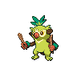
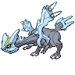
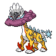
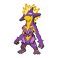
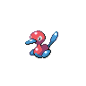

ドラパルトex＋ヨノワール

ドラパルトex・ヨノワールを中心カードとしてまとめた分類です。完全リストでのバシャーモex・ノココッチの不採用も区別の手掛かりです。
確認待ち 1件人の確認: 未確認分類の確認: 未確認対面の確認: 未確認更新記録: 未記入
作成日: 2026-10-11 JST
当週 2026-10-02〜2026-10-08（7日） / 前週 2026-09-26〜2026-10-01（6日）
公式公開結果に基づく週次レポートです。
16枠×大会数は検算用の参考値です。公式掲載8枠等を16枠へ補完せず、その実掲載数を入賞シェアの分母にしています。実参加人数・不足理由は未確認です。デッキコード未掲載も1入賞枠に含めます。
| 期間 | 大会 | 参考枠 | 公式掲載枠 | 差 | 確認根拠 |
|---|---|---|---|---|---|
| 当週 | 2026-10-03 / 竜星の嵐 高松店 / 大会 1115306 | 16 | 8 | 8 | 公式total 8、全ページ取得完了・入賞者識別一致 |
| 当週 | 2026-10-04 / トレカショップ ファンクス / 大会 1115318 | 16 | 8 | 8 | 公式total 8、全ページ取得完了・入賞者識別一致 |
| 前週 | 2026-09-26 / カードショップ楓 / 大会 1115270 | 16 | 8 | 8 | 公式total 8、全ページ取得完了・入賞者識別一致 |
更新推奨は機械的な確認候補です。構築の採否や対面判断は人が確認して記入します。
デッキ数は公開入賞枠数で、同じコードの反復入賞も数えます。入賞枠数順です。入賞シェアは使用率・実対戦勝率ではありません。期間ごとに大会数と公開入賞枠数が異なり、会場数による重み調整はしていません。「その他」は分類集約、「表示外（Top N外）」は表示件数による合算で、別の区分です。
| 順位 | デッキ分類 | デッキ数 | シェア | 差分 |
|---|---|---|---|---|
| 1 | ドラパルトex＋ヨノワール 構築プロファイル / 入賞一覧 | 136 | 10.62% | +2.89pt |
| 2 | ドラパルトex＋ノココッチ 構築プロファイル / 入賞一覧 | 104 | 8.12% | +0.93pt |
| 3 | Nのゾロアークex  構築プロファイル / 入賞一覧 | 91 | 7.11% | -0.08pt |
| 4 | メガルカリオex＋ソルロック／ルナトーン    構築プロファイル / 入賞一覧 | 86 | 6.72% | +1.32pt |
| 5 | カミッチュ＋アズマオウ＋バチンキー   構築プロファイル / 入賞一覧 | 65 | 5.08% | -0.14pt |
| 6 | フーディン  構築プロファイル / 入賞一覧 | 59 | 4.61% | +0.47pt |
| 7 | メガドリュウズex＋メタグロス／ゲノセクトex    構築プロファイル / 入賞一覧 | 58 | 4.53% | +0.93pt |
| 8 | ダダリン＋ジュペッタ  構築プロファイル / 入賞一覧 | 54 | 4.22% | -0.64pt |
| 9 | ヤドキング＋キュレム＋メタグロス  構築プロファイル / 入賞一覧 | 53 | 4.14% | -1.43pt |
| 10 | ドラパルトex＋バシャーモex  構築プロファイル / 入賞一覧 | 52 | 4.06% | -0.25pt |
| 11 | ドラパルトのその他派生形  構築プロファイル / 入賞一覧 | 50 | 3.91% | -1.22pt |
| 12 | その他のデッキタイプ 構築プロファイル / 入賞一覧 | 40 | 3.12% | +0.43pt |
| 13 | オーガポンみどり＋メガガルーラex〈タケルライコ採用・コライドン不採用〉   構築プロファイル / 入賞一覧 | 37 | 2.89% | -0.17pt |
| 14 | メガレックウザex＋ヒビキのホウオウex 構築プロファイル / 入賞一覧 | 36 | 2.81% | +0.02pt |
| 15 | ゲッコウガex／メガゲッコウガex  構築プロファイル / 入賞一覧 | 34 | 2.66% | +0.77pt |
| 16 | メガニウム＋カミツオロチex  構築プロファイル / 入賞一覧 | 33 | 2.58% | +0.06pt |
| 17 | メガミミロップex＋ノココッチ 構築プロファイル / 入賞一覧 | 31 | 2.42% | -0.64pt |
| 18 | オーガポンみどり＋メガガルーラex〈タケルライコ・コライドン両不採用〉 構築プロファイル / 入賞一覧 | 28 | 2.19% | +0.75pt |
| 19 | オーガポンみどり＋メガガルーラex〈コライドン採用・タケルライコ不採用〉 構築プロファイル / 入賞一覧 | 24 | 1.88% | -0.01pt |
| 20 | メガニウム＋メガフシギバナex  構築プロファイル / 入賞一覧 | 24 | 1.88% | +0.35pt |
| 21 | シロナのガブリアスex＋シロナのロズレイド 構築プロファイル / 入賞一覧 | 23 | 1.80% | -0.45pt |
| 22 | マリィのオーロンゲex＋ユキメノコ   構築プロファイル / 入賞一覧 | 23 | 1.80% | -0.27pt |
| 23 | メガサメハダーex＋ストリンダー   構築プロファイル / 入賞一覧 | 20 | 1.56% | +0.57pt |
| 24 | メガニウム＋オリーヴァex  構築プロファイル / 入賞一覧 | 15 | 1.17% | +0.27pt |
| 25 | メガスターミーex＋メガユキメノコex  構築プロファイル / 入賞一覧 | 13 | 1.02% | -0.33pt |
| 26 | オーガポンみどり＋メガガルーラex〈タケルライコ・コライドン両採用〉 構築プロファイル / 入賞一覧 | 12 | 0.94% | -0.32pt |
| 27 | ソウブレイズex＋ソルロック／ルナトーン  構築プロファイル / 入賞一覧 | 12 | 0.94% | +0.22pt |
| 28 | ロケット団のミュウツーex＋ロケット団のワナイダー   構築プロファイル / 入賞一覧 | 10 | 0.78% | -0.39pt |
| 29 | ヨノワール＋メガガルーラex 構築プロファイル / 入賞一覧 | 9 | 0.70% | -0.29pt |
| 30 | イワパレス  構築プロファイル / 入賞一覧 | 8 | 0.62% | -0.72pt |
| 31 | メガリザードンXex／Yex＋メガガルーラex  構築プロファイル / 入賞一覧 | 6 | 0.47% | -0.07pt |
| 32 | ガメノデス＋イイネイヌ  構築プロファイル / 入賞一覧 | 5 | 0.39% | +0.12pt |
| 33 | ブリジュラスex＋ノココッチ  構築プロファイル / 入賞一覧 | 5 | 0.39% | -0.15pt |
| 34 | ロケット団のドンカラス＋ロケット団のポリゴン2   構築プロファイル / 入賞一覧 | 5 | 0.39% | -0.78pt |
| 35 | ストリンダー＋マシマシラ  構築プロファイル / 入賞一覧 | 4 | 0.31% | -0.77pt |
| 36 | デッキコード未掲載（分類不明） 入賞一覧 | 3 | 0.23% | +0.23pt |
| 37 | ドデカバシ系  構築プロファイル / 入賞一覧 | 3 | 0.23% | -0.04pt |
| 38 | ヨノワール複合型 構築プロファイル / 入賞一覧 | 3 | 0.23% | -0.40pt |
| 39 | スピアーex  構築プロファイル / 入賞一覧 | 2 | 0.16% | -0.11pt |
| 40 | タケルライコex＋オーガポンみどり 構築プロファイル / 入賞一覧 | 2 | 0.16% | -0.11pt |
| 41 | ヒビキのバクフーン  構築プロファイル / 入賞一覧 | 2 | 0.16% | -0.20pt |
| 42 | ダイゴのメタグロスex 構築プロファイル / 入賞一覧 | 0 | 0.00% | -0.36pt |
| — | 表示外（Top N外） | 325 | 0.00% | — |
| 順位 | デッキ分類 | 公開入賞枠 | シェア | 前週枠 | 前週シェア | 差分 |
|---|---|---|---|---|---|---|
| 1 | ドラパルトex＋ヨノワール 構築プロファイル / 入賞一覧 | 136 | 10.62% | 86 | 7.73% | +2.89pt |
| 2 | ドラパルトex＋ノココッチ 構築プロファイル / 入賞一覧 | 104 | 8.12% | 80 | 7.19% | +0.93pt |
| 3 | Nのゾロアークex 構築プロファイル / 入賞一覧 | 91 | 7.11% | 80 | 7.19% | -0.08pt |
| 4 | メガルカリオex＋ソルロック／ルナトーン 構築プロファイル / 入賞一覧 | 86 | 6.72% | 60 | 5.40% | +1.32pt |
| 5 | カミッチュ＋アズマオウ＋バチンキー 構築プロファイル / 入賞一覧 | 65 | 5.08% | 58 | 5.22% | -0.14pt |
| 6 | フーディン 構築プロファイル / 入賞一覧 | 59 | 4.61% | 46 | 4.14% | +0.47pt |
| 7 | メガドリュウズex＋メタグロス／ゲノセクトex 構築プロファイル / 入賞一覧 | 58 | 4.53% | 40 | 3.60% | +0.93pt |
| 8 | ダダリン＋ジュペッタ 構築プロファイル / 入賞一覧 | 54 | 4.22% | 54 | 4.86% | -0.64pt |
| 9 | ヤドキング＋キュレム＋メタグロス 構築プロファイル / 入賞一覧 | 53 | 4.14% | 62 | 5.58% | -1.43pt |
| 10 | ドラパルトex＋バシャーモex 構築プロファイル / 入賞一覧 | 52 | 4.06% | 48 | 4.32% | -0.25pt |
| 11 | ドラパルトのその他派生形 構築プロファイル / 入賞一覧 | 50 | 3.91% | 57 | 5.13% | -1.22pt |
| 12 | その他のデッキタイプ 構築プロファイル / 入賞一覧 | 40 | 3.12% | 30 | 2.70% | +0.43pt |
| 13 | オーガポンみどり＋メガガルーラex〈タケルライコ採用・コライドン不採用〉 構築プロファイル / 入賞一覧 | 37 | 2.89% | 34 | 3.06% | -0.17pt |
| 14 | メガレックウザex＋ヒビキのホウオウex 構築プロファイル / 入賞一覧 | 36 | 2.81% | 31 | 2.79% | +0.02pt |
| 15 | ゲッコウガex／メガゲッコウガex 構築プロファイル / 入賞一覧 | 34 | 2.66% | 21 | 1.89% | +0.77pt |
| 16 | メガニウム＋カミツオロチex 構築プロファイル / 入賞一覧 | 33 | 2.58% | 28 | 2.52% | +0.06pt |
| 17 | メガミミロップex＋ノココッチ 構築プロファイル / 入賞一覧 | 31 | 2.42% | 34 | 3.06% | -0.64pt |
| 18 | オーガポンみどり＋メガガルーラex〈タケルライコ・コライドン両不採用〉 構築プロファイル / 入賞一覧 | 28 | 2.19% | 16 | 1.44% | +0.75pt |
| 19 | オーガポンみどり＋メガガルーラex〈コライドン採用・タケルライコ不採用〉 構築プロファイル / 入賞一覧 | 24 | 1.88% | 21 | 1.89% | -0.01pt |
| 20 | メガニウム＋メガフシギバナex 構築プロファイル / 入賞一覧 | 24 | 1.88% | 17 | 1.53% | +0.35pt |
| 21 | シロナのガブリアスex＋シロナのロズレイド 構築プロファイル / 入賞一覧 | 23 | 1.80% | 25 | 2.25% | -0.45pt |
| 22 | マリィのオーロンゲex＋ユキメノコ 構築プロファイル / 入賞一覧 | 23 | 1.80% | 23 | 2.07% | -0.27pt |
| 23 | メガサメハダーex＋ストリンダー 構築プロファイル / 入賞一覧 | 20 | 1.56% | 11 | 0.99% | +0.57pt |
| 24 | メガニウム＋オリーヴァex 構築プロファイル / 入賞一覧 | 15 | 1.17% | 10 | 0.90% | +0.27pt |
| 25 | メガスターミーex＋メガユキメノコex 構築プロファイル / 入賞一覧 | 13 | 1.02% | 15 | 1.35% | -0.33pt |
| 26 | オーガポンみどり＋メガガルーラex〈タケルライコ・コライドン両採用〉 構築プロファイル / 入賞一覧 | 12 | 0.94% | 14 | 1.26% | -0.32pt |
| 27 | ソウブレイズex＋ソルロック／ルナトーン 構築プロファイル / 入賞一覧 | 12 | 0.94% | 8 | 0.72% | +0.22pt |
| 28 | ロケット団のミュウツーex＋ロケット団のワナイダー 構築プロファイル / 入賞一覧 | 10 | 0.78% | 13 | 1.17% | -0.39pt |
| 29 | ヨノワール＋メガガルーラex 構築プロファイル / 入賞一覧 | 9 | 0.70% | 11 | 0.99% | -0.29pt |
| 30 | イワパレス 構築プロファイル / 入賞一覧 | 8 | 0.62% | 15 | 1.35% | -0.72pt |
| 31 | メガリザードンXex／Yex＋メガガルーラex 構築プロファイル / 入賞一覧 | 6 | 0.47% | 6 | 0.54% | -0.07pt |
| 32 | ガメノデス＋イイネイヌ 構築プロファイル / 入賞一覧 | 5 | 0.39% | 3 | 0.27% | +0.12pt |
| 33 | ブリジュラスex＋ノココッチ 構築プロファイル / 入賞一覧 | 5 | 0.39% | 6 | 0.54% | -0.15pt |
| 34 | ロケット団のドンカラス＋ロケット団のポリゴン2 構築プロファイル / 入賞一覧 | 5 | 0.39% | 13 | 1.17% | -0.78pt |
| 35 | ストリンダー＋マシマシラ 構築プロファイル / 入賞一覧 | 4 | 0.31% | 12 | 1.08% | -0.77pt |
| 36 | デッキコード未掲載（分類不明） 入賞一覧 | 3 | 0.23% | 0 | 0.00% | +0.23pt |
| 37 | ドデカバシ系 構築プロファイル / 入賞一覧 | 3 | 0.23% | 3 | 0.27% | -0.04pt |
| 38 | ヨノワール複合型 構築プロファイル / 入賞一覧 | 3 | 0.23% | 7 | 0.63% | -0.40pt |
| 39 | スピアーex 構築プロファイル / 入賞一覧 | 2 | 0.16% | 3 | 0.27% | -0.11pt |
| 40 | タケルライコex＋オーガポンみどり 構築プロファイル / 入賞一覧 | 2 | 0.16% | 3 | 0.27% | -0.11pt |
| 41 | ヒビキのバクフーン 構築プロファイル / 入賞一覧 | 2 | 0.16% | 4 | 0.36% | -0.20pt |
| 42 | ダイゴのメタグロスex 構築プロファイル / 入賞一覧 | 0 | 0.00% | 4 | 0.36% | -0.36pt |
保存済み期間の各点を表示します。全国の全入賞の網羅は未確認です。各点の分母は当該期間の全公開入賞枠です。入賞シェアは使用率・実対戦勝率ではありません。
カード採用率と平均採用枚数は、いずれも60枚確認済みの公開入賞枠を分母にします。unique deck codeを分母にする値とは区別します。下表は両週各5枠以上で、採用率差が10pt以上または平均採用枚数差が0.25枚以上（暫定）の候補です。符号は当週−前週で、枚数分布は0枚も含めます。分母が0の週は分布を未確認として補完しません。
ドラパルトex＋ヨノワール当週シェア 10.62% / 変化カード 1件 / 確認推奨 1件カード確認範囲
当週: 公開入賞枠 136 / 60枚確認済み 136 / 未確認・不完全 0
前週: 公開入賞枠 86 / 60枚確認済み 86 / 未確認・不完全 0
| 変化があったカード | 変化 |
|---|---|
| シェイミ | 平均 前週0.31枚→今週0.18枚 枚数差 -0.14枚 採用率差 -13.75pt 枚数分布今週 0枚（不採用） 82.35%（112枠）1枚 17.65%（24枠） 前週 0枚（不採用） 68.60%（59枠）1枚 31.40%（27枠） |
ドラパルトex＋ノココッチ当週シェア 8.12% / 変化カード 3件 / 確認推奨 1件カード確認範囲
当週: 公開入賞枠 104 / 60枚確認済み 104 / 未確認・不完全 0
前週: 公開入賞枠 80 / 60枚確認済み 80 / 未確認・不完全 0
| 変化があったカード | 変化 |
|---|---|
| ファイヤー | 平均 前週0.44枚→今週0.65枚 枚数差 +0.22枚 採用率差 +21.63pt 枚数分布今週 0枚（不採用） 34.62%（36枠）1枚 65.38%（68枠） 前週 0枚（不採用） 56.25%（45枠）1枚 43.75%（35枠） |
| ロケット団の監視塔 | 平均 前週0.25枚→今週0.40枚 枚数差 +0.15枚 採用率差 +14.42pt 枚数分布今週 0枚（不採用） 60.58%（63枠）1枚 38.46%（40枠）2枚 0.96%（1枠） 前週 0枚（不採用） 75.00%（60枠）1枚 25.00%（20枠） |
| ヒカリ | 平均 前週0.07枚→今週0.21枚 枚数差 +0.14枚 採用率差 +13.94pt 枚数分布今週 0枚（不採用） 79.81%（83枠）1枚 19.23%（20枠）2枚 0.96%（1枠） 前週 0枚（不採用） 93.75%（75枠）1枚 5.00%（4枠）2枚 1.25%（1枠） |
Nのゾロアークex当週シェア 7.11% / 変化カード 4件 / 確認推奨 1件カード確認範囲
当週: 公開入賞枠 91 / 60枚確認済み 91 / 未確認・不完全 0
前週: 公開入賞枠 80 / 60枚確認済み 80 / 未確認・不完全 0
| 変化があったカード | 変化 |
|---|---|
| Nのダルマッカ | 平均 前週0.38枚→今週0.51枚 枚数差 +0.13枚 採用率差 +11.95pt 枚数分布今週 0枚（不採用） 50.55%（46枠）1枚 48.35%（44枠）2枚 1.10%（1枠） 前週 0枚（不採用） 62.50%（50枠）1枚 37.50%（30枠） |
| Nのヒヒダルマ | 平均 前週0.38枚→今週0.49枚 枚数差 +0.12枚 採用率差 +11.95pt 枚数分布今週 0枚（不採用） 50.55%（46枠）1枚 49.45%（45枠） 前週 0枚（不採用） 62.50%（50枠）1枚 37.50%（30枠） |
| シャリタツ | 平均 前週0.49枚→今週0.60枚 枚数差 +0.12枚 採用率差 +11.69pt 枚数分布今週 0枚（不採用） 39.56%（36枠）1枚 60.44%（55枠） 前週 0枚（不採用） 51.25%（41枠）1枚 48.75%（39枠） |
| ニャースex | 平均 前週0.21枚→今週0.11枚 枚数差 -0.10枚 採用率差 -10.26pt 枚数分布今週 0枚（不採用） 89.01%（81枠）1枚 10.99%（10枠） 前週 0枚（不採用） 78.75%（63枠）1枚 21.25%（17枠） |
メガルカリオex＋ソルロック／ルナトーン当週シェア 6.72% / 変化カード 1件 / 確認推奨 1件カード確認範囲
当週: 公開入賞枠 86 / 60枚確認済み 86 / 未確認・不完全 0
前週: 公開入賞枠 60 / 60枚確認済み 60 / 未確認・不完全 0
| 変化があったカード | 変化 |
|---|---|
| ニャースex | 平均 前週0.37枚→今週0.50枚 枚数差 +0.13枚 採用率差 +12.17pt 枚数分布今週 0枚（不採用） 51.16%（44枠）1枚 47.67%（41枠）2枚 1.16%（1枠） 前週 0枚（不採用） 63.33%（38枠）1枚 36.67%（22枠） |
カミッチュ＋アズマオウ＋バチンキー当週シェア 5.08% / 変化カード 8件 / 確認推奨 1件カード確認範囲
当週: 公開入賞枠 65 / 60枚確認済み 65 / 未確認・不完全 0
前週: 公開入賞枠 58 / 60枚確認済み 58 / 未確認・不完全 0
| 変化があったカード | 変化 |
|---|---|
| グロウ草エネルギー | 平均 前週0.86枚→今週1.31枚 枚数差 +0.45枚 採用率差 +21.70pt 枚数分布今週 0枚（不採用） 36.92%（24枠）1枚 23.08%（15枠）2枚 20.00%（13枠）3枚 12.31%（8枠）4枚 7.69%（5枠） 前週 0枚（不採用） 58.62%（34枠）1枚 10.34%（6枠）2枚 20.69%（12枠）3枚 6.90%（4枠）4枚 3.45%（2枠） |
| ハイパーボール | 平均 前週2.59枚→今週2.94枚 枚数差 +0.35枚 採用率差 +2.10pt 枚数分布今週 0枚（不採用） 3.08%（2枠）2枚 29.23%（19枠）3枚 35.38%（23枠）4枚 32.31%（21枠） 前週 0枚（不採用） 5.17%（3枠）2枚 46.55%（27枠）3枚 27.59%（16枠）4枚 20.69%（12枠） |
| むしとりセット | 平均 前週2.03枚→今週1.74枚 枚数差 -0.30枚 採用率差 +0.08pt 枚数分布今週 0枚（不採用） 29.23%（19枠）1枚 10.77%（7枠）2枚 23.08%（15枠）3枚 30.77%（20枠）4枚 6.15%（4枠） 前週 0枚（不採用） 29.31%（17枠）1枚 1.72%（1枠）2枚 25.86%（15枠）3枚 22.41%（13枠）4枚 20.69%（12枠） |
| ベラカス | 平均 前週0.50枚→今週0.34枚 枚数差 -0.16枚 採用率差 -16.15pt 枚数分布今週 0枚（不採用） 66.15%（43枠）1枚 33.85%（22枠） 前週 0枚（不採用） 50.00%（29枠）1枚 50.00%（29枠） |
| シガロコ | 平均 前週0.52枚→今週0.37枚 枚数差 -0.15枚 採用率差 -17.88pt 枚数分布今週 0枚（不採用） 66.15%（43枠）1枚 30.77%（20枠）2枚 3.08%（2枠） 前週 0枚（不採用） 48.28%（28枠）1枚 51.72%（30枠） |
| シークレットボックス | 平均 前週0.83枚→今週0.97枚 枚数差 +0.14枚 採用率差 +14.16pt 枚数分布今週 0枚（不採用） 3.08%（2枠）1枚 96.92%（63枠） 前週 0枚（不採用） 17.24%（10枠）1枚 82.76%（48枠） |
| コダック | 平均 前週0.31枚→今週0.45枚 枚数差 +0.14枚 採用率差 +13.58pt 枚数分布今週 0枚（不採用） 55.38%（36枠）1枚 44.62%（29枠） 前週 0枚（不採用） 68.97%（40枠）1枚 31.03%（18枠） |
| スグリ | 平均 前週0.71枚→今週0.77枚 枚数差 +0.06枚 採用率差 +10.05pt 枚数分布今週 0枚（不採用） 26.15%（17枠）1枚 70.77%（46枠）2枚 3.08%（2枠） 前週 0枚（不採用） 36.21%（21枠）1枚 56.90%（33枠）2枚 6.90%（4枠） |
フーディン当週シェア 4.61% / 変化カード 20件 / 確認推奨 1件カード確認範囲
当週: 公開入賞枠 59 / 60枚確認済み 59 / 未確認・不完全 0
前週: 公開入賞枠 46 / 60枚確認済み 46 / 未確認・不完全 0
| 変化があったカード | 変化 |
|---|---|
| バトルコロシアム | 平均 前週2.87枚→今週1.86枚 枚数差 -1.01枚 採用率差 -29.33pt 枚数分布今週 0枚（不採用） 42.37%（25枠）1枚 1.69%（1枠）2枚 1.69%（1枠）3枚 35.59%（21枠）4枚 18.64%（11枠） 前週 0枚（不採用） 13.04%（6枠）1枚 4.35%（2枠）2枚 6.52%（3枠）3枚 34.78%（16枠）4枚 41.30%（19枠） |
| ヨマワル | 平均 前週0.30枚→今週1.14枚 枚数差 +0.83枚 採用率差 +21.33pt 枚数分布今週 0枚（不採用） 67.80%（40枠）2枚 1.69%（1枠）3枚 11.86%（7枠）4枚 18.64%（11枠） 前週 0枚（不採用） 89.13%（41枠）2枚 6.52%（3枠）4枚 4.35%（2枠） |
| ノコッチ | 平均 前週2.61枚→今週1.90枚 枚数差 -0.71枚 採用率差 -19.64pt 枚数分布今週 0枚（不採用） 30.51%（18枠）2枚 18.64%（11枠）3枚 50.85%（30枠） 前週 0枚（不採用） 10.87%（5枠）1枚 2.17%（1枠）2枚 6.52%（3枠）3枚 76.09%（35枠）4枚 4.35%（2枠） |
| ムク | 平均 前週0.43枚→今週1.00枚 枚数差 +0.57枚 採用率差 +22.55pt 枚数分布今週 0枚（不採用） 64.41%（38枠）1枚 5.08%（3枠）2枚 1.69%（1枠）3枚 23.73%（14枠）4枚 5.08%（3枠） 前週 0枚（不採用） 86.96%（40枠）1枚 2.17%（1枠）3枚 2.17%（1枠）4枚 8.70%（4枠） |
| スペシャルレッドカード | 平均 前週0.52枚→今週1.05枚 枚数差 +0.53枚 採用率差 +27.23pt 枚数分布今週 0枚（不採用） 27.12%（16枠）1枚 40.68%（24枠）2枚 32.20%（19枠） 前週 0枚（不採用） 54.35%（25枠）1枚 39.13%（18枠）2枚 6.52%（3枠） |
| ノココッチ | 平均 前週2.09枚→今週1.58枚 枚数差 -0.51枚 採用率差 -19.64pt 枚数分布今週 0枚（不採用） 30.51%（18枠）2枚 50.85%（30枠）3枚 18.64%（11枠） 前週 0枚（不採用） 10.87%（5枠）1枚 2.17%（1枠）2枚 54.35%（25枠）3枚 32.61%（15枠） |
| サマヨール | 平均 前週0.15枚→今週0.64枚 枚数差 +0.49枚 採用率差 +21.33pt 枚数分布今週 0枚（不採用） 67.80%（40枠）1枚 1.69%（1枠）2枚 28.81%（17枠）3枚 1.69%（1枠） 前週 0枚（不採用） 89.13%（41枠）1枚 6.52%（3枠）2枚 4.35%（2枠） |
| ヨノワール | 平均 前週0.17枚→今週0.64枚 枚数差 +0.47枚 採用率差 +21.33pt 枚数分布今週 0枚（不採用） 67.80%（40枠）1枚 1.69%（1枠）2枚 28.81%（17枠）3枚 1.69%（1枠） 前週 0枚（不採用） 89.13%（41枠）1枚 6.52%（3枠）2枚 2.17%（1枠）3枚 2.17%（1枠） |
| ボスの指令 | 平均 前週2.67枚→今週2.29枚 枚数差 -0.39枚 採用率差 +0.00pt 枚数分布今週 0枚（不採用） 0.00%（0枠）1枚 23.73%（14枠）2枚 23.73%（14枠）3枚 52.54%（31枠） 前週 0枚（不採用） 0.00%（0枠）1枚 2.17%（1枠）2枚 28.26%（13枠）3枚 69.57%（32枠） |
| なかよしポフィン | 平均 前週3.85枚→今週3.47枚 枚数差 -0.37枚 採用率差 -6.30pt 枚数分布今週 0枚（不採用） 8.47%（5枠）3枚 18.64%（11枠）4枚 72.88%（43枠） 前週 0枚（不採用） 2.17%（1枠）3枚 6.52%（3枠）4枚 91.30%（42枠） |
| スボミー | 平均 前週0.09枚→今週0.46枚 枚数差 +0.37枚 採用率差 +22.77pt 枚数分布今週 0枚（不採用） 72.88%（43枠）1枚 8.47%（5枠）2枚 18.64%（11枠） 前週 0枚（不採用） 95.65%（44枠）2枚 4.35%（2枠） |
| あやしい時計 | 平均 前週0.11枚→今週0.46枚 枚数差 +0.35枚 採用率差 +13.82pt 枚数分布今週 0枚（不採用） 79.66%（47枠）1枚 3.39%（2枠）2枚 8.47%（5枠）3枚 8.47%（5枠） 前週 0枚（不採用） 93.48%（43枠）1枚 2.17%（1枠）2枚 4.35%（2枠） |
| プルリル | 平均 前週0.00枚→今週0.31枚 枚数差 +0.31枚 採用率差 +8.47pt 枚数分布今週 0枚（不採用） 91.53%（54枠）2枚 1.69%（1枠）4枚 6.78%（4枠） 前週 0枚（不採用） 100.00%（46枠） |
| ふしぎなアメ | 平均 前週3.13枚→今週3.39枚 枚数差 +0.26枚 採用率差 +2.17pt 枚数分布今週 0枚（不採用） 0.00%（0枠）2枚 6.78%（4枠）3枚 47.46%（28枠）4枚 45.76%（27枠） 前週 0枚（不採用） 2.17%（1枠）1枚 2.17%（1枠）2枚 4.35%（2枠）3枚 63.04%（29枠）4枚 28.26%（13枠） |
| プライムキャッチャー | 平均 前週0.04枚→今週0.29枚 枚数差 +0.24枚 採用率差 +24.47pt 枚数分布今週 0枚（不採用） 71.19%（42枠）1枚 28.81%（17枠） 前週 0枚（不採用） 95.65%（44枠）1枚 4.35%（2枠） |
| ノココッチex | 平均 前週0.37枚→今週0.14枚 枚数差 -0.23枚 採用率差 -23.40pt 枚数分布今週 0枚（不採用） 86.44%（51枠）1枚 13.56%（8枠） 前週 0枚（不採用） 63.04%（29枠）1枚 36.96%（17枠） |
| ポケモンいれかえ | 平均 前週0.35枚→今週0.15枚 枚数差 -0.20枚 採用率差 -17.35pt 枚数分布今週 0枚（不採用） 84.75%（50枠）1枚 15.25%（9枠） 前週 0枚（不採用） 67.39%（31枠）1枚 30.43%（14枠）2枚 2.17%（1枠） |
| リッチエネルギー | 平均 前週0.85枚→今週0.68枚 枚数差 -0.17枚 採用率差 -16.99pt 枚数分布今週 0枚（不採用） 32.20%（19枠）1枚 67.80%（40枠） 前週 0枚（不採用） 15.22%（7枠）1枚 84.78%（39枠） |
| ハンディサーキュレーター | 平均 前週0.39枚→今週0.25枚 枚数差 -0.14枚 採用率差 -10.35pt 枚数分布今週 0枚（不採用） 86.44%（51枠）1枚 3.39%（2枠）2枚 8.47%（5枠）3枚 1.69%（1枠） 前週 0枚（不採用） 76.09%（35枠）1枚 10.87%（5枠）2枚 10.87%（5枠）3枚 2.17%（1枠） |
| スピンロトム | 平均 前週0.13枚→今週0.00枚 枚数差 -0.13枚 採用率差 -13.04pt 枚数分布今週 0枚（不採用） 100.00%（59枠） 前週 0枚（不採用） 86.96%（40枠）1枚 13.04%（6枠） |
メガドリュウズex＋メタグロス／ゲノセクトex当週シェア 4.53% / 変化カード 11件 / 確認推奨 1件カード確認範囲
当週: 公開入賞枠 58 / 60枚確認済み 58 / 未確認・不完全 0
前週: 公開入賞枠 40 / 60枚確認済み 40 / 未確認・不完全 0
| 変化があったカード | 変化 |
|---|---|
| リーリエの決心 | 平均 前週1.73枚→今週1.17枚 枚数差 -0.55枚 採用率差 -16.72pt 枚数分布今週 0枚（不採用） 51.72%（30枠）1枚 5.17%（3枠）2枚 18.97%（11枠）3枚 22.41%（13枠）4枚 1.72%（1枠） 前週 0枚（不採用） 35.00%（14枠）1枚 7.50%（3枠）2枚 17.50%（7枠）3枚 30.00%（12枠）4枚 10.00%（4枠） |
| なかよしポフィン | 平均 前週2.95枚→今週2.66枚 枚数差 -0.29枚 採用率差 -4.40pt 枚数分布今週 0枚（不採用） 6.90%（4枠）1枚 27.59%（16枠）2枚 5.17%（3枠）3枚 13.79%（8枠）4枚 46.55%（27枠） 前週 0枚（不採用） 2.50%（1枠）1枚 20.00%（8枠）2枚 5.00%（2枠）3枚 25.00%（10枠）4枚 47.50%（19枠） |
| 基本鋼エネルギー | 平均 前週15.90枚→今週16.19枚 枚数差 +0.29枚 採用率差 +0.00pt 枚数分布今週 0枚（不採用） 0.00%（0枠）15枚 18.97%（11枠）16枚 67.24%（39枠）17枚 5.17%（3枠）19枚 1.72%（1枠）20枚 6.90%（4枠） 前週 0枚（不採用） 0.00%（0枠）13枚 2.50%（1枠）14枚 5.00%（2枠）15枚 20.00%（8枠）16枚 57.50%（23枠）17枚 10.00%（4枠）19枚 2.50%（1枠）20枚 2.50%（1枠） |
| タケシのスカウト | 平均 前週0.80枚→今週1.09枚 枚数差 +0.29枚 採用率差 +7.24pt 枚数分布今週 0枚（不採用） 32.76%（19枠）1枚 44.83%（26枠）2枚 10.34%（6枠）3枚 5.17%（3枠）4枚 6.90%（4枠） 前週 0枚（不採用） 40.00%（16枠）1枚 50.00%（20枠）2枚 5.00%（2枠）4枚 5.00%（2枠） |
| スグリ | 平均 前週0.50枚→今週0.71枚 枚数差 +0.21枚 採用率差 +11.12pt 枚数分布今週 0枚（不採用） 41.38%（24枠）1枚 46.55%（27枠）2枚 12.07%（7枠） 前週 0枚（不採用） 52.50%（21枠）1枚 45.00%（18枠）2枚 2.50%（1枠） |
| ハイパーボール | 平均 前週1.00枚→今週0.84枚 枚数差 -0.16枚 採用率差 -11.03pt 枚数分布今週 0枚（不採用） 31.03%（18枠）1枚 56.90%（33枠）2枚 10.34%（6枠）4枚 1.72%（1枠） 前週 0枚（不採用） 20.00%（8枠）1枚 67.50%（27枠）2枚 5.00%（2枠）3枚 7.50%（3枠） |
| ふうせん | 平均 前週0.28枚→今週0.12枚 枚数差 -0.15枚 採用率差 -10.43pt 枚数分布今週 0枚（不採用） 87.93%（51枠）1枚 12.07%（7枠） 前週 0枚（不採用） 77.50%（31枠）1枚 17.50%（7枠）2枚 5.00%（2枠） |
| プレシャスキャリー | 平均 前週0.85枚→今週0.98枚 枚数差 +0.13枚 採用率差 +13.28pt 枚数分布今週 0枚（不採用） 1.72%（1枠）1枚 98.28%（57枠） 前週 0枚（不採用） 15.00%（6枠）1枚 85.00%（34枠） |
| メガエアームドex | 平均 前週0.28枚→今週0.40枚 枚数差 +0.12枚 採用率差 +14.66pt 枚数分布今週 0枚（不採用） 60.34%（35枠）1枚 39.66%（23枠） 前週 0枚（不採用） 75.00%（30枠）1枚 22.50%（9枠）2枚 2.50%（1枠） |
| ヒーローマント | 平均 前週0.12枚→今週0.02枚 枚数差 -0.11枚 採用率差 -10.78pt 枚数分布今週 0枚（不採用） 98.28%（57枠）1枚 1.72%（1枠） 前週 0枚（不採用） 87.50%（35枠）1枚 12.50%（5枠） |
| ジャミングタワー | 平均 前週0.20枚→今週0.29枚 枚数差 +0.09枚 採用率差 +11.81pt 枚数分布今週 0枚（不採用） 70.69%（41枠）1枚 29.31%（17枠） 前週 0枚（不採用） 82.50%（33枠）1枚 15.00%（6枠）2枚 2.50%（1枠） |
ダダリン＋ジュペッタ当週シェア 4.22% / 変化カード 11件 / 確認推奨 1件カード確認範囲
当週: 公開入賞枠 54 / 60枚確認済み 54 / 未確認・不完全 0
前週: 公開入賞枠 54 / 60枚確認済み 54 / 未確認・不完全 0
| 変化があったカード | 変化 |
|---|---|
| 基本超エネルギー | 平均 前週2.65枚→今週2.13枚 枚数差 -0.52枚 採用率差 -1.85pt 枚数分布今週 0枚（不採用） 1.85%（1枠）1枚 11.11%（6枠）2枚 64.81%（35枠）3枚 16.67%（9枠）4枚 5.56%（3枠） 前週 0枚（不採用） 0.00%（0枠）1枚 1.85%（1枠）2枚 53.70%（29枠）3枚 37.04%（20枠）4枚 5.56%（3枠）12枚 1.85%（1枠） |
| なかよしポフィン | 平均 前週1.61枚→今週1.22枚 枚数差 -0.39枚 採用率差 -9.26pt 枚数分布今週 0枚（不採用） 33.33%（18枠）1枚 14.81%（8枠）2枚 48.15%（26枠）3枚 3.70%（2枠） 前週 0枚（不採用） 24.07%（13枠）1枚 11.11%（6枠）2枚 44.44%（24枠）3枚 20.37%（11枠） |
| 探検家の先導 | 平均 前週0.59枚→今週0.96枚 枚数差 +0.37枚 採用率差 +12.96pt 枚数分布今週 0枚（不採用） 61.11%（33枠）1枚 9.26%（5枠）2枚 11.11%（6枠）3枚 9.26%（5枠）4枚 9.26%（5枠） 前週 0枚（不採用） 74.07%（40枠）1枚 9.26%（5枠）2枚 7.41%（4枠）3枚 1.85%（1枠）4枚 7.41%（4枠） |
| ロケット団のラムダ | 平均 前週0.30枚→今週0.00枚 枚数差 -0.30枚 採用率差 -9.26pt 枚数分布今週 0枚（不採用） 100.00%（54枠） 前週 0枚（不採用） 90.74%（49枠）1枚 1.85%（1枠）3枚 1.85%（1枠）4枚 5.56%（3枠） |
| ムク | 平均 前週2.65枚→今週2.93枚 枚数差 +0.28枚 採用率差 +9.26pt 枚数分布今週 0枚（不採用） 3.70%（2枠）1枚 3.70%（2枠）2枚 5.56%（3枠）3枚 70.37%（38枠）4枚 16.67%（9枠） 前週 0枚（不採用） 12.96%（7枠）1枚 3.70%（2枠）2枚 11.11%（6枠）3枚 50.00%（27枠）4枚 22.22%（12枠） |
| リーリエの決心 | 平均 前週3.83枚→今週3.57枚 枚数差 -0.26枚 採用率差 -3.70pt 枚数分布今週 0枚（不採用） 3.70%（2枠）2枚 5.56%（3枠）3枚 16.67%（9枠）4枚 74.07%（40枠） 前週 0枚（不採用） 0.00%（0枠）2枚 5.56%（3枠）3枚 5.56%（3枠）4枚 88.89%（48枠） |
| レガシーエネルギー | 平均 前週0.56枚→今週0.81枚 枚数差 +0.26枚 採用率差 +25.93pt 枚数分布今週 0枚（不採用） 18.52%（10枠）1枚 81.48%（44枠） 前週 0枚（不採用） 44.44%（24枠）1枚 55.56%（30枠） |
| スペシャルレッドカード | 平均 前週0.30枚→今週0.48枚 枚数差 +0.19枚 採用率差 +14.81pt 枚数分布今週 0枚（不採用） 57.41%（31枠）1枚 37.04%（20枠）2枚 5.56%（3枠） 前週 0枚（不採用） 72.22%（39枠）1枚 25.93%（14枠）2枚 1.85%（1枠） |
| パーフェクトミキサー | 平均 前週0.24枚→今週0.07枚 枚数差 -0.17枚 採用率差 -16.67pt 枚数分布今週 0枚（不採用） 92.59%（50枠）1枚 7.41%（4枠） 前週 0枚（不採用） 75.93%（41枠）1枚 24.07%（13枠） |
| キチキギスex | 平均 前週0.37枚→今週0.24枚 枚数差 -0.13枚 採用率差 -12.96pt 枚数分布今週 0枚（不採用） 75.93%（41枠）1枚 24.07%（13枠） 前週 0枚（不採用） 62.96%（34枠）1枚 37.04%（20枠） |
| からておうの稽古 | 平均 前週0.06枚→今週0.17枚 枚数差 +0.11枚 採用率差 +11.11pt 枚数分布今週 0枚（不採用） 83.33%（45枠）1枚 16.67%（9枠） 前週 0枚（不採用） 94.44%（51枠）1枚 5.56%（3枠） |
ヤドキング＋キュレム＋メタグロス当週シェア 4.14% / 変化カード 5件 / 確認推奨 1件カード確認範囲
当週: 公開入賞枠 53 / 60枚確認済み 53 / 未確認・不完全 0
前週: 公開入賞枠 62 / 60枚確認済み 62 / 未確認・不完全 0
| 変化があったカード | 変化 |
|---|---|
| ポケパッド | 平均 前週3.56枚→今週3.83枚 枚数差 +0.27枚 採用率差 +0.00pt 枚数分布今週 0枚（不採用） 0.00%（0枠）3枚 16.98%（9枠）4枚 83.02%（44枠） 前週 0枚（不採用） 0.00%（0枠）3枚 43.55%（27枠）4枚 56.45%（35枠） |
| ミュウex | 平均 前週0.24枚→今週0.09枚 枚数差 -0.15枚 採用率差 -13.15pt 枚数分布今週 0枚（不採用） 90.57%（48枠）1枚 9.43%（5枠） 前週 0枚（不採用） 77.42%（48枠）1枚 20.97%（13枠）2枚 1.61%（1枠） |
| サーファー | 平均 前週0.47枚→今週0.32枚 枚数差 -0.15枚 採用率差 -14.70pt 枚数分布今週 0枚（不採用） 67.92%（36枠）1枚 32.08%（17枠） 前週 0枚（不採用） 53.23%（33枠）1枚 46.77%（29枠） |
| パーモット | 平均 前週0.26枚→今週0.40枚 枚数差 +0.14枚 採用率差 +13.82pt 枚数分布今週 0枚（不採用） 60.38%（32枠）1枚 39.62%（21枠） 前週 0枚（不採用） 74.19%（46枠）1枚 25.81%（16枠） |
| コノヨザル | 平均 前週0.94枚→今週1.04枚 枚数差 +0.10枚 採用率差 +16.34pt 枚数分布今週 0枚（不採用） 20.75%（11枠）1枚 54.72%（29枠）2枚 24.53%（13枠） 前週 0枚（不採用） 37.10%（23枠）1枚 32.26%（20枠）2枚 30.65%（19枠） |
ドラパルトex＋バシャーモex当週シェア 4.06% / 変化カード 3件 / 確認推奨 1件カード確認範囲
当週: 公開入賞枠 52 / 60枚確認済み 52 / 未確認・不完全 0
前週: 公開入賞枠 48 / 60枚確認済み 48 / 未確認・不完全 0
| 変化があったカード | 変化 |
|---|---|
| ファイヤー | 平均 前週0.17枚→今週0.31枚 枚数差 +0.14枚 採用率差 +14.10pt 枚数分布今週 0枚（不採用） 69.23%（36枠）1枚 30.77%（16枠） 前週 0枚（不採用） 83.33%（40枠）1枚 16.67%（8枠） |
| イーユイ | 平均 前週0.40枚→今週0.27枚 枚数差 -0.13枚 採用率差 -12.66pt 枚数分布今週 0枚（不採用） 73.08%（38枠）1枚 26.92%（14枠） 前週 0枚（不採用） 60.42%（29枠）1枚 39.58%（19枠） |
| リーリエのピッピex | 平均 前週0.65枚→今週0.77枚 枚数差 +0.12枚 採用率差 +12.34pt 枚数分布今週 0枚（不採用） 23.08%（12枠）1枚 76.92%（40枠） 前週 0枚（不採用） 35.42%（17枠）1枚 64.58%（31枠） |
ドラパルトのその他派生形当週シェア 3.91% / 変化カード 18件 / 確認推奨 1件カード確認範囲
当週: 公開入賞枠 50 / 60枚確認済み 50 / 未確認・不完全 0
前週: 公開入賞枠 57 / 60枚確認済み 57 / 未確認・不完全 0
| 変化があったカード | 変化 |
|---|---|
| クラッシュハンマー | 平均 前週0.47枚→今週1.30枚 枚数差 +0.83枚 採用率差 +23.72pt 枚数分布今週 0枚（不採用） 64.00%（32枠）2枚 2.00%（1枠）3枚 10.00%（5枠）4枚 24.00%（12枠） 前週 0枚（不採用） 87.72%（50枠）3枚 1.75%（1枠）4枚 10.53%（6枠） |
| ヨマワル | 平均 前週0.96枚→今週0.48枚 枚数差 -0.48枚 採用率差 -20.63pt 枚数分布今週 0枚（不採用） 68.00%（34枠）1枚 18.00%（9枠）2枚 12.00%（6枠）3枚 2.00%（1枠） 前週 0枚（不採用） 47.37%（27枠）1枚 10.53%（6枠）2枚 40.35%（23枠）3枚 1.75%（1枠） |
| ノコッチ | 平均 前週0.96枚→今週0.50枚 枚数差 -0.46枚 採用率差 -22.39pt 枚数分布今週 0枚（不採用） 68.00%（34枠）1枚 18.00%（9枠）2枚 10.00%（5枠）3枚 4.00%（2枠） 前週 0枚（不採用） 45.61%（26枠）1枚 15.79%（9枠）2枚 35.09%（20枠）3枚 3.51%（2枠） |
| 危ない廃墟 | 平均 前週0.93枚→今週0.56枚 枚数差 -0.37枚 採用率差 -18.91pt 枚数分布今週 0枚（不採用） 54.00%（27枠）1枚 36.00%（18枠）2枚 10.00%（5枠） 前週 0枚（不採用） 35.09%（20枠）1枚 36.84%（21枠）2枚 28.07%（16枠） |
| ハイパーボール | 平均 前週3.63枚→今週3.34枚 枚数差 -0.29枚 採用率差 -6.00pt 枚数分布今週 0枚（不採用） 6.00%（3枠）2枚 4.00%（2枠）3枚 34.00%（17枠）4枚 56.00%（28枠） 前週 0枚（不採用） 0.00%（0枠）2枚 3.51%（2枠）3枚 29.82%（17枠）4枚 66.67%（38枠） |
| ノココッチ | 平均 前週0.63枚→今週0.34枚 枚数差 -0.29枚 採用率差 -24.39pt 枚数分布今週 0枚（不採用） 70.00%（35枠）1枚 26.00%（13枠）2枚 4.00%（2枠） 前週 0枚（不採用） 45.61%（26枠）1枚 45.61%（26枠）2枚 8.77%（5枠） |
| 基本悪エネルギー | 平均 前週1.91枚→今週1.64枚 枚数差 -0.27枚 採用率差 -6.98pt 枚数分布今週 0枚（不採用） 14.00%（7枠）1枚 18.00%（9枠）2枚 60.00%（30枠）3枚 6.00%（3枠）4枚 2.00%（1枠） 前週 0枚（不採用） 7.02%（4枠）1枚 7.02%（4枠）2枚 75.44%（43枠）3枚 8.77%（5枠）4枚 1.75%（1枠） |
| リーリエの決心 | 平均 前週3.95枚→今週3.68枚 枚数差 -0.27枚 採用率差 -6.00pt 枚数分布今週 0枚（不採用） 6.00%（3枠）2枚 2.00%（1枠）3枚 4.00%（2枠）4枚 88.00%（44枠） 前週 0枚（不採用） 0.00%（0枠）1枚 1.75%（1枠）4枚 98.25%（56枠） |
| ロケット団の監視塔 | 平均 前週0.46枚→今週0.72枚 枚数差 +0.26枚 採用率差 +15.16pt 枚数分布今週 0枚（不採用） 48.00%（24枠）1枚 40.00%（20枠）2枚 6.00%（3枠）3枚 4.00%（2枠）4枚 2.00%（1枠） 前週 0枚（不採用） 63.16%（36枠）1枚 29.82%（17枠）2枚 5.26%（3枠）3枚 1.75%（1枠） |
| サマヨール | 平均 前週0.46枚→今週0.20枚 枚数差 -0.26枚 採用率差 -24.11pt 枚数分布今週 0枚（不採用） 82.00%（41枠）1枚 16.00%（8枠）2枚 2.00%（1枠） 前週 0枚（不採用） 57.89%（33枠）1枚 38.60%（22枠）2枚 3.51%（2枠） |
| ジャッジマン | 平均 前週0.32枚→今週0.54枚 枚数差 +0.22枚 採用率差 +19.93pt 枚数分布今週 0枚（不採用） 52.00%（26枠）1枚 44.00%（22枠）2枚 2.00%（1枠）3枚 2.00%（1枠） 前週 0枚（不採用） 71.93%（41枠）1枚 24.56%（14枠）2枚 3.51%（2枠） |
| ヨノワール | 平均 前週0.56枚→今週0.34枚 枚数差 -0.22枚 採用率差 -20.63pt 枚数分布今週 0枚（不採用） 68.00%（34枠）1枚 30.00%（15枠）2枚 2.00%（1枠） 前週 0枚（不採用） 47.37%（27枠）1枚 49.12%（28枠）2枚 3.51%（2枠） |
| シェイミ | 平均 前週0.19枚→今週0.40枚 枚数差 +0.21枚 採用率差 +20.70pt 枚数分布今週 0枚（不採用） 60.00%（30枠）1枚 40.00%（20枠） 前週 0枚（不採用） 80.70%（46枠）1枚 19.30%（11枠） |
| ノココッチex | 平均 前週0.46枚→今週0.26枚 枚数差 -0.20枚 採用率差 -19.61pt 枚数分布今週 0枚（不採用） 74.00%（37枠）1枚 26.00%（13枠） 前週 0枚（不採用） 54.39%（31枠）1枚 45.61%（26枠） |
| メイのはげまし | 平均 前週0.70枚→今週0.54枚 枚数差 -0.16枚 採用率差 -16.18pt 枚数分布今週 0枚（不採用） 46.00%（23枠）1枚 54.00%（27枠） 前週 0枚（不採用） 29.82%（17枠）1枚 70.18%（40枠） |
| ふしぎなアメ | 平均 前週1.40枚→今週1.28枚 枚数差 -0.12枚 採用率差 -14.42pt 枚数分布今週 0枚（不採用） 46.00%（23枠）1枚 6.00%（3枠）2枚 24.00%（12枠）3枚 22.00%（11枠）4枚 2.00%（1枠） 前週 0枚（不採用） 31.58%（18枠）1枚 12.28%（7枠）2枚 40.35%（23枠）3枚 15.79%（9枠） |
| イベルタル | 平均 前週0.16枚→今週0.04枚 枚数差 -0.12枚 採用率差 -11.79pt 枚数分布今週 0枚（不採用） 96.00%（48枠）1枚 4.00%（2枠） 前週 0枚（不採用） 84.21%（48枠）1枚 15.79%（9枠） |
| スボミー | 平均 前週1.26枚→今週1.16枚 枚数差 -0.10枚 採用率差 -10.25pt 枚数分布今週 0枚（不採用） 12.00%（6枠）1枚 60.00%（30枠）2枚 28.00%（14枠） 前週 0枚（不採用） 1.75%（1枠）1枚 70.18%（40枠）2枚 28.07%（16枠） |
その他のデッキタイプ当週シェア 3.12% / 変化カード 60件 / 確認推奨 1件カード確認範囲
当週: 公開入賞枠 40 / 60枚確認済み 40 / 未確認・不完全 0
前週: 公開入賞枠 30 / 60枚確認済み 30 / 未確認・不完全 0
| 変化があったカード | 変化 |
|---|---|
| 基本雷エネルギー | 平均 前週2.10枚→今週0.62枚 枚数差 -1.48枚 採用率差 -34.17pt 枚数分布今週 0枚（不採用） 87.50%（35枠）2枚 7.50%（3枠）8枚 2.50%（1枠）11枚 2.50%（1枠） 前週 0枚（不採用） 53.33%（16枠）1枚 6.67%（2枠）2枚 10.00%（3枠）4枚 13.33%（4枠）5枚 3.33%（1枠）7枚 6.67%（2枠）8枚 3.33%（1枠）12枚 3.33%（1枠） |
| 基本草エネルギー | 平均 前週2.37枚→今週3.50枚 枚数差 +1.13枚 採用率差 -1.67pt 枚数分布今週 0枚（不採用） 65.00%（26枠）1枚 5.00%（2枠）4枚 2.50%（1枠）5枚 5.00%（2枠）8枚 2.50%（1枠）11枚 2.50%（1枠）13枚 5.00%（2枠）14枚 5.00%（2枠）16枚 5.00%（2枠）19枚 2.50%（1枠） 前週 0枚（不採用） 63.33%（19枠）1枚 6.67%（2枠）2枚 6.67%（2枠）4枚 10.00%（3枠）11枚 3.33%（1枠）12枚 3.33%（1枠）14枚 3.33%（1枠）16枚 3.33%（1枠） |
| 基本鋼エネルギー | 平均 前週0.57枚→今週1.38枚 枚数差 +0.81枚 採用率差 +5.00pt 枚数分布今週 0枚（不採用） 85.00%（34枠）1枚 5.00%（2枠）7枚 2.50%（1枠）8枚 2.50%（1枠）18枚 2.50%（1枠）20枚 2.50%（1枠） 前週 0枚（不採用） 90.00%（27枠）1枚 3.33%（1枠）2枚 3.33%（1枠）14枚 3.33%（1枠） |
| 基本闘エネルギー | 平均 前週0.13枚→今週0.93枚 枚数差 +0.79枚 採用率差 +5.00pt 枚数分布今週 0枚（不採用） 85.00%（34枠）2枚 5.00%（2枠）6枚 2.50%（1枠）7枚 2.50%（1枠）10枚 5.00%（2枠） 前週 0枚（不採用） 90.00%（27枠）1枚 6.67%（2枠）2枚 3.33%（1枠） |
| リーリエの決心 | 平均 前週2.63枚→今週3.27枚 枚数差 +0.64枚 採用率差 +5.00pt 枚数分布今週 0枚（不採用） 15.00%（6枠）3枚 12.50%（5枠）4枚 72.50%（29枠） 前週 0枚（不採用） 20.00%（6枠）1枚 3.33%（1枠）2枚 16.67%（5枠）3枚 13.33%（4枠）4枚 46.67%（14枠） |
| 基本水エネルギー | 平均 前週0.93枚→今週0.35枚 枚数差 -0.58枚 採用率差 -27.50pt 枚数分布今週 0枚（不採用） 87.50%（35枠）2枚 7.50%（3枠）3枚 2.50%（1枠）5枚 2.50%（1枠） 前週 0枚（不採用） 60.00%（18枠）1枚 13.33%（4枠）2枚 20.00%（6枠）3枚 3.33%（1枠）9枚 3.33%（1枠） |
| メガガルーラex | 平均 前週0.83枚→今週0.25枚 枚数差 -0.58枚 採用率差 -26.67pt 枚数分布今週 0枚（不採用） 90.00%（36枠）2枚 5.00%（2枠）3枚 5.00%（2枠） 前週 0枚（不採用） 63.33%（19枠）1枚 10.00%（3枠）2枚 13.33%（4枠）3枚 6.67%（2枠）4枚 6.67%（2枠） |
| アカマツ | 平均 前週1.00枚→今週0.45枚 枚数差 -0.55枚 採用率差 -16.67pt 枚数分布今週 0枚（不採用） 80.00%（32枠）1枚 2.50%（1枠）2枚 10.00%（4枠）3枚 7.50%（3枠） 前週 0枚（不採用） 63.33%（19枠）1枚 3.33%（1枠）2枚 13.33%（4枠）3枚 10.00%（3枠）4枚 10.00%（3枠） |
| ジャッジマン | 平均 前週1.03枚→今週0.53枚 枚数差 -0.51枚 採用率差 -37.50pt 枚数分布今週 0枚（不採用） 67.50%（27枠）1枚 20.00%（8枠）2枚 7.50%（3枠）3枚 2.50%（1枠）4枚 2.50%（1枠） 前週 0枚（不採用） 30.00%（9枠）1枚 46.67%（14枠）2枚 16.67%（5枠）3枚 3.33%（1枠）4枚 3.33%（1枠） |
| 夜のタンカ | 平均 前週1.13枚→今週1.60枚 枚数差 +0.47枚 採用率差 +11.67pt 枚数分布今週 0枚（不採用） 15.00%（6枠）1枚 22.50%（9枠）2枚 52.50%（21枠）3枚 7.50%（3枠）4枚 2.50%（1枠） 前週 0枚（不採用） 26.67%（8枠）1枚 36.67%（11枠）2枚 33.33%（10枠）3枚 3.33%（1枠） |
| カジッチュ | 平均 前週0.13枚→今週0.57枚 枚数差 +0.44枚 採用率差 +16.67pt 枚数分布今週 0枚（不採用） 80.00%（32枠）1枚 5.00%（2枠）2枚 2.50%（1枠）3枚 2.50%（1枠）4枚 10.00%（4枠） 前週 0枚（不採用） 96.67%（29枠）4枚 3.33%（1枠） |
| カミッチュ | 平均 前週0.13枚→今週0.57枚 枚数差 +0.44枚 採用率差 +16.67pt 枚数分布今週 0枚（不採用） 80.00%（32枠）1枚 5.00%（2枠）2枚 2.50%（1枠）3枚 2.50%（1枠）4枚 10.00%（4枠） 前週 0枚（不採用） 96.67%（29枠）4枚 3.33%（1枠） |
| むしとりセット | 平均 前週0.53枚→今週0.97枚 枚数差 +0.44枚 採用率差 +11.67pt 枚数分布今週 0枚（不採用） 75.00%（30枠）3枚 2.50%（1枠）4枚 22.50%（9枠） 前週 0枚（不採用） 86.67%（26枠）4枚 13.33%（4枠） |
| ハイパーボール | 平均 前週3.17枚→今週2.73枚 枚数差 -0.44枚 採用率差 -9.17pt 枚数分布今週 0枚（不採用） 12.50%（5枠）1枚 7.50%（3枠）2枚 15.00%（6枠）3枚 25.00%（10枠）4枚 40.00%（16枠） 前週 0枚（不採用） 3.33%（1枠）1枚 10.00%（3枠）2枚 13.33%（4枠）3枚 13.33%（4枠）4枚 60.00%（18枠） |
| ゼロの大空洞 | 平均 前週0.73枚→今週0.33枚 枚数差 -0.41枚 採用率差 -17.50pt 枚数分布今週 0枚（不採用） 87.50%（35枠）2枚 5.00%（2枠）3枚 7.50%（3枠） 前週 0枚（不採用） 70.00%（21枠）1枚 3.33%（1枠）2枚 10.00%（3枠）3枚 16.67%（5枠） |
| ニャースex | 平均 前週1.00枚→今週0.60枚 枚数差 -0.40枚 採用率差 -10.83pt 枚数分布今週 0枚（不採用） 47.50%（19枠）1枚 45.00%（18枠）2枚 7.50%（3枠） 前週 0枚（不採用） 36.67%（11枠）1枚 36.67%（11枠）2枚 16.67%（5枠）3枚 10.00%（3枠） |
| ファイトゴング | 平均 前週0.00枚→今週0.38枚 枚数差 +0.38枚 採用率差 +10.00pt 枚数分布今週 0枚（不採用） 90.00%（36枠）3枚 2.50%（1枠）4枚 7.50%（3枠） 前週 0枚（不採用） 100.00%（30枠） |
| ラティアスex | 平均 前週0.70枚→今週0.33枚 枚数差 -0.37枚 採用率差 -17.50pt 枚数分布今週 0枚（不採用） 77.50%（31枠）1枚 12.50%（5枠）2枚 10.00%（4枠） 前週 0枚（不採用） 60.00%（18枠）1枚 10.00%（3枠）2枚 30.00%（9枠） |
| ランプラー | 平均 前週0.13枚→今週0.50枚 枚数差 +0.37枚 採用率差 +9.17pt 枚数分布今週 0枚（不採用） 87.50%（35枠）4枚 12.50%（5枠） 前週 0枚（不採用） 96.67%（29枠）4枚 3.33%（1枠） |
| シャンデラ | 平均 前週0.13枚→今週0.47枚 枚数差 +0.34枚 採用率差 +9.17pt 枚数分布今週 0枚（不採用） 87.50%（35枠）3枚 2.50%（1枠）4枚 10.00%（4枠） 前週 0枚（不採用） 96.67%（29枠）4枚 3.33%（1枠） |
| ヒトモシ | 平均 前週0.13枚→今週0.47枚 枚数差 +0.34枚 採用率差 +9.17pt 枚数分布今週 0枚（不採用） 87.50%（35枠）3枚 2.50%（1枠）4枚 10.00%（4枠） 前週 0枚（不採用） 96.67%（29枠）4枚 3.33%（1枠） |
| イグニッションエネルギー | 平均 前週0.53枚→今週0.20枚 枚数差 -0.33枚 採用率差 -11.67pt 枚数分布今週 0枚（不採用） 95.00%（38枠）4枚 5.00%（2枠） 前週 0枚（不採用） 83.33%（25枠）2枚 6.67%（2枠）4枚 10.00%（3枠） |
| なかよしポフィン | 平均 前週1.63枚→今週1.30枚 枚数差 -0.33枚 採用率差 -17.50pt 枚数分布今週 0枚（不採用） 57.50%（23枠）1枚 5.00%（2枠）2枚 10.00%（4枠）3枚 5.00%（2枠）4枚 22.50%（9枠） 前週 0枚（不採用） 40.00%（12枠）1枚 16.67%（5枠）2枚 10.00%（3枠）3枚 6.67%（2枠）4枚 26.67%（8枠） |
| ふうせん | 平均 前週0.40枚→今週0.72枚 枚数差 +0.32枚 採用率差 +19.17pt 枚数分布今週 0枚（不採用） 57.50%（23枠）1枚 17.50%（7枠）2枚 20.00%（8枠）3枚 5.00%（2枠） 前週 0枚（不採用） 76.67%（23枠）1枚 10.00%（3枠）2枚 10.00%（3枠）3枚 3.33%（1枠） |
| オーガポン みどりのめんex | 平均 前週0.53枚→今週0.85枚 枚数差 +0.32枚 採用率差 +9.17pt 枚数分布今週 0枚（不採用） 77.50%（31枠）2枚 2.50%（1枠）4枚 20.00%（8枠） 前週 0枚（不採用） 86.67%（26枠）4枚 13.33%（4枠） |
| ロケット団のラムダ | 平均 前週0.57枚→今週0.88枚 枚数差 +0.31枚 採用率差 +10.83pt 枚数分布今週 0枚（不採用） 72.50%（29枠）1枚 2.50%（1枠）2枚 7.50%（3枠）4枚 17.50%（7枠） 前週 0枚（不採用） 83.33%（25枠）2枚 3.33%（1枠）3枚 3.33%（1枠）4枚 10.00%（3枠） |
| ボルト雷エネルギー | 平均 前週0.40枚→今週0.10枚 枚数差 -0.30枚 採用率差 -7.50pt 枚数分布今週 0枚（不採用） 97.50%（39枠）4枚 2.50%（1枠） 前週 0枚（不採用） 90.00%（27枠）4枚 10.00%（3枠） |
| ポケパッド | 平均 前週2.17枚→今週2.45枚 枚数差 +0.28枚 採用率差 +10.00pt 枚数分布今週 0枚（不採用） 30.00%（12枠）1枚 2.50%（1枠）2枚 2.50%（1枠）3枚 22.50%（9枠）4枚 42.50%（17枠） 前週 0枚（不採用） 40.00%（12枠）2枚 10.00%（3枠）3枚 3.33%（1枠）4枚 46.67%（14枠） |
| 基本炎エネルギー | 平均 前週0.83枚→今週0.55枚 枚数差 -0.28枚 採用率差 -0.83pt 枚数分布今週 0枚（不採用） 77.50%（31枠）2枚 12.50%（5枠）3枚 10.00%（4枠） 前週 0枚（不採用） 76.67%（23枠）1枚 3.33%（1枠）2枚 3.33%（1枠）3枚 6.67%（2枠）4枚 3.33%（1枠）5枚 3.33%（1枠）7枚 3.33%（1枠） |
| メガシャンデラex | 平均 前週0.10枚→今週0.38枚 枚数差 +0.28枚 採用率差 +9.17pt 枚数分布今週 0枚（不採用） 87.50%（35枠）3枚 12.50%（5枠） 前週 0枚（不採用） 96.67%（29枠）3枚 3.33%（1枠） |
| ファイアローex | 平均 前週0.30枚→今週0.03枚 枚数差 -0.27枚 採用率差 -14.17pt 枚数分布今週 0枚（不採用） 97.50%（39枠）1枚 2.50%（1枠） 前週 0枚（不採用） 83.33%（25枠）1枚 10.00%（3枠）2枚 3.33%（1枠）4枚 3.33%（1枠） |
| 活力の森 | 平均 前週0.53枚→今週0.80枚 枚数差 +0.27枚 採用率差 +8.33pt 枚数分布今週 0枚（不採用） 75.00%（30枠）2枚 5.00%（2枠）3枚 10.00%（4枠）4枚 10.00%（4枠） 前週 0枚（不採用） 83.33%（25枠）2枚 3.33%（1枠）3枚 6.67%（2枠）4枚 6.67%（2枠） |
| ギルガルド | 平均 前週0.27枚→今週0.00枚 枚数差 -0.27枚 採用率差 -6.67pt 枚数分布今週 0枚（不採用） 100.00%（40枠） 前週 0枚（不採用） 93.33%（28枠）4枚 6.67%（2枠） |
| ニダンギル | 平均 前週0.27枚→今週0.00枚 枚数差 -0.27枚 採用率差 -6.67pt 枚数分布今週 0枚（不採用） 100.00%（40枠） 前週 0枚（不採用） 93.33%（28枠）4枚 6.67%（2枠） |
| ヒトツキ | 平均 前週0.27枚→今週0.00枚 枚数差 -0.27枚 採用率差 -6.67pt 枚数分布今週 0枚（不採用） 100.00%（40枠） 前週 0枚（不採用） 93.33%（28枠）4枚 6.67%（2枠） |
| 伝説の溶岩洞 | 平均 前週0.27枚→今週0.00枚 枚数差 -0.27枚 採用率差 -6.67pt 枚数分布今週 0枚（不採用） 100.00%（40枠） 前週 0枚（不採用） 93.33%（28枠）4枚 6.67%（2枠） |
| ボスの指令 | 平均 前週2.53枚→今週2.27枚 枚数差 -0.26枚 採用率差 -5.00pt 枚数分布今週 0枚（不採用） 5.00%（2枠）1枚 7.50%（3枠）2枚 52.50%（21枠）3枚 25.00%（10枠）4枚 10.00%（4枠） 前週 0枚（不採用） 0.00%（0枠）1枚 6.67%（2枠）2枚 43.33%（13枠）3枚 40.00%（12枠）4枚 10.00%（3枠） |
| スペシャルレッドカード | 平均 前週0.70枚→今週0.45枚 枚数差 -0.25枚 採用率差 -24.17pt 枚数分布今週 0枚（不採用） 57.50%（23枠）1枚 40.00%（16枠）2枚 2.50%（1枠） 前週 0枚（不採用） 33.33%（10枠）1枚 63.33%（19枠）2枚 3.33%（1枠） |
| オーガポン いどのめんex | 平均 前週0.37枚→今週0.12枚 枚数差 -0.24枚 採用率差 -13.33pt 枚数分布今週 0枚（不採用） 90.00%（36枠）1枚 7.50%（3枠）2枚 2.50%（1枠） 前週 0枚（不採用） 76.67%（23枠）1枚 13.33%（4枠）2枚 6.67%（2枠）3枚 3.33%（1枠） |
| カミツオロチex | 平均 前週0.10枚→今週0.33枚 枚数差 +0.23枚 採用率差 +11.67pt 枚数分布今週 0枚（不採用） 85.00%（34枠）1枚 5.00%（2枠）2枚 2.50%（1枠）3枚 7.50%（3枠） 前週 0枚（不採用） 96.67%（29枠）3枚 3.33%（1枠） |
| トウコ | 平均 前週0.97枚→今週0.75枚 枚数差 -0.22枚 採用率差 -15.83pt 枚数分布今週 0枚（不採用） 72.50%（29枠）1枚 7.50%（3枠）2枚 5.00%（2枠）3枚 2.50%（1枠）4枚 12.50%（5枠） 前週 0枚（不採用） 56.67%（17枠）1枚 16.67%（5枠）2枚 10.00%（3枠）3枚 6.67%（2枠）4枚 10.00%（3枠） |
| オリーニョ | 平均 前週0.00枚→今週0.20枚 枚数差 +0.20枚 採用率差 +12.50pt 枚数分布今週 0枚（不採用） 87.50%（35枠）1枚 5.00%（2枠）2枚 7.50%（3枠） 前週 0枚（不採用） 100.00%（30枠） |
| オリーヴァex | 平均 前週0.00枚→今週0.20枚 枚数差 +0.20枚 採用率差 +12.50pt 枚数分布今週 0枚（不採用） 87.50%（35枠）1枚 5.00%（2枠）2枚 7.50%（3枠） 前週 0枚（不採用） 100.00%（30枠） |
| ミニーブ | 平均 前週0.00枚→今週0.20枚 枚数差 +0.20枚 採用率差 +12.50pt 枚数分布今週 0枚（不採用） 87.50%（35枠）1枚 5.00%（2枠）2枚 7.50%（3枠） 前週 0枚（不採用） 100.00%（30枠） |
| バチュル | 平均 前週0.20枚→今週0.00枚 枚数差 -0.20枚 採用率差 -10.00pt 枚数分布今週 0枚（不採用） 100.00%（40枠） 前週 0枚（不採用） 90.00%（27枠）2枚 10.00%（3枠） |
| クセロシキのたくらみ | 平均 前週0.10枚→今週0.30枚 枚数差 +0.20枚 採用率差 +13.33pt 枚数分布今週 0枚（不採用） 80.00%（32枠）1枚 10.00%（4枠）2枚 10.00%（4枠） 前週 0枚（不採用） 93.33%（28枠）1枚 3.33%（1枠）2枚 3.33%（1枠） |
| アクロマの執念 | 平均 前週0.20枚→今週0.03枚 枚数差 -0.18枚 採用率差 -10.83pt 枚数分布今週 0枚（不採用） 97.50%（39枠）1枚 2.50%（1枠） 前週 0枚（不採用） 86.67%（26枠）1枚 10.00%（3枠）3枚 3.33%（1枠） |
| ポケモンいれかえ | 平均 前週0.47枚→今週0.30枚 枚数差 -0.17枚 採用率差 -15.00pt 枚数分布今週 0枚（不採用） 75.00%（30枠）1枚 22.50%（9枠）3枚 2.50%（1枠） 前週 0枚（不採用） 60.00%（18枠）1枚 33.33%（10枠）2枚 6.67%（2枠） |
| シアノ | 平均 前週0.27枚→今週0.10枚 枚数差 -0.17枚 採用率差 -15.83pt 枚数分布今週 0枚（不採用） 92.50%（37枠）1枚 5.00%（2枠）2枚 2.50%（1枠） 前週 0枚（不採用） 76.67%（23枠）1枚 20.00%（6枠）2枚 3.33%（1枠） |
| メガレックウザex | 平均 前週0.17枚→今週0.00枚 枚数差 -0.17枚 採用率差 -10.00pt 枚数分布今週 0枚（不採用） 100.00%（40枠） 前週 0枚（不採用） 90.00%（27枠）1枚 3.33%（1枠）2枚 6.67%（2枠） |
| スイレンのお世話 | 平均 前週0.10枚→今週0.25枚 枚数差 +0.15枚 採用率差 +15.00pt 枚数分布今週 0枚（不採用） 75.00%（30枠）1枚 25.00%（10枠） 前週 0枚（不採用） 90.00%（27枠）1枚 10.00%（3枠） |
| ブレイブバングル | 平均 前週0.00枚→今週0.15枚 枚数差 +0.15枚 採用率差 +10.00pt 枚数分布今週 0枚（不採用） 90.00%（36枠）1枚 5.00%（2枠）2枚 5.00%（2枠） 前週 0枚（不採用） 100.00%（30枠） |
| ガチグマ アカツキex | 平均 前週0.17枚→今週0.03枚 枚数差 -0.14枚 採用率差 -14.17pt 枚数分布今週 0枚（不採用） 97.50%（39枠）1枚 2.50%（1枠） 前週 0枚（不採用） 83.33%（25枠）1枚 16.67%（5枠） |
| アンフェアスタンプ | 平均 前週0.07枚→今週0.20枚 枚数差 +0.13枚 採用率差 +13.33pt 枚数分布今週 0枚（不採用） 80.00%（32枠）1枚 20.00%（8枠） 前週 0枚（不採用） 93.33%（28枠）1枚 6.67%（2枠） |
| ツールスクラッパー | 平均 前週0.00枚→今週0.12枚 枚数差 +0.12枚 採用率差 +12.50pt 枚数分布今週 0枚（不採用） 87.50%（35枠）1枚 12.50%（5枠） 前週 0枚（不採用） 100.00%（30枠） |
| パオジアン | 平均 前週0.20枚→今週0.07枚 枚数差 -0.12枚 採用率差 -12.50pt 枚数分布今週 0枚（不採用） 92.50%（37枠）1枚 7.50%（3枠） 前週 0枚（不採用） 80.00%（24枠）1枚 20.00%（6枠） |
| プレシャスキャリー | 平均 前週0.17枚→今週0.05枚 枚数差 -0.12枚 採用率差 -11.67pt 枚数分布今週 0枚（不採用） 95.00%（38枠）1枚 5.00%（2枠） 前週 0枚（不採用） 83.33%（25枠）1枚 16.67%（5枠） |
| マッギョ | 平均 前週0.10枚→今週0.00枚 枚数差 -0.10枚 採用率差 -10.00pt 枚数分布今週 0枚（不採用） 100.00%（40枠） 前週 0枚（不採用） 90.00%（27枠）1枚 10.00%（3枠） |
| レガシーエネルギー | 平均 前週0.20枚→今週0.10枚 枚数差 -0.10枚 採用率差 -10.00pt 枚数分布今週 0枚（不採用） 90.00%（36枠）1枚 10.00%（4枠） 前週 0枚（不採用） 80.00%（24枠）1枚 20.00%（6枠） |
| スピンロトム | 平均 前週0.27枚→今週0.17枚 枚数差 -0.09枚 採用率差 -10.00pt 枚数分布今週 0枚（不採用） 90.00%（36枠）1枚 2.50%（1枠）2枚 7.50%（3枠） 前週 0枚（不採用） 80.00%（24枠）1枚 13.33%（4枠）2枚 6.67%（2枠） |
オーガポンみどり＋メガガルーラex〈タケルライコ採用・コライドン不採用〉当週シェア 2.89% / 変化カード 7件 / 確認推奨 1件カード確認範囲
当週: 公開入賞枠 37 / 60枚確認済み 37 / 未確認・不完全 0
前週: 公開入賞枠 34 / 60枚確認済み 34 / 未確認・不完全 0
| 変化があったカード | 変化 |
|---|---|
| ジャッジマン | 平均 前週0.79枚→今週1.00枚 枚数差 +0.21枚 採用率差 +21.54pt 枚数分布今週 0枚（不採用） 10.81%（4枠）1枚 78.38%（29枠）2枚 10.81%（4枠） 前週 0枚（不採用） 32.35%（11枠）1枚 55.88%（19枠）2枚 11.76%（4枠） |
| スペシャルレッドカード | 平均 前週0.24枚→今週0.43枚 枚数差 +0.20枚 採用率差 +19.71pt 枚数分布今週 0枚（不採用） 56.76%（21枠）1枚 43.24%（16枠） 前週 0枚（不採用） 76.47%（26枠）1枚 23.53%（8枠） |
| パオジアン | 平均 前週0.94枚→今週0.76枚 枚数差 -0.18枚 採用率差 -18.44pt 枚数分布今週 0枚（不採用） 24.32%（9枠）1枚 75.68%（28枠） 前週 0枚（不採用） 5.88%（2枠）1枚 94.12%（32枠） |
| エネルギー回収 | 平均 前週0.47枚→今週0.62枚 枚数差 +0.15枚 採用率差 +15.34pt 枚数分布今週 0枚（不採用） 40.54%（15枠）1枚 56.76%（21枠）2枚 2.70%（1枠） 前週 0枚（不採用） 55.88%（19枠）1枚 41.18%（14枠）2枚 2.94%（1枠） |
| プライムキャッチャー | 平均 前週0.21枚→今週0.35枚 枚数差 +0.15枚 採用率差 +14.55pt 枚数分布今週 0枚（不採用） 64.86%（24枠）1枚 35.14%（13枠） 前週 0枚（不採用） 79.41%（27枠）1枚 20.59%（7枠） |
| アンフェアスタンプ | 平均 前週0.76枚→今週0.65枚 枚数差 -0.12枚 採用率差 -11.61pt 枚数分布今週 0枚（不採用） 35.14%（13枠）1枚 64.86%（24枠） 前週 0枚（不採用） 23.53%（8枠）1枚 76.47%（26枠） |
| テツノイサハex | 平均 前週0.79枚→今週0.86枚 枚数差 +0.07枚 採用率差 +10.02pt 枚数分布今週 0枚（不採用） 13.51%（5枠）1枚 86.49%（32枠） 前週 0枚（不採用） 23.53%（8枠）1枚 73.53%（25枠）2枚 2.94%（1枠） |
カード確認範囲
当週: 公開入賞枠 36 / 60枚確認済み 36 / 未確認・不完全 0
前週: 公開入賞枠 31 / 60枚確認済み 31 / 未確認・不完全 0
| 変化があったカード | 変化 |
|---|---|
| 伝説の溶岩洞 | 平均 前週2.39枚→今週3.11枚 枚数差 +0.72枚 採用率差 +13.26pt 枚数分布今週 0枚（不採用） 22.22%（8枠）4枚 77.78%（28枠） 前週 0枚（不採用） 35.48%（11枠）2枚 9.68%（3枠）4枚 54.84%（17枠） |
| リーリエの決心 | 平均 前週2.52枚→今週2.00枚 枚数差 -0.52枚 採用率差 -16.67pt 枚数分布今週 0枚（不採用） 16.67%（6枠）1枚 16.67%（6枠）2枚 36.11%（13枠）3枚 11.11%（4枠）4枚 19.44%（7枠） 前週 0枚（不採用） 0.00%（0枠）1枚 12.90%（4枠）2枚 38.71%（12枠）3枚 32.26%（10枠）4枚 16.13%（5枠） |
| ジャッジマン | 平均 前週1.61枚→今週1.94枚 枚数差 +0.33枚 採用率差 +10.57pt 枚数分布今週 0枚（不採用） 5.56%（2枠）1枚 8.33%（3枠）2枚 72.22%（26枠）3枚 13.89%（5枠） 前週 0枚（不採用） 16.13%（5枠）1枚 19.35%（6枠）2枚 51.61%（16枠）3枚 12.90%（4枠） |
| ダークボール | 平均 前週0.45枚→今週0.17枚 枚数差 -0.28枚 採用率差 -17.03pt 枚数分布今週 0枚（不採用） 94.44%（34枠）2枚 2.78%（1枠）4枚 2.78%（1枠） 前週 0枚（不採用） 77.42%（24枠）1枚 3.23%（1枠）2枚 16.13%（5枠）3枚 3.23%（1枠） |
| ヨマワル | 平均 前週0.45枚→今週0.17枚 枚数差 -0.28枚 採用率差 -14.25pt 枚数分布今週 0枚（不採用） 91.67%（33枠）2枚 8.33%（3枠） 前週 0枚（不採用） 77.42%（24枠）2枚 22.58%（7枠） |
| ヒーローマント | 平均 前週0.26枚→今週0.53枚 枚数差 +0.27枚 採用率差 +26.97pt 枚数分布今週 0枚（不採用） 47.22%（17枠）1枚 52.78%（19枠） 前週 0枚（不採用） 74.19%（23枠）1枚 25.81%（8枠） |
| アンフェアスタンプ | 平均 前週0.55枚→今週0.31枚 枚数差 -0.24枚 採用率差 -24.28pt 枚数分布今週 0枚（不採用） 69.44%（25枠）1枚 30.56%（11枠） 前週 0枚（不採用） 45.16%（14枠）1枚 54.84%（17枠） |
| スグリ | 平均 前週0.03枚→今週0.22枚 枚数差 +0.19枚 採用率差 +19.00pt 枚数分布今週 0枚（不採用） 77.78%（28枠）1枚 22.22%（8枠） 前週 0枚（不採用） 96.77%（30枠）1枚 3.23%（1枠） |
| ガチグマ アカツキex | 平均 前週0.32枚→今週0.17枚 枚数差 -0.16枚 採用率差 -15.59pt 枚数分布今週 0枚（不採用） 83.33%（30枠）1枚 16.67%（6枠） 前週 0枚（不採用） 67.74%（21枠）1枚 32.26%（10枠） |
| ふしぎなアメ | 平均 前週0.23枚→今週0.08枚 枚数差 -0.14枚 採用率差 -14.25pt 枚数分布今週 0枚（不採用） 91.67%（33枠）1枚 8.33%（3枠） 前週 0枚（不採用） 77.42%（24枠）1枚 22.58%（7枠） |
| サマヨール | 平均 前週0.23枚→今週0.08枚 枚数差 -0.14枚 採用率差 -14.25pt 枚数分布今週 0枚（不採用） 91.67%（33枠）1枚 8.33%（3枠） 前週 0枚（不採用） 77.42%（24枠）1枚 22.58%（7枠） |
| ヨノワール | 平均 前週0.23枚→今週0.08枚 枚数差 -0.14枚 採用率差 -14.25pt 枚数分布今週 0枚（不採用） 91.67%（33枠）1枚 8.33%（3枠） 前週 0枚（不採用） 77.42%（24枠）1枚 22.58%（7枠） |
| ジャミングタワー | 平均 前週0.23枚→今週0.11枚 枚数差 -0.11枚 採用率差 -14.25pt 枚数分布今週 0枚（不採用） 91.67%（33枠）1枚 5.56%（2枠）2枚 2.78%（1枠） 前週 0枚（不採用） 77.42%（24枠）1枚 22.58%（7枠） |
| エキサイトスタジアム | 平均 前週0.23枚→今週0.11枚 枚数差 -0.11枚 採用率差 -11.47pt 枚数分布今週 0枚（不採用） 88.89%（32枠）1枚 11.11%（4枠） 前週 0枚（不採用） 77.42%（24枠）1枚 22.58%（7枠） |
ゲッコウガex／メガゲッコウガex当週シェア 2.66% / 変化カード 18件 / 確認推奨 1件カード確認範囲
当週: 公開入賞枠 34 / 60枚確認済み 34 / 未確認・不完全 0
前週: 公開入賞枠 21 / 60枚確認済み 21 / 未確認・不完全 0
| 変化があったカード | 変化 |
|---|---|
| ノコッチ | 平均 前週0.95枚→今週0.26枚 枚数差 -0.69枚 採用率差 -28.15pt 枚数分布今週 0枚（不採用） 85.29%（29枠）1枚 2.94%（1枠）2枚 11.76%（4枠） 前週 0枚（不採用） 57.14%（12枠）2枚 33.33%（7枠）3枚 9.52%（2枠） |
| ノココッチ | 平均 前週0.86枚→今週0.26枚 枚数差 -0.59枚 採用率差 -28.15pt 枚数分布今週 0枚（不採用） 85.29%（29枠）1枚 2.94%（1枠）2枚 11.76%（4枠） 前週 0枚（不採用） 57.14%（12枠）2枚 42.86%（9枠） |
| ヨマワル | 平均 前週0.48枚→今週0.91枚 枚数差 +0.44枚 採用率差 +17.37pt 枚数分布今週 0枚（不採用） 58.82%（20枠）2枚 32.35%（11枠）3枚 8.82%（3枠） 前週 0枚（不採用） 76.19%（16枠）2枚 23.81%（5枠） |
| 基本水エネルギー | 平均 前週6.81枚→今週6.41枚 枚数差 -0.40枚 採用率差 +0.00pt 枚数分布今週 0枚（不採用） 0.00%（0枠）4枚 2.94%（1枠）5枚 2.94%（1枠）6枚 50.00%（17枠）7枚 38.24%（13枠）8枚 5.88%（2枠） 前週 0枚（不採用） 0.00%（0枠）4枚 4.76%（1枠）5枚 4.76%（1枠）6枚 14.29%（3枠）7枚 61.90%（13枠）8枚 9.52%（2枠）9枚 4.76%（1枠） |
| ふしぎなアメ | 平均 前週2.76枚→今週3.15枚 枚数差 +0.39枚 採用率差 +0.00pt 枚数分布今週 0枚（不採用） 0.00%（0枠）2枚 8.82%（3枠）3枚 67.65%（23枠）4枚 23.53%（8枠） 前週 0枚（不採用） 0.00%（0枠）2枚 38.10%（8枠）3枚 47.62%（10枠）4枚 14.29%（3枠） |
| ヨノワール | 平均 前週0.38枚→今週0.76枚 枚数差 +0.38枚 採用率差 +17.37pt 枚数分布今週 0枚（不採用） 58.82%（20枠）1枚 5.88%（2枠）2枚 35.29%（12枠） 前週 0枚（不採用） 76.19%（16枠）1枚 9.52%（2枠）2枚 14.29%（3枠） |
| メガゲッコウガex | 平均 前週1.43枚→今週1.06枚 枚数差 -0.37枚 採用率差 -14.43pt 枚数分布今週 0枚（不採用） 38.24%（13枠）1枚 17.65%（6枠）2枚 44.12%（15枠） 前週 0枚（不採用） 23.81%（5枠）1枚 14.29%（3枠）2枚 57.14%（12枠）3枚 4.76%（1枠） |
| サマヨール | 平均 前週0.48枚→今週0.79枚 枚数差 +0.32枚 採用率差 +17.37pt 枚数分布今週 0枚（不採用） 58.82%（20枠）1枚 2.94%（1枠）2枚 38.24%（13枠） 前週 0枚（不採用） 76.19%（16枠）2枚 23.81%（5枠） |
| なかよしポフィン | 平均 前週3.43枚→今週3.12枚 枚数差 -0.31枚 採用率差 -11.76pt 枚数分布今週 0枚（不採用） 11.76%（4枠）2枚 5.88%（2枠）3枚 29.41%（10枠）4枚 52.94%（18枠） 前週 0枚（不採用） 0.00%（0枠）2枚 14.29%（3枠）3枚 28.57%（6枠）4枚 57.14%（12枠） |
| ポケパッド | 平均 前週1.90枚→今週2.15枚 枚数差 +0.24枚 採用率差 +10.50pt 枚数分布今週 0枚（不採用） 32.35%（11枠）1枚 5.88%（2枠）3枚 38.24%（13枠）4枚 23.53%（8枠） 前週 0枚（不採用） 42.86%（9枠）3枚 38.10%（8枠）4枚 19.05%（4枠） |
| ジャッジマン | 平均 前週0.62枚→今週0.85枚 枚数差 +0.23枚 採用率差 +11.62pt 枚数分布今週 0枚（不採用） 26.47%（9枠）1枚 61.76%（21枠）2枚 11.76%（4枠） 前週 0枚（不採用） 38.10%（8枠）1枚 61.90%（13枠） |
| なみのりビーチ | 平均 前週0.90枚→今週0.68枚 枚数差 -0.23枚 採用率差 -10.08pt 枚数分布今週 0枚（不採用） 52.94%（18枠）1枚 29.41%（10枠）2枚 14.71%（5枠）3枚 2.94%（1枠） 前週 0枚（不採用） 42.86%（9枠）1枚 23.81%（5枠）2枚 33.33%（7枠） |
| ノココッチex | 平均 前週0.29枚→今週0.06枚 枚数差 -0.23枚 採用率差 -22.69pt 枚数分布今週 0枚（不採用） 94.12%（32枠）1枚 5.88%（2枠） 前週 0枚（不採用） 71.43%（15枠）1枚 28.57%（6枠） |
| ラティアスex | 平均 前週0.95枚→今週1.18枚 枚数差 +0.22枚 採用率差 +16.39pt 枚数分布今週 0枚（不採用） 26.47%（9枠）1枚 29.41%（10枠）2枚 44.12%（15枠） 前週 0枚（不採用） 42.86%（9枠）1枚 19.05%（4枠）2枚 38.10%（8枠） |
| メイのはげまし | 平均 前週0.19枚→今週0.00枚 枚数差 -0.19枚 採用率差 -19.05pt 枚数分布今週 0枚（不採用） 100.00%（34枠） 前週 0枚（不採用） 80.95%（17枠）1枚 19.05%（4枠） |
| AZの安らぎ | 平均 前週0.19枚→今週0.06枚 枚数差 -0.13枚 採用率差 -13.17pt 枚数分布今週 0枚（不採用） 94.12%（32枠）1枚 5.88%（2枠） 前週 0枚（不採用） 80.95%（17枠）1枚 19.05%（4枠） |
| スボミー | 平均 前週0.43枚→今週0.56枚 枚数差 +0.13枚 採用率差 +13.03pt 枚数分布今週 0枚（不採用） 44.12%（15枠）1枚 55.88%（19枠） 前週 0枚（不採用） 57.14%（12枠）1枚 42.86%（9枠） |
| ゼロの大空洞 | 平均 前週0.14枚→今週0.24枚 枚数差 +0.09枚 採用率差 +11.06pt 枚数分布今週 0枚（不採用） 79.41%（27枠）1枚 17.65%（6枠）2枚 2.94%（1枠） 前週 0枚（不採用） 90.48%（19枠）1枚 4.76%（1枠）2枚 4.76%（1枠） |
メガニウム＋カミツオロチex当週シェア 2.58% / 変化カード 5件 / 確認推奨 1件カード確認範囲
当週: 公開入賞枠 33 / 60枚確認済み 33 / 未確認・不完全 0
前週: 公開入賞枠 28 / 60枚確認済み 28 / 未確認・不完全 0
| 変化があったカード | 変化 |
|---|---|
| ハイパーボール | 平均 前週3.04枚→今週3.39枚 枚数差 +0.36枚 採用率差 +0.00pt 枚数分布今週 0枚（不採用） 0.00%（0枠）2枚 12.12%（4枠）3枚 36.36%（12枠）4枚 51.52%（17枠） 前週 0枚（不採用） 0.00%（0枠）1枚 3.57%（1枠）2枚 21.43%（6枠）3枚 42.86%（12枠）4枚 32.14%（9枠） |
| ツールスクラッパー | 平均 前週0.14枚→今週0.00枚 枚数差 -0.14枚 採用率差 -14.29pt 枚数分布今週 0枚（不採用） 100.00%（33枠） 前週 0枚（不採用） 85.71%（24枠）1枚 14.29%（4枠） |
| カプ・ブルル | 平均 前週0.29枚→今週0.18枚 枚数差 -0.10枚 採用率差 -10.39pt 枚数分布今週 0枚（不採用） 81.82%（27枠）1枚 18.18%（6枠） 前週 0枚（不採用） 71.43%（20枠）1枚 28.57%（8枠） |
| スペシャルレッドカード | 平均 前週0.46枚→今週0.36枚 枚数差 -0.10枚 採用率差 -10.06pt 枚数分布今週 0枚（不採用） 63.64%（21枠）1枚 36.36%（12枠） 前週 0枚（不採用） 53.57%（15枠）1枚 46.43%（13枠） |
| ポケパッド | 平均 前週1.25枚→今週1.24枚 枚数差 -0.01枚 採用率差 +13.42pt 枚数分布今週 0枚（不採用） 15.15%（5枠）1枚 45.45%（15枠）2枚 39.39%（13枠） 前週 0枚（不採用） 28.57%（8枠）1枚 25.00%（7枠）2枚 39.29%（11枠）3枚 7.14%（2枠） |
カード確認範囲
当週: 公開入賞枠 31 / 60枚確認済み 31 / 未確認・不完全 0
前週: 公開入賞枠 34 / 60枚確認済み 34 / 未確認・不完全 0
| 変化があったカード | 変化 |
|---|---|
| プリズムエネルギー | 平均 前週0.97枚→今週0.39枚 枚数差 -0.58枚 採用率差 -15.94pt 枚数分布今週 0枚（不採用） 80.65%（25枠）1枚 3.23%（1枠）2枚 12.90%（4枠）3枚 3.23%（1枠） 前週 0枚（不採用） 64.71%（22枠）1枚 2.94%（1枠）2枚 5.88%（2枠）3枚 23.53%（8枠）4枚 2.94%（1枠） |
| バトルコロシアム | 平均 前週1.97枚→今週2.55枚 枚数差 +0.58枚 採用率差 +2.09pt 枚数分布今週 0枚（不採用） 9.68%（3枠）2枚 19.35%（6枠）3枚 67.74%（21枠）4枚 3.23%（1枠） 前週 0枚（不採用） 11.76%（4枠）1枚 23.53%（8枠）2枚 20.59%（7枠）3枚 44.12%（15枠） |
| 基本水エネルギー | 平均 前週0.79枚→今週0.26枚 枚数差 -0.54枚 採用率差 -19.45pt 枚数分布今週 0枚（不採用） 87.10%（27枠）1枚 6.45%（2枠）3枚 6.45%（2枠） 前週 0枚（不採用） 67.65%（23枠）1枚 8.82%（3枠）2枚 8.82%（3枠）3枚 8.82%（3枠）4枚 2.94%（1枠）5枚 2.94%（1枠） |
| 夜の鉱山 | 平均 前週0.62枚→今週0.23枚 枚数差 -0.39枚 採用率差 -13.00pt 枚数分布今週 0枚（不採用） 80.65%（25枠）1枚 16.13%（5枠）2枚 3.23%（1枠） 前週 0枚（不採用） 67.65%（23枠）1枚 11.76%（4枠）2枚 11.76%（4枠）3枚 8.82%（3枠） |
| サボネア | 平均 前週0.18枚→今週0.52枚 枚数差 +0.34枚 採用率差 +16.98pt 枚数分布今週 0枚（不採用） 74.19%（23枠）2枚 25.81%（8枠） 前週 0枚（不採用） 91.18%（31枠）2枚 8.82%（3枠） |
| ノクタス | 平均 前週0.18枚→今週0.52枚 枚数差 +0.34枚 採用率差 +16.98pt 枚数分布今週 0枚（不採用） 74.19%（23枠）2枚 25.81%（8枠） 前週 0枚（不採用） 91.18%（31枠）2枚 8.82%（3枠） |
| グロウ草エネルギー | 平均 前週0.18枚→今週0.48枚 枚数差 +0.31枚 採用率差 +13.76pt 枚数分布今週 0枚（不採用） 77.42%（24枠）2枚 19.35%（6枠）3枚 3.23%（1枠） 前週 0枚（不採用） 91.18%（31枠）2枚 8.82%（3枠） |
| トウコ | 平均 前週3.15枚→今週3.42枚 枚数差 +0.27枚 採用率差 +0.00pt 枚数分布今週 0枚（不採用） 0.00%（0枠）2枚 9.68%（3枠）3枚 38.71%（12枠）4枚 51.61%（16枠） 前週 0枚（不採用） 0.00%（0枠）1枚 8.82%（3枠）2枚 5.88%（2枠）3枚 47.06%（16枠）4枚 38.24%（13枠） |
| バブル水エネルギー | 平均 前週1.03枚→今週1.29枚 枚数差 +0.26枚 採用率差 +6.93pt 枚数分布今週 0枚（不採用） 54.84%（17枠）1枚 3.23%（1枠）2枚 6.45%（2枠）3枚 29.03%（9枠）4枚 6.45%（2枠） 前週 0枚（不採用） 61.76%（21枠）1枚 8.82%（3枠）2枚 2.94%（1枠）3枚 17.65%（6枠）4枚 8.82%（3枠） |
| セイジ | 平均 前週0.21枚→今週0.00枚 枚数差 -0.21枚 採用率差 -17.65pt 枚数分布今週 0枚（不採用） 100.00%（31枠） 前週 0枚（不採用） 82.35%（28枠）1枚 14.71%（5枠）2枚 2.94%（1枠） |
| シェイミ | 平均 前週0.38枚→今週0.19枚 枚数差 -0.19枚 採用率差 -18.88pt 枚数分布今週 0枚（不採用） 80.65%（25枠）1枚 19.35%（6枠） 前週 0枚（不採用） 61.76%（21枠）1枚 38.24%（13枠） |
| ノココッチex | 平均 前週0.85枚→今週0.68枚 枚数差 -0.18枚 採用率差 -17.55pt 枚数分布今週 0枚（不採用） 32.26%（10枠）1枚 67.74%（21枠） 前週 0枚（不採用） 14.71%（5枠）1枚 85.29%（29枠） |
| コダック | 平均 前週0.50枚→今週0.65枚 枚数差 +0.15枚 採用率差 +14.52pt 枚数分布今週 0枚（不採用） 35.48%（11枠）1枚 64.52%（20枠） 前週 0枚（不採用） 50.00%（17枠）1枚 50.00%（17枠） |
| 夜のタンカ | 平均 前週0.59枚→今週0.58枚 枚数差 -0.01枚 採用率差 -10.72pt 枚数分布今週 0枚（不採用） 54.84%（17枠）1枚 32.26%（10枠）2枚 12.90%（4枠） 前週 0枚（不採用） 44.12%（15枠）1枚 52.94%（18枠）2枚 2.94%（1枠） |
オーガポンみどり＋メガガルーラex〈タケルライコ・コライドン両不採用〉当週シェア 2.19% / 変化カード 9件 / 確認推奨 1件カード確認範囲
当週: 公開入賞枠 28 / 60枚確認済み 28 / 未確認・不完全 0
前週: 公開入賞枠 16 / 60枚確認済み 16 / 未確認・不完全 0
| 変化があったカード | 変化 |
|---|---|
| 基本超エネルギー | 平均 前週0.56枚→今週0.89枚 枚数差 +0.33枚 採用率差 +22.32pt 枚数分布今週 0枚（不採用） 46.43%（13枠）1枚 17.86%（5枠）2枚 35.71%（10枠） 前週 0枚（不採用） 68.75%（11枠）1枚 12.50%（2枠）2枚 12.50%（2枠）3枚 6.25%（1枠） |
| シアノ | 平均 前週1.06枚→今週1.32枚 枚数差 +0.26枚 採用率差 +6.25pt 枚数分布今週 0枚（不採用） 25.00%（7枠）1枚 32.14%（9枠）2枚 32.14%（9枠）3枚 7.14%（2枠）4枚 3.57%（1枠） 前週 0枚（不採用） 31.25%（5枠）1枚 31.25%（5枠）2枚 37.50%（6枠） |
| メガガルーラex | 平均 前週2.25枚→今週2.50枚 枚数差 +0.25枚 採用率差 +0.00pt 枚数分布今週 0枚（不採用） 0.00%（0枠）2枚 60.71%（17枠）3枚 28.57%（8枠）4枚 10.71%（3枠） 前週 0枚（不採用） 0.00%（0枠）1枚 6.25%（1枠）2枚 62.50%（10枠）3枚 31.25%（5枠） |
| プリズムエネルギー | 平均 前週3.12枚→今週2.89枚 枚数差 -0.23枚 採用率差 -11.61pt 枚数分布今週 0枚（不採用） 17.86%（5枠）1枚 10.71%（3枠）2枚 3.57%（1枠）4枚 67.86%（19枠） 前週 0枚（不採用） 6.25%（1枠）1枚 12.50%（2枠）2枚 12.50%（2枠）4枚 68.75%（11枠） |
| ファイヤー | 平均 前週0.31枚→今週0.11枚 枚数差 -0.21枚 採用率差 -20.54pt 枚数分布今週 0枚（不採用） 89.29%（25枠）1枚 10.71%（3枠） 前週 0枚（不採用） 68.75%（11枠）1枚 31.25%（5枠） |
| ガチグマ アカツキex | 平均 前週0.06枚→今週0.25枚 枚数差 +0.19枚 採用率差 +18.75pt 枚数分布今週 0枚（不採用） 75.00%（21枠）1枚 25.00%（7枠） 前週 0枚（不採用） 93.75%（15枠）1枚 6.25%（1枠） |
| カプ・コケコex | 平均 前週0.25枚→今週0.39枚 枚数差 +0.14枚 採用率差 +14.29pt 枚数分布今週 0枚（不採用） 60.71%（17枠）1枚 39.29%（11枠） 前週 0枚（不採用） 75.00%（12枠）1枚 25.00%（4枠） |
| オーガポン いどのめんex | 平均 前週1.06枚→今週0.93枚 枚数差 -0.13枚 採用率差 -10.71pt 枚数分布今週 0枚（不採用） 10.71%（3枠）1枚 85.71%（24枠）2枚 3.57%（1枠） 前週 0枚（不採用） 0.00%（0枠）1枚 93.75%（15枠）2枚 6.25%（1枠） |
| 基本炎エネルギー | 平均 前週0.25枚→今週0.14枚 枚数差 -0.11枚 採用率差 -14.29pt 枚数分布今週 0枚（不採用） 89.29%（25枠）1枚 7.14%（2枠）2枚 3.57%（1枠） 前週 0枚（不採用） 75.00%（12枠）1枚 25.00%（4枠） |
オーガポンみどり＋メガガルーラex〈コライドン採用・タケルライコ不採用〉当週シェア 1.88% / 変化カード 12件 / 確認推奨 1件カード確認範囲
当週: 公開入賞枠 24 / 60枚確認済み 24 / 未確認・不完全 0
前週: 公開入賞枠 21 / 60枚確認済み 21 / 未確認・不完全 0
| 変化があったカード | 変化 |
|---|---|
| ファイアローex | 平均 前週0.81枚→今週0.38枚 枚数差 -0.43枚 採用率差 -32.74pt 枚数分布今週 0枚（不採用） 70.83%（17枠）1枚 20.83%（5枠）2枚 8.33%（2枠） 前週 0枚（不採用） 38.10%（8枠）1枚 47.62%（10枠）2枚 9.52%（2枠）3枚 4.76%（1枠） |
| プリズムエネルギー | 平均 前週3.19枚→今週2.88枚 枚数差 -0.32枚 採用率差 -2.98pt 枚数分布今週 0枚（不採用） 12.50%（3枠）1枚 20.83%（5枠）4枚 66.67%（16枠） 前週 0枚（不採用） 9.52%（2枠）1枚 14.29%（3枠）4枚 76.19%（16枠） |
| リーリエのしんじゅ | 平均 前週0.29枚→今週0.58枚 枚数差 +0.30枚 採用率差 +10.12pt 枚数分布今週 0枚（不採用） 70.83%（17枠）2枚 29.17%（7枠） 前週 0枚（不採用） 80.95%（17枠）1枚 9.52%（2枠）2枚 9.52%（2枠） |
| リーリエの決心 | 平均 前週3.00枚→今週2.71枚 枚数差 -0.29枚 採用率差 -7.14pt 枚数分布今週 0枚（不採用） 16.67%（4枠）1枚 16.67%（4枠）3枚 12.50%（3枠）4枚 54.17%（13枠） 前週 0枚（不採用） 9.52%（2枠）1枚 9.52%（2枠）2枚 9.52%（2枠）3枚 14.29%（3枠）4枚 57.14%（12枠） |
| テラスタルオーブ | 平均 前週0.10枚→今週0.38枚 枚数差 +0.28枚 採用率差 +27.98pt 枚数分布今週 0枚（不採用） 62.50%（15枠）1枚 37.50%（9枠） 前週 0枚（不採用） 90.48%（19枠）1枚 9.52%（2枠） |
| 基本水エネルギー | 平均 前週0.14枚→今週0.33枚 枚数差 +0.19枚 採用率差 +14.88pt 枚数分布今週 0枚（不採用） 70.83%（17枠）1枚 25.00%（6枠）2枚 4.17%（1枠） 前週 0枚（不採用） 85.71%（18枠）1枚 14.29%（3枠） |
| パルデア ケンタロス | 平均 前週0.57枚→今週0.42枚 枚数差 -0.15枚 採用率差 -15.48pt 枚数分布今週 0枚（不採用） 58.33%（14枠）1枚 41.67%（10枠） 前週 0枚（不採用） 42.86%（9枠）1枚 57.14%（12枠） |
| オーガポン いどのめんex | 平均 前週0.86枚→今週1.00枚 枚数差 +0.14枚 採用率差 +10.12pt 枚数分布今週 0枚（不採用） 4.17%（1枠）1枚 91.67%（22枠）2枚 4.17%（1枠） 前週 0枚（不採用） 14.29%（3枠）1枚 85.71%（18枠） |
| 暗号マニアの解読 | 平均 前週0.57枚→今週0.71枚 枚数差 +0.14枚 採用率差 +10.12pt 枚数分布今週 0枚（不採用） 37.50%（9枠）1枚 54.17%（13枠）2枚 8.33%（2枠） 前週 0枚（不採用） 47.62%（10枠）1枚 47.62%（10枠）2枚 4.76%（1枠） |
| タケシのスカウト | 平均 前週0.00枚→今週0.12枚 枚数差 +0.12枚 採用率差 +12.50pt 枚数分布今週 0枚（不採用） 87.50%（21枠）1枚 12.50%（3枠） 前週 0枚（不採用） 100.00%（21枠） |
| アンフェアスタンプ | 平均 前週0.90枚→今週0.79枚 枚数差 -0.11枚 採用率差 -11.31pt 枚数分布今週 0枚（不採用） 20.83%（5枠）1枚 79.17%（19枠） 前週 0枚（不採用） 9.52%（2枠）1枚 90.48%（19枠） |
| シアノ | 平均 前週1.24枚→今週1.12枚 枚数差 -0.11枚 採用率差 -11.31pt 枚数分布今週 0枚（不採用） 20.83%（5枠）1枚 54.17%（13枠）2枚 20.83%（5枠）4枚 4.17%（1枠） 前週 0枚（不採用） 9.52%（2枠）1枚 57.14%（12枠）2枚 33.33%（7枠） |
メガニウム＋メガフシギバナex当週シェア 1.88% / 変化カード 14件 / 確認推奨 1件カード確認範囲
当週: 公開入賞枠 24 / 60枚確認済み 24 / 未確認・不完全 0
前週: 公開入賞枠 17 / 60枚確認済み 17 / 未確認・不完全 0
| 変化があったカード | 変化 |
|---|---|
| ヒカリ | 平均 前週0.59枚→今週1.00枚 枚数差 +0.41枚 採用率差 +19.61pt 枚数分布今週 0枚（不採用） 33.33%（8枠）1枚 37.50%（9枠）2枚 25.00%（6枠）3枚 4.17%（1枠） 前週 0枚（不採用） 52.94%（9枠）1枚 35.29%（6枠）2枚 11.76%（2枠） |
| アンフェアスタンプ | 平均 前週0.76枚→今週0.50枚 枚数差 -0.26枚 採用率差 -26.47pt 枚数分布今週 0枚（不採用） 50.00%（12枠）1枚 50.00%（12枠） 前週 0枚（不採用） 23.53%（4枠）1枚 76.47%（13枠） |
| ポケパッド | 平均 前週1.47枚→今週1.21枚 枚数差 -0.26枚 採用率差 -0.74pt 枚数分布今週 0枚（不採用） 12.50%（3枠）1枚 58.33%（14枠）2枚 25.00%（6枠）3枚 4.17%（1枠） 前週 0枚（不採用） 11.76%（2枠）1枚 47.06%（8枠）2枚 29.41%（5枠）3枚 5.88%（1枠）4枚 5.88%（1枠） |
| スペシャルレッドカード | 平均 前週0.35枚→今週0.58枚 枚数差 +0.23枚 採用率差 +18.87pt 枚数分布今週 0枚（不採用） 45.83%（11枠）1枚 50.00%（12枠）2枚 4.17%（1枠） 前週 0枚（不採用） 64.71%（11枠）1枚 35.29%（6枠） |
| つりざおMAX | 平均 前週0.12枚→今週0.33枚 枚数差 +0.22枚 採用率差 +21.57pt 枚数分布今週 0枚（不採用） 66.67%（16枠）1枚 33.33%（8枠） 前週 0枚（不採用） 88.24%（15枠）1枚 11.76%（2枠） |
| ブライア | 平均 前週0.24枚→今週0.04枚 枚数差 -0.19枚 採用率差 -19.36pt 枚数分布今週 0枚（不採用） 95.83%（23枠）1枚 4.17%（1枠） 前週 0枚（不採用） 76.47%（13枠）1枚 23.53%（4枠） |
| スイレンのお世話 | 平均 前週0.82枚→今週0.67枚 枚数差 -0.16枚 採用率差 -15.69pt 枚数分布今週 0枚（不採用） 33.33%（8枠）1枚 66.67%（16枠） 前週 0枚（不採用） 17.65%（3枠）1枚 82.35%（14枠） |
| ミツルの思いやり | 平均 前週0.76枚→今週0.62枚 枚数差 -0.14枚 採用率差 -12.25pt 枚数分布今週 0枚（不採用） 41.67%（10枠）1枚 54.17%（13枠）2枚 4.17%（1枠） 前週 0枚（不採用） 29.41%（5枠）1枚 64.71%（11枠）2枚 5.88%（1枠） |
| ふうせん | 平均 前週0.00枚→今週0.12枚 枚数差 +0.12枚 採用率差 +12.50pt 枚数分布今週 0枚（不採用） 87.50%（21枠）1枚 12.50%（3枠） 前週 0枚（不採用） 100.00%（17枠） |
| ポケモン回収サイクロン | 平均 前週0.00枚→今週0.12枚 枚数差 +0.12枚 採用率差 +12.50pt 枚数分布今週 0枚（不採用） 87.50%（21枠）1枚 12.50%（3枠） 前週 0枚（不採用） 100.00%（17枠） |
| プライムキャッチャー | 平均 前週0.12枚→今週0.00枚 枚数差 -0.12枚 採用率差 -11.76pt 枚数分布今週 0枚（不採用） 100.00%（24枠） 前週 0枚（不採用） 88.24%（15枠）1枚 11.76%（2枠） |
| ミュウex | 平均 前週0.12枚→今週0.00枚 枚数差 -0.12枚 採用率差 -11.76pt 枚数分布今週 0枚（不採用） 100.00%（24枠） 前週 0枚（不採用） 88.24%（15枠）1枚 11.76%（2枠） |
| AZの安らぎ | 平均 前週0.24枚→今週0.12枚 枚数差 -0.11枚 採用率差 -11.03pt 枚数分布今週 0枚（不採用） 87.50%（21枠）1枚 12.50%（3枠） 前週 0枚（不採用） 76.47%（13枠）1枚 23.53%（4枠） |
| ロケット団のラムダ | 平均 前週0.06枚→今週0.17枚 枚数差 +0.11枚 採用率差 +10.78pt 枚数分布今週 0枚（不採用） 83.33%（20枠）1枚 16.67%（4枠） 前週 0枚（不採用） 94.12%（16枠）1枚 5.88%（1枠） |
カード確認範囲
当週: 公開入賞枠 23 / 60枚確認済み 23 / 未確認・不完全 0
前週: 公開入賞枠 25 / 60枚確認済み 25 / 未確認・不完全 0
| 変化があったカード | 変化 |
|---|---|
| ジャッジマン | 平均 前週1.52枚→今週2.09枚 枚数差 +0.57枚 採用率差 +2.96pt 枚数分布今週 0枚（不採用） 13.04%（3枠）1枚 8.70%（2枠）2枚 39.13%（9枠）3枚 34.78%（8枠）4枚 4.35%（1枠） 前週 0枚（不採用） 16.00%（4枠）1枚 32.00%（8枠）2枚 36.00%（9枠）3枚 16.00%（4枠） |
| トウコ | 平均 前週0.80枚→今週1.30枚 枚数差 +0.50枚 採用率差 +17.91pt 枚数分布今週 0枚（不採用） 26.09%（6枠）1枚 26.09%（6枠）2枚 39.13%（9枠）3枚 8.70%（2枠） 前週 0枚（不採用） 44.00%（11枠）1枚 32.00%（8枠）2枚 24.00%（6枠） |
| ロケット団のラムダ | 平均 前週1.16枚→今週0.83枚 枚数差 -0.33枚 採用率差 -15.83pt 枚数分布今週 0枚（不採用） 47.83%（11枠）1枚 21.74%（5枠）2枚 30.43%（7枠） 前週 0枚（不採用） 32.00%（8枠）1枚 32.00%（8枠）2枚 28.00%（7枠）3枚 4.00%（1枠）4枚 4.00%（1枠） |
| ネオアッパーエネルギー | 平均 前週0.12枚→今週0.43枚 枚数差 +0.31枚 採用率差 +31.48pt 枚数分布今週 0枚（不採用） 56.52%（13枠）1枚 43.48%（10枠） 前週 0枚（不採用） 88.00%（22枠）1枚 12.00%（3枠） |
| パワープロテイン | 平均 前週1.24枚→今週0.96枚 枚数差 -0.28枚 採用率差 -10.43pt 枚数分布今週 0枚（不採用） 30.43%（7枠）1枚 47.83%（11枠）2枚 17.39%（4枠）3枚 4.35%（1枠） 前週 0枚（不採用） 20.00%（5枠）1枚 40.00%（10枠）2枚 36.00%（9枠）3枚 4.00%（1枠） |
| アクロマの執念 | 平均 前週0.24枚→今週0.00枚 枚数差 -0.24枚 採用率差 -16.00pt 枚数分布今週 0枚（不採用） 100.00%（23枠） 前週 0枚（不採用） 84.00%（21枠）1枚 8.00%（2枠）2枚 8.00%（2枠） |
| アオキの手際 | 平均 前週0.20枚→今週0.00枚 枚数差 -0.20枚 採用率差 -12.00pt 枚数分布今週 0枚（不採用） 100.00%（23枠） 前週 0枚（不採用） 88.00%（22枠）1枚 4.00%（1枠）2枚 8.00%（2枠） |
| 偉大な大樹 | 平均 前週0.16枚→今週0.00枚 枚数差 -0.16枚 採用率差 -16.00pt 枚数分布今週 0枚（不採用） 100.00%（23枠） 前週 0枚（不採用） 84.00%（21枠）1枚 16.00%（4枠） |
| シェイミ | 平均 前週0.16枚→今週0.30枚 枚数差 +0.14枚 採用率差 +14.43pt 枚数分布今週 0枚（不採用） 69.57%（16枠）1枚 30.43%（7枠） 前週 0枚（不採用） 84.00%（21枠）1枚 16.00%（4枠） |
| ふしぎなアメ | 平均 前週0.56枚→今週0.70枚 枚数差 +0.14枚 採用率差 +11.83pt 枚数分布今週 0枚（不採用） 52.17%（12枠）1枚 26.09%（6枠）2枚 21.74%（5枠） 前週 0枚（不採用） 64.00%（16枠）1枚 24.00%（6枠）2枚 4.00%（1枠）3枚 8.00%（2枠） |
| せいなるはい | 平均 前週0.12枚→今週0.00枚 枚数差 -0.12枚 採用率差 -12.00pt 枚数分布今週 0枚（不採用） 100.00%（23枠） 前週 0枚（不採用） 88.00%（22枠）1枚 12.00%（3枠） |
| スペシャルレッドカード | 平均 前週0.16枚→今週0.04枚 枚数差 -0.12枚 採用率差 -11.65pt 枚数分布今週 0枚（不採用） 95.65%（22枠）1枚 4.35%（1枠） 前週 0枚（不採用） 84.00%（21枠）1枚 16.00%（4枠） |
| スボミー | 平均 前週0.16枚→今週0.04枚 枚数差 -0.12枚 採用率差 -11.65pt 枚数分布今週 0枚（不採用） 95.65%（22枠）1枚 4.35%（1枠） 前週 0枚（不採用） 84.00%（21枠）1枚 16.00%（4枠） |
| メイのはげまし | 平均 前週0.16枚→今週0.04枚 枚数差 -0.12枚 採用率差 -11.65pt 枚数分布今週 0枚（不採用） 95.65%（22枠）1枚 4.35%（1枠） 前週 0枚（不採用） 84.00%（21枠）1枚 16.00%（4枠） |
| 活力の森 | 平均 前週0.28枚→今週0.22枚 枚数差 -0.06枚 採用率差 -10.61pt 枚数分布今週 0枚（不採用） 82.61%（19枠）1枚 13.04%（3枠）2枚 4.35%（1枠） 前週 0枚（不採用） 72.00%（18枠）1枚 28.00%（7枠） |
マリィのオーロンゲex＋ユキメノコ当週シェア 1.80% / 変化カード 4件 / 確認推奨 1件カード確認範囲
当週: 公開入賞枠 23 / 60枚確認済み 23 / 未確認・不完全 0
前週: 公開入賞枠 23 / 60枚確認済み 23 / 未確認・不完全 0
| 変化があったカード | 変化 |
|---|---|
| ロケット団の監視塔 | 平均 前週0.30枚→今週0.52枚 枚数差 +0.22枚 採用率差 +21.74pt 枚数分布今週 0枚（不採用） 47.83%（11枠）1枚 52.17%（12枠） 前週 0枚（不採用） 69.57%（16枠）1枚 30.43%（7枠） |
| シークレットボックス | 平均 前週0.70枚→今週0.83枚 枚数差 +0.13枚 採用率差 +13.04pt 枚数分布今週 0枚（不採用） 17.39%（4枠）1枚 82.61%（19枠） 前週 0枚（不採用） 30.43%（7枠）1枚 69.57%（16枠） |
| スペシャルレッドカード | 平均 前週0.74枚→今週0.87枚 枚数差 +0.13枚 採用率差 +13.04pt 枚数分布今週 0枚（不採用） 17.39%（4枠）1枚 78.26%（18枠）2枚 4.35%（1枠） 前週 0枚（不採用） 30.43%（7枠）1枚 65.22%（15枠）2枚 4.35%（1枠） |
| ハンディサーキュレーター | 平均 前週0.00枚→今週0.13枚 枚数差 +0.13枚 採用率差 +13.04pt 枚数分布今週 0枚（不採用） 86.96%（20枠）1枚 13.04%（3枠） 前週 0枚（不採用） 100.00%（23枠） |
メガサメハダーex＋ストリンダー当週シェア 1.56% / 変化カード 15件 / 確認推奨 1件カード確認範囲
当週: 公開入賞枠 20 / 60枚確認済み 20 / 未確認・不完全 0
前週: 公開入賞枠 11 / 60枚確認済み 11 / 未確認・不完全 0
| 変化があったカード | 変化 |
|---|---|
| ジャッジマン | 平均 前週2.27枚→今週2.90枚 枚数差 +0.63枚 採用率差 +0.00pt 枚数分布今週 0枚（不採用） 0.00%（0枠）2枚 30.00%（6枠）3枚 50.00%（10枠）4枚 20.00%（4枠） 前週 0枚（不採用） 0.00%（0枠）1枚 9.09%（1枠）2枚 54.55%（6枠）3枚 36.36%（4枠） |
| メガシグナル | 平均 前週0.55枚→今週0.10枚 枚数差 -0.45枚 採用率差 -26.36pt 枚数分布今週 0枚（不採用） 90.00%（18枠）1枚 10.00%（2枠） 前週 0枚（不採用） 63.64%（7枠）1枚 18.18%（2枠）2枚 18.18%（2枠） |
| ポケパッド | 平均 前週3.45枚→今週3.85枚 枚数差 +0.40枚 採用率差 +0.00pt 枚数分布今週 0枚（不採用） 0.00%（0枠）3枚 15.00%（3枠）4枚 85.00%（17枠） 前週 0枚（不採用） 0.00%（0枠）2枚 9.09%（1枠）3枚 36.36%（4枠）4枚 54.55%（6枠） |
| くさりもち | 平均 前週2.45枚→今週2.80枚 枚数差 +0.35枚 採用率差 +0.00pt 枚数分布今週 0枚（不採用） 0.00%（0枠）1枚 5.00%（1枠）2枚 15.00%（3枠）3枚 75.00%（15枠）4枚 5.00%（1枠） 前週 0枚（不採用） 0.00%（0枠）2枚 54.55%（6枠）3枚 45.45%（5枠） |
| スペシャルレッドカード | 平均 前週0.36枚→今週0.10枚 枚数差 -0.26枚 採用率差 -26.36pt 枚数分布今週 0枚（不採用） 90.00%（18枠）1枚 10.00%（2枠） 前週 0枚（不採用） 63.64%（7枠）1枚 36.36%（4枠） |
| エネルギーつけかえ | 平均 前週0.36枚→今週0.10枚 枚数差 -0.26枚 採用率差 -17.27pt 枚数分布今週 0枚（不採用） 90.00%（18枠）1枚 10.00%（2枠） 前週 0枚（不採用） 72.73%（8枠）1枚 18.18%（2枠）2枚 9.09%（1枠） |
| ノコッチ | 平均 前週0.36枚→今週0.10枚 枚数差 -0.26枚 採用率差 -13.18pt 枚数分布今週 0枚（不採用） 95.00%（19枠）2枚 5.00%（1枠） 前週 0枚（不採用） 81.82%（9枠）2枚 18.18%（2枠） |
| ハイパーボール | 平均 前週3.64枚→今週3.90枚 枚数差 +0.26枚 採用率差 +0.00pt 枚数分布今週 0枚（不採用） 0.00%（0枠）3枚 10.00%（2枠）4枚 90.00%（18枠） 前週 0枚（不採用） 0.00%（0枠）2枚 9.09%（1枠）3枚 18.18%（2枠）4枚 72.73%（8枠） |
| タケシのスカウト | 平均 前週0.36枚→今週0.15枚 枚数差 -0.21枚 採用率差 -12.27pt 枚数分布今週 0枚（不採用） 85.00%（17枠）1枚 15.00%（3枠） 前週 0枚（不採用） 72.73%（8枠）1枚 18.18%（2枠）2枚 9.09%（1枠） |
| ノココッチ | 平均 前週0.27枚→今週0.10枚 枚数差 -0.17枚 採用率差 -13.18pt 枚数分布今週 0枚（不採用） 95.00%（19枠）2枚 5.00%（1枠） 前週 0枚（不採用） 81.82%（9枠）1枚 9.09%（1枠）2枚 9.09%（1枠） |
| シアノ | 平均 前週0.00枚→今週0.15枚 枚数差 +0.15枚 採用率差 +10.00pt 枚数分布今週 0枚（不採用） 90.00%（18枠）1枚 5.00%（1枠）2枚 5.00%（1枠） 前週 0枚（不採用） 100.00%（11枠） |
| イーユイ | 平均 前週0.18枚→今週0.05枚 枚数差 -0.13枚 採用率差 -13.18pt 枚数分布今週 0枚（不採用） 95.00%（19枠）1枚 5.00%（1枠） 前週 0枚（不採用） 81.82%（9枠）1枚 18.18%（2枠） |
| ノココッチex | 平均 前週0.18枚→今週0.05枚 枚数差 -0.13枚 採用率差 -13.18pt 枚数分布今週 0枚（不採用） 95.00%（19枠）1枚 5.00%（1枠） 前週 0枚（不採用） 81.82%（9枠）1枚 18.18%（2枠） |
| ツールスクラッパー | 平均 前週0.00枚→今週0.10枚 枚数差 +0.10枚 採用率差 +10.00pt 枚数分布今週 0枚（不採用） 90.00%（18枠）1枚 10.00%（2枠） 前週 0枚（不採用） 100.00%（11枠） |
| ロケット団の監視塔 | 平均 前週1.91枚→今週1.95枚 枚数差 +0.04枚 採用率差 -10.00pt 枚数分布今週 0枚（不採用） 10.00%（2枠）1枚 15.00%（3枠）2枚 45.00%（9枠）3枚 30.00%（6枠） 前週 0枚（不採用） 0.00%（0枠）1枚 18.18%（2枠）2枚 72.73%（8枠）3枚 9.09%（1枠） |
メガニウム＋オリーヴァex当週シェア 1.17% / 変化カード 12件 / 確認推奨 1件カード確認範囲
当週: 公開入賞枠 15 / 60枚確認済み 15 / 未確認・不完全 0
前週: 公開入賞枠 10 / 60枚確認済み 10 / 未確認・不完全 0
| 変化があったカード | 変化 |
|---|---|
| 夜のタンカ | 平均 前週1.30枚→今週0.73枚 枚数差 -0.57枚 採用率差 -26.67pt 枚数分布今週 0枚（不採用） 26.67%（4枠）1枚 73.33%（11枠） 前週 0枚（不採用） 0.00%（0枠）1枚 80.00%（8枠）2枚 10.00%（1枠）3枚 10.00%（1枠） |
| ニャースex | 平均 前週1.40枚→今週1.87枚 枚数差 +0.47枚 採用率差 +0.00pt 枚数分布今週 0枚（不採用） 0.00%（0枠）1枚 13.33%（2枠）2枚 86.67%（13枠） 前週 0枚（不採用） 0.00%（0枠）1枚 60.00%（6枠）2枚 40.00%（4枠） |
| 基本草エネルギー | 平均 前週12.00枚→今週12.40枚 枚数差 +0.40枚 採用率差 +0.00pt 枚数分布今週 0枚（不採用） 0.00%（0枠）12枚 60.00%（9枠）13枚 40.00%（6枠） 前週 0枚（不採用） 0.00%（0枠）11枚 20.00%（2枠）12枚 60.00%（6枠）13枚 20.00%（2枠） |
| エネルギーつけかえ | 平均 前週1.00枚→今週0.73枚 枚数差 -0.27枚 採用率差 -16.67pt 枚数分布今週 0枚（不採用） 26.67%（4枠）1枚 73.33%（11枠） 前週 0枚（不採用） 10.00%（1枠）1枚 80.00%（8枠）2枚 10.00%（1枠） |
| ノコッチ | 平均 前週0.20枚→今週0.00枚 枚数差 -0.20枚 採用率差 -10.00pt 枚数分布今週 0枚（不採用） 100.00%（15枠） 前週 0枚（不採用） 90.00%（9枠）2枚 10.00%（1枠） |
| セレビィ | 平均 前週0.10枚→今週0.00枚 枚数差 -0.10枚 採用率差 -10.00pt 枚数分布今週 0枚（不採用） 100.00%（15枠） 前週 0枚（不採用） 90.00%（9枠）1枚 10.00%（1枠） |
| ノココッチ | 平均 前週0.10枚→今週0.00枚 枚数差 -0.10枚 採用率差 -10.00pt 枚数分布今週 0枚（不採用） 100.00%（15枠） 前週 0枚（不採用） 90.00%（9枠）1枚 10.00%（1枠） |
| ノココッチex | 平均 前週0.10枚→今週0.00枚 枚数差 -0.10枚 採用率差 -10.00pt 枚数分布今週 0枚（不採用） 100.00%（15枠） 前週 0枚（不採用） 90.00%（9枠）1枚 10.00%（1枠） |
| ヒガナの信頼 | 平均 前週0.10枚→今週0.00枚 枚数差 -0.10枚 採用率差 -10.00pt 枚数分布今週 0枚（不採用） 100.00%（15枠） 前週 0枚（不採用） 90.00%（9枠）1枚 10.00%（1枠） |
| ポケモンいれかえ | 平均 前週0.10枚→今週0.00枚 枚数差 -0.10枚 採用率差 -10.00pt 枚数分布今週 0枚（不採用） 100.00%（15枠） 前週 0枚（不採用） 90.00%（9枠）1枚 10.00%（1枠） |
| ポケパッド | 平均 前週1.10枚→今週1.07枚 枚数差 -0.03枚 採用率差 +10.00pt 枚数分布今週 0枚（不採用） 20.00%（3枠）1枚 53.33%（8枠）2枚 26.67%（4枠） 前週 0枚（不採用） 30.00%（3枠）1枚 40.00%（4枠）2枚 20.00%（2枠）3枚 10.00%（1枠） |
| スボミー | 平均 前週0.90枚→今週0.93枚 枚数差 +0.03枚 採用率差 -10.00pt 枚数分布今週 0枚（不採用） 20.00%（3枠）1枚 66.67%（10枠）2枚 13.33%（2枠） 前週 0枚（不採用） 10.00%（1枠）1枚 90.00%（9枠） |
メガスターミーex＋メガユキメノコex当週シェア 1.02% / 変化カード 40件 / 確認推奨 1件カード確認範囲
当週: 公開入賞枠 13 / 60枚確認済み 13 / 未確認・不完全 0
前週: 公開入賞枠 15 / 60枚確認済み 15 / 未確認・不完全 0
| 変化があったカード | 変化 |
|---|---|
| ポケギア3.0 | 平均 前週0.80枚→今週1.92枚 枚数差 +1.12枚 採用率差 +27.18pt 枚数分布今週 0枚（不採用） 46.15%（6枠）3枚 23.08%（3枠）4枚 30.77%（4枠） 前週 0枚（不採用） 73.33%（11枠）2枚 13.33%（2枠）4枚 13.33%（2枠） |
| 基本水エネルギー | 平均 前週5.60枚→今週4.54枚 枚数差 -1.06枚 採用率差 +0.00pt 枚数分布今週 0枚（不採用） 0.00%（0枠）2枚 15.38%（2枠）3枚 30.77%（4枠）5枚 15.38%（2枠）6枚 15.38%（2枠）7枚 23.08%（3枠） 前週 0枚（不採用） 0.00%（0枠）3枚 13.33%（2枠）4枚 26.67%（4枠）5枚 20.00%（3枠）7枚 26.67%（4枠）8枚 6.67%（1枠）11枚 6.67%（1枠） |
| バブル水エネルギー | 平均 前週1.60枚→今週2.62枚 枚数差 +1.02枚 採用率差 -2.05pt 枚数分布今週 0枚（不採用） 15.38%（2枠）1枚 7.69%（1枠）2枚 23.08%（3枠）3枚 7.69%（1枠）4枚 46.15%（6枠） 前週 0枚（不採用） 13.33%（2枠）1枚 53.33%（8枠）2枚 13.33%（2枠）4枚 20.00%（3枠） |
| 危ない廃墟 | 平均 前週0.87枚→今週1.85枚 枚数差 +0.98枚 採用率差 +51.28pt 枚数分布今週 0枚（不採用） 15.38%（2枠）1枚 15.38%（2枠）2枚 38.46%（5枠）3枚 30.77%（4枠） 前週 0枚（不採用） 66.67%（10枠）2枚 13.33%（2枠）3枚 20.00%（3枠） |
| ふうせん | 平均 前週0.87枚→今週1.62枚 枚数差 +0.75枚 採用率差 +38.97pt 枚数分布今週 0枚（不採用） 7.69%（1枠）1枚 23.08%（3枠）2枚 69.23%（9枠） 前週 0枚（不採用） 46.67%（7枠）1枚 20.00%（3枠）2枚 33.33%（5枠） |
| ノコッチ | 平均 前週1.20枚→今週0.54枚 枚数差 -0.66枚 採用率差 -29.23pt 枚数分布今週 0枚（不採用） 69.23%（9枠）1枚 7.69%（1枠）2枚 23.08%（3枠） 前週 0枚（不採用） 40.00%（6枠）1枚 6.67%（1枠）2枚 46.67%（7枠）3枚 6.67%（1枠） |
| 伝説の溶岩洞 | 平均 前週0.00枚→今週0.62枚 枚数差 +0.62枚 採用率差 +15.38pt 枚数分布今週 0枚（不採用） 84.62%（11枠）4枚 15.38%（2枠） 前週 0枚（不採用） 100.00%（15枠） |
| ノココッチ | 平均 前週1.00枚→今週0.46枚 枚数差 -0.54枚 採用率差 -29.23pt 枚数分布今週 0枚（不採用） 69.23%（9枠）1枚 15.38%（2枠）2枚 15.38%（2枠） 前週 0枚（不採用） 40.00%（6枠）1枚 20.00%（3枠）2枚 40.00%（6枠） |
| バトルコロシアム | 平均 前週0.80枚→今週0.31枚 枚数差 -0.49枚 採用率差 -24.62pt 枚数分布今週 0枚（不採用） 84.62%（11枠）2枚 15.38%（2枠） 前週 0枚（不採用） 60.00%（9枠）2枚 40.00%（6枠） |
| ユキメノコ | 平均 前週1.07枚→今週0.62枚 枚数差 -0.45枚 採用率差 -22.56pt 枚数分布今週 0枚（不採用） 69.23%（9枠）2枚 30.77%（4枠） 前週 0枚（不採用） 46.67%（7枠）2枚 53.33%（8枠） |
| ミツルの思いやり | 平均 前週0.80枚→今週1.23枚 枚数差 +0.43枚 採用率差 +2.56pt 枚数分布今週 0枚（不採用） 30.77%（4枠）1枚 15.38%（2枠）2枚 53.85%（7枠） 前週 0枚（不採用） 33.33%（5枠）1枚 53.33%（8枠）2枚 13.33%（2枠） |
| ゴヨウ | 平均 前週0.73枚→今週1.15枚 枚数差 +0.42枚 採用率差 +28.21pt 枚数分布今週 0枚（不採用） 38.46%（5枠）1枚 23.08%（3枠）2枚 30.77%（4枠）4枚 7.69%（1枠） 前週 0枚（不採用） 66.67%（10枠）1枚 6.67%（1枠）2枚 20.00%（3枠）4枚 6.67%（1枠） |
| リーリエの決心 | 平均 前週2.93枚→今週2.54枚 枚数差 -0.39枚 採用率差 -2.05pt 枚数分布今週 0枚（不採用） 15.38%（2枠）1枚 7.69%（1枠）2枚 23.08%（3枠）3枚 15.38%（2枠）4枚 38.46%（5枠） 前週 0枚（不採用） 13.33%（2枠）2枚 20.00%（3枠）3枚 13.33%（2枠）4枚 53.33%（8枠） |
| マシマシラ | 平均 前週1.07枚→今週0.69枚 枚数差 -0.37枚 採用率差 -22.56pt 枚数分布今週 0枚（不採用） 69.23%（9枠）2枚 23.08%（3枠）3枚 7.69%（1枠） 前週 0枚（不採用） 46.67%（7枠）1枚 6.67%（1枠）2枚 40.00%（6枠）3枚 6.67%（1枠） |
| ポケパッド | 平均 前週2.60枚→今週2.23枚 枚数差 -0.37枚 採用率差 +3.59pt 枚数分布今週 0枚（不採用） 23.08%（3枠）1枚 15.38%（2枠）2枚 7.69%（1枠）3枚 23.08%（3枠）4枚 30.77%（4枠） 前週 0枚（不採用） 26.67%（4枠）2枚 6.67%（1枠）3枚 20.00%（3枠）4枚 46.67%（7枠） |
| 基本悪エネルギー | 平均 前週1.13枚→今週0.77枚 枚数差 -0.36枚 採用率差 -30.26pt 枚数分布今週 0枚（不採用） 76.92%（10枠）3枚 15.38%（2枠）4枚 7.69%（1枠） 前週 0枚（不採用） 46.67%（7枠）1枚 20.00%（3枠）2枚 6.67%（1枠）3枚 26.67%（4枠） |
| トウコ | 平均 前週2.67枚→今週2.31枚 枚数差 -0.36枚 採用率差 +6.67pt 枚数分布今週 0枚（不採用） 0.00%（0枠）1枚 7.69%（1枠）2枚 53.85%（7枠）3枚 38.46%（5枠） 前週 0枚（不採用） 6.67%（1枠）2枚 40.00%（6枠）3枚 26.67%（4枠）4枚 26.67%（4枠） |
| ユキワラシ | 平均 前週3.33枚→今週3.00枚 枚数差 -0.33枚 採用率差 +0.00pt 枚数分布今週 0枚（不採用） 0.00%（0枠）2枚 23.08%（3枠）3枚 53.85%（7枠）4枚 23.08%（3枠） 前週 0枚（不採用） 0.00%（0枠）2枚 6.67%（1枠）3枚 53.33%（8枠）4枚 40.00%（6枠） |
| なみのりビーチ | 平均 前週0.33枚→今週0.00枚 枚数差 -0.33枚 採用率差 -20.00pt 枚数分布今週 0枚（不採用） 100.00%（13枠） 前週 0枚（不採用） 80.00%（12枠）1枚 6.67%（1枠）2枚 13.33%（2枠） |
| ミュウex | 平均 前週1.67枚→今週2.00枚 枚数差 +0.33枚 採用率差 +24.62pt 枚数分布今週 0枚（不採用） 15.38%（2枠）1枚 15.38%（2枠）2枚 30.77%（4枠）3枚 30.77%（4枠）4枚 7.69%（1枠） 前週 0枚（不採用） 40.00%（6枠）1枚 20.00%（3枠）3枚 13.33%（2枠）4枚 26.67%（4枠） |
| プライムキャッチャー | 平均 前週0.13枚→今週0.46枚 枚数差 +0.33枚 採用率差 +32.82pt 枚数分布今週 0枚（不採用） 53.85%（7枠）1枚 46.15%（6枠） 前週 0枚（不採用） 86.67%（13枠）1枚 13.33%（2枠） |
| レガシーエネルギー | 平均 前週0.40枚→今週0.08枚 枚数差 -0.32枚 採用率差 -32.31pt 枚数分布今週 0枚（不採用） 92.31%（12枠）1枚 7.69%（1枠） 前週 0枚（不採用） 60.00%（9枠）1枚 40.00%（6枠） |
| メガスターミーex | 平均 前週2.40枚→今週2.08枚 枚数差 -0.32枚 採用率差 +0.00pt 枚数分布今週 0枚（不採用） 0.00%（0枠）2枚 92.31%（12枠）3枚 7.69%（1枠） 前週 0枚（不採用） 0.00%（0枠）2枚 60.00%（9枠）3枚 40.00%（6枠） |
| アカマツ | 平均 前週0.47枚→今週0.15枚 枚数差 -0.31枚 採用率差 -24.62pt 枚数分布今週 0枚（不採用） 84.62%（11枠）1枚 15.38%（2枠） 前週 0枚（不採用） 60.00%（9枠）1枚 33.33%（5枠）2枚 6.67%（1枠） |
| ジャッジマン | 平均 前週0.47枚→今週0.15枚 枚数差 -0.31枚 採用率差 -24.62pt 枚数分布今週 0枚（不採用） 84.62%（11枠）1枚 15.38%（2枠） 前週 0枚（不採用） 60.00%（9枠）1枚 33.33%（5枠）2枚 6.67%（1枠） |
| シャリタツ | 平均 前週0.07枚→今週0.31枚 枚数差 +0.24枚 採用率差 +24.10pt 枚数分布今週 0枚（不採用） 69.23%（9枠）1枚 30.77%（4枠） 前週 0枚（不採用） 93.33%（14枠）1枚 6.67%（1枠） |
| ポケモン回収サイクロン | 平均 前週0.07枚→今週0.31枚 枚数差 +0.24枚 採用率差 +24.10pt 枚数分布今週 0枚（不採用） 69.23%（9枠）1枚 30.77%（4枠） 前週 0枚（不採用） 93.33%（14枠）1枚 6.67%（1枠） |
| ギリー | 平均 前週0.00枚→今週0.23枚 枚数差 +0.23枚 採用率差 +15.38pt 枚数分布今週 0枚（不採用） 84.62%（11枠）1枚 7.69%（1枠）2枚 7.69%（1枠） 前週 0枚（不採用） 100.00%（15枠） |
| ダークベル | 平均 前週0.00枚→今週0.23枚 枚数差 +0.23枚 採用率差 +15.38pt 枚数分布今週 0枚（不採用） 84.62%（11枠）1枚 7.69%（1枠）2枚 7.69%（1枠） 前週 0枚（不採用） 100.00%（15枠） |
| リーリエのピッピex | 平均 前週0.20枚→今週0.00枚 枚数差 -0.20枚 採用率差 -20.00pt 枚数分布今週 0枚（不採用） 100.00%（13枠） 前週 0枚（不採用） 80.00%（12枠）1枚 20.00%（3枠） |
| シークレットボックス | 平均 前週0.27枚→今週0.08枚 枚数差 -0.19枚 採用率差 -18.97pt 枚数分布今週 0枚（不採用） 92.31%（12枠）1枚 7.69%（1枠） 前週 0枚（不採用） 73.33%（11枠）1枚 26.67%（4枠） |
| ポケモンいれかえ | 平均 前週0.20枚→今週0.38枚 枚数差 +0.18枚 採用率差 +18.46pt 枚数分布今週 0枚（不採用） 61.54%（8枠）1枚 38.46%（5枠） 前週 0枚（不採用） 80.00%（12枠）1枚 20.00%（3枠） |
| シェイミ | 平均 前週0.13枚→今週0.31枚 枚数差 +0.17枚 採用率差 +17.44pt 枚数分布今週 0枚（不採用） 69.23%（9枠）1枚 30.77%（4枠） 前週 0枚（不採用） 86.67%（13枠）1枚 13.33%（2枠） |
| ノココッチex | 平均 前週0.40枚→今週0.23枚 枚数差 -0.17枚 採用率差 -10.26pt 枚数分布今週 0枚（不採用） 76.92%（10枠）1枚 23.08%（3枠） 前週 0枚（不採用） 66.67%（10枠）1枚 26.67%（4枠）2枚 6.67%（1枠） |
| セイジ | 平均 前週2.07枚→今週2.23枚 枚数差 +0.16枚 採用率差 +15.90pt 枚数分布今週 0枚（不採用） 30.77%（4枠）1枚 7.69%（1枠）2枚 15.38%（2枠）4枚 46.15%（6枠） 前週 0枚（不採用） 46.67%（7枠）3枚 6.67%（1枠）4枚 46.67%（7枠） |
| コダック | 平均 前週0.00枚→今週0.15枚 枚数差 +0.15枚 採用率差 +15.38pt 枚数分布今週 0枚（不採用） 84.62%（11枠）1枚 15.38%（2枠） 前週 0枚（不採用） 100.00%（15枠） |
| イベルタル | 平均 前週0.13枚→今週0.00枚 枚数差 -0.13枚 採用率差 -13.33pt 枚数分布今週 0枚（不採用） 100.00%（13枠） 前週 0枚（不採用） 86.67%（13枠）1枚 13.33%（2枠） |
| グラビティーマウンテン | 平均 前週0.13枚→今週0.00枚 枚数差 -0.13枚 採用率差 -13.33pt 枚数分布今週 0枚（不採用） 100.00%（13枠） 前週 0枚（不採用） 86.67%（13枠）1枚 13.33%（2枠） |
| 基本超エネルギー | 平均 前週0.13枚→今週0.00枚 枚数差 -0.13枚 採用率差 -13.33pt 枚数分布今週 0枚（不採用） 100.00%（13枠） 前週 0枚（不採用） 86.67%（13枠）1枚 13.33%（2枠） |
| プリズムエネルギー | 平均 前週0.40枚→今週0.31枚 枚数差 -0.09枚 採用率差 -12.31pt 枚数分布今週 0枚（不採用） 92.31%（12枠）4枚 7.69%（1枠） 前週 0枚（不採用） 80.00%（12枠）2枚 20.00%（3枠） |
オーガポンみどり＋メガガルーラex〈タケルライコ・コライドン両採用〉当週シェア 0.94% / 変化カード 17件 / 確認推奨 1件カード確認範囲
当週: 公開入賞枠 12 / 60枚確認済み 12 / 未確認・不完全 0
前週: 公開入賞枠 14 / 60枚確認済み 14 / 未確認・不完全 0
| 変化があったカード | 変化 |
|---|---|
| ガラスのラッパ | 平均 前週1.29枚→今週0.83枚 枚数差 -0.45枚 採用率差 -16.67pt 枚数分布今週 0枚（不採用） 16.67%（2枠）1枚 83.33%（10枠） 前週 0枚（不採用） 0.00%（0枠）1枚 71.43%（10枠）2枚 28.57%（4枠） |
| ゼロの大空洞 | 平均 前週2.86枚→今週2.42枚 枚数差 -0.44枚 採用率差 +0.00pt 枚数分布今週 0枚（不採用） 0.00%（0枠）1枚 8.33%（1枠）2枚 41.67%（5枠）3枚 50.00%（6枠） 前週 0枚（不採用） 0.00%（0枠）2枚 21.43%（3枠）3枚 71.43%（10枠）4枚 7.14%（1枠） |
| メガガルーラex | 平均 前週3.14枚→今週3.58枚 枚数差 +0.44枚 採用率差 +0.00pt 枚数分布今週 0枚（不採用） 0.00%（0枠）2枚 8.33%（1枠）3枚 25.00%（3枠）4枚 66.67%（8枠） 前週 0枚（不採用） 0.00%（0枠）2枚 7.14%（1枠）3枚 71.43%（10枠）4枚 21.43%（3枠） |
| 基本草エネルギー | 平均 前週6.79枚→今週7.17枚 枚数差 +0.38枚 採用率差 +0.00pt 枚数分布今週 0枚（不採用） 0.00%（0枠）6枚 33.33%（4枠）7枚 41.67%（5枠）8枚 8.33%（1枠）9枚 8.33%（1枠）10枚 8.33%（1枠） 前週 0枚（不採用） 0.00%（0枠）6枚 21.43%（3枠）7枚 78.57%（11枠） |
| パオジアン | 平均 前週1.00枚→今週0.67枚 枚数差 -0.33枚 採用率差 -33.33pt 枚数分布今週 0枚（不採用） 33.33%（4枠）1枚 66.67%（8枠） 前週 0枚（不採用） 0.00%（0枠）1枚 100.00%（14枠） |
| ポケモンキャッチャー | 平均 前週0.00枚→今週0.33枚 枚数差 +0.33枚 採用率差 +8.33pt 枚数分布今週 0枚（不採用） 91.67%（11枠）4枚 8.33%（1枠） 前週 0枚（不採用） 100.00%（14枠） |
| 伝説の溶岩洞 | 平均 前週0.00枚→今週0.33枚 枚数差 +0.33枚 採用率差 +8.33pt 枚数分布今週 0枚（不採用） 91.67%（11枠）4枚 8.33%（1枠） 前週 0枚（不採用） 100.00%（14枠） |
| シアノ | 平均 前週1.93枚→今週2.25枚 枚数差 +0.32枚 採用率差 +0.00pt 枚数分布今週 0枚（不採用） 0.00%（0枠）2枚 75.00%（9枠）3枚 25.00%（3枠） 前週 0枚（不採用） 0.00%（0枠）1枚 7.14%（1枠）2枚 92.86%（13枠） |
| 暗号マニアの解読 | 平均 前週0.36枚→今週0.67枚 枚数差 +0.31枚 採用率差 +30.95pt 枚数分布今週 0枚（不採用） 33.33%（4枠）1枚 66.67%（8枠） 前週 0枚（不採用） 64.29%（9枠）1枚 35.71%（5枠） |
| ジャミングタワー | 平均 前週0.21枚→今週0.50枚 枚数差 +0.29枚 採用率差 +28.57pt 枚数分布今週 0枚（不採用） 50.00%（6枠）1枚 50.00%（6枠） 前週 0枚（不採用） 78.57%（11枠）1枚 21.43%（3枠） |
| リーリエの決心 | 平均 前週0.14枚→今週0.42枚 枚数差 +0.27枚 採用率差 +2.38pt 枚数分布今週 0枚（不採用） 83.33%（10枠）1枚 8.33%（1枠）4枚 8.33%（1枠） 前週 0枚（不採用） 85.71%（12枠）1枚 14.29%（2枠） |
| エネルギーつけかえ | 平均 前週3.86枚→今週3.58枚 枚数差 -0.27枚 採用率差 +0.00pt 枚数分布今週 0枚（不採用） 0.00%（0枠）2枚 8.33%（1枠）3枚 25.00%（3枠）4枚 66.67%（8枠） 前週 0枚（不採用） 0.00%（0枠）3枚 14.29%（2枠）4枚 85.71%（12枠） |
| オーガポン いどのめんex | 平均 前週0.93枚→今週0.67枚 枚数差 -0.26枚 採用率差 -26.19pt 枚数分布今週 0枚（不採用） 33.33%（4枠）1枚 66.67%（8枠） 前週 0枚（不採用） 7.14%（1枠）1枚 92.86%（13枠） |
| 基本水エネルギー | 平均 前週1.00枚→今週0.75枚 枚数差 -0.25枚 採用率差 -26.19pt 枚数分布今週 0枚（不採用） 33.33%（4枠）1枚 58.33%（7枠）2枚 8.33%（1枠） 前週 0枚（不採用） 7.14%（1枠）1枚 85.71%（12枠）2枚 7.14%（1枠） |
| パルデア ケンタロス | 平均 前週0.00枚→今週0.17枚 枚数差 +0.17枚 採用率差 +16.67pt 枚数分布今週 0枚（不採用） 83.33%（10枠）1枚 16.67%（2枠） 前週 0枚（不採用） 100.00%（14枠） |
| テツノイサハex | 平均 前週1.00枚→今週0.83枚 枚数差 -0.17枚 採用率差 -25.00pt 枚数分布今週 0枚（不採用） 25.00%（3枠）1枚 66.67%（8枠）2枚 8.33%（1枠） 前週 0枚（不採用） 0.00%（0枠）1枚 100.00%（14枠） |
| ジャッジマン | 平均 前週0.93枚→今週1.00枚 枚数差 +0.07枚 採用率差 -10.71pt 枚数分布今週 0枚（不採用） 25.00%（3枠）1枚 50.00%（6枠）2枚 25.00%（3枠） 前週 0枚（不採用） 14.29%（2枠）1枚 78.57%（11枠）2枚 7.14%（1枠） |
ソウブレイズex＋ソルロック／ルナトーン当週シェア 0.94% / 変化カード 20件 / 確認推奨 1件カード確認範囲
当週: 公開入賞枠 12 / 60枚確認済み 12 / 未確認・不完全 0
前週: 公開入賞枠 8 / 60枚確認済み 8 / 未確認・不完全 0
| 変化があったカード | 変化 |
|---|---|
| 基本闘エネルギー | 平均 前週11.12枚→今週12.08枚 枚数差 +0.96枚 採用率差 +0.00pt 枚数分布今週 0枚（不採用） 0.00%（0枠）11枚 41.67%（5枠）12枚 25.00%（3枠）13枚 25.00%（3枠）15枚 8.33%（1枠） 前週 0枚（不採用） 0.00%（0枠）10枚 25.00%（2枠）11枚 50.00%（4枠）12枚 12.50%（1枠）13枚 12.50%（1枠） |
| ミストエネルギー | 平均 前週2.38枚→今週1.58枚 枚数差 -0.79枚 採用率差 -25.00pt 枚数分布今週 0枚（不採用） 25.00%（3枠）1枚 16.67%（2枠）2枚 33.33%（4枠）3枚 25.00%（3枠） 前週 0枚（不採用） 0.00%（0枠）2枚 62.50%（5枠）3枚 37.50%（3枠） |
| 探検家の先導 | 平均 前週0.38枚→今週1.17枚 枚数差 +0.79枚 採用率差 +12.50pt 枚数分布今週 0枚（不採用） 50.00%（6枠）1枚 8.33%（1枠）2枚 25.00%（3枠）3枚 8.33%（1枠）4枚 8.33%（1枠） 前週 0枚（不採用） 62.50%（5枠）1枚 37.50%（3枠） |
| プリズムタワー | 平均 前週1.25枚→今週0.83枚 枚数差 -0.42枚 採用率差 -12.50pt 枚数分布今週 0枚（不採用） 25.00%（3枠）1枚 66.67%（8枠）2枚 8.33%（1枠） 前週 0枚（不採用） 12.50%（1枠）1枚 50.00%（4枠）2枚 37.50%（3枠） |
| キチキギスex | 平均 前週0.38枚→今週0.75枚 枚数差 +0.38枚 採用率差 +37.50pt 枚数分布今週 0枚（不採用） 25.00%（3枠）1枚 75.00%（9枠） 前週 0枚（不採用） 62.50%（5枠）1枚 37.50%（3枠） |
| ヒートバーナー | 平均 前週0.12枚→今週0.50枚 枚数差 +0.38枚 採用率差 +37.50pt 枚数分布今週 0枚（不採用） 50.00%（6枠）1枚 50.00%（6枠） 前週 0枚（不採用） 87.50%（7枠）1枚 12.50%（1枠） |
| ニトロ炎エネルギー | 平均 前週0.38枚→今週0.00枚 枚数差 -0.38枚 採用率差 -12.50pt 枚数分布今週 0枚（不採用） 100.00%（12枠） 前週 0枚（不採用） 87.50%（7枠）3枚 12.50%（1枠） |
| ジャミングタワー | 平均 前週0.50枚→今週0.17枚 枚数差 -0.33枚 採用率差 -33.33pt 枚数分布今週 0枚（不採用） 83.33%（10枠）1枚 16.67%（2枠） 前週 0枚（不採用） 50.00%（4枠）1枚 50.00%（4枠） |
| 基本炎エネルギー | 平均 前週6.12枚→今週6.42枚 枚数差 +0.29枚 採用率差 +0.00pt 枚数分布今週 0枚（不採用） 0.00%（0枠）5枚 8.33%（1枠）6枚 50.00%（6枠）7枚 33.33%（4枠）8枚 8.33%（1枠） 前週 0枚（不採用） 0.00%（0枠）4枚 12.50%（1枠）6枚 50.00%（4枠）7枚 37.50%（3枠） |
| ポケギア3.0 | 平均 前週0.25枚→今週0.00枚 枚数差 -0.25枚 採用率差 -12.50pt 枚数分布今週 0枚（不採用） 100.00%（12枠） 前週 0枚（不採用） 87.50%（7枠）2枚 12.50%（1枠） |
| 基本雷エネルギー | 平均 前週0.25枚→今週0.00枚 枚数差 -0.25枚 採用率差 -12.50pt 枚数分布今週 0枚（不採用） 100.00%（12枠） 前週 0枚（不採用） 87.50%（7枠）2枚 12.50%（1枠） |
| 夜のタンカ | 平均 前週2.25枚→今週2.50枚 枚数差 +0.25枚 採用率差 +0.00pt 枚数分布今週 0枚（不採用） 0.00%（0枠）2枚 50.00%（6枠）3枚 50.00%（6枠） 前週 0枚（不採用） 0.00%（0枠）2枚 75.00%（6枠）3枚 25.00%（2枠） |
| モグリュー | 平均 前週0.88枚→今週1.08枚 枚数差 +0.21枚 採用率差 +16.67pt 枚数分布今週 0枚（不採用） 8.33%（1枠）1枚 75.00%（9枠）2枚 16.67%（2枠） 前週 0枚（不採用） 25.00%（2枠）1枚 62.50%（5枠）2枚 12.50%（1枠） |
| スグリ | 平均 前週0.25枚→今週0.08枚 枚数差 -0.17枚 採用率差 -16.67pt 枚数分布今週 0枚（不採用） 91.67%（11枠）1枚 8.33%（1枠） 前週 0枚（不採用） 75.00%（6枠）1枚 25.00%（2枠） |
| ぼうけんのランタン | 平均 前週0.12枚→今週0.00枚 枚数差 -0.12枚 採用率差 -12.50pt 枚数分布今週 0枚（不採用） 100.00%（12枠） 前週 0枚（不採用） 87.50%（7枠）1枚 12.50%（1枠） |
| アオキの手際 | 平均 前週0.12枚→今週0.00枚 枚数差 -0.12枚 採用率差 -12.50pt 枚数分布今週 0枚（不採用） 100.00%（12枠） 前週 0枚（不採用） 87.50%（7枠）1枚 12.50%（1枠） |
| ヒガナの信頼 | 平均 前週0.12枚→今週0.00枚 枚数差 -0.12枚 採用率差 -12.50pt 枚数分布今週 0枚（不採用） 100.00%（12枠） 前週 0枚（不採用） 87.50%（7枠）1枚 12.50%（1枠） |
| ピュール | 平均 前週0.12枚→今週0.00枚 枚数差 -0.12枚 採用率差 -12.50pt 枚数分布今週 0枚（不採用） 100.00%（12枠） 前週 0枚（不採用） 87.50%（7枠）1枚 12.50%（1枠） |
| ミュウex | 平均 前週0.12枚→今週0.00枚 枚数差 -0.12枚 採用率差 -12.50pt 枚数分布今週 0枚（不採用） 100.00%（12枠） 前週 0枚（不採用） 87.50%（7枠）1枚 12.50%（1枠） |
| レガシーエネルギー | 平均 前週0.12枚→今週0.00枚 枚数差 -0.12枚 採用率差 -12.50pt 枚数分布今週 0枚（不採用） 100.00%（12枠） 前週 0枚（不採用） 87.50%（7枠）1枚 12.50%（1枠） |
ロケット団のミュウツーex＋ロケット団のワナイダー当週シェア 0.78% / 変化カード 17件 / 確認推奨 1件カード確認範囲
当週: 公開入賞枠 10 / 60枚確認済み 10 / 未確認・不完全 0
前週: 公開入賞枠 13 / 60枚確認済み 13 / 未確認・不完全 0
| 変化があったカード | 変化 |
|---|---|
| ロケット団のアテナ | 平均 前週2.85枚→今週3.40枚 枚数差 +0.55枚 採用率差 +0.00pt 枚数分布今週 0枚（不採用） 0.00%（0枠）3枚 60.00%（6枠）4枚 40.00%（4枠） 前週 0枚（不採用） 0.00%（0枠）2枚 15.38%（2枠）3枚 84.62%（11枠） |
| ポケパッド | 平均 前週0.62枚→今週1.10枚 枚数差 +0.48枚 採用率差 +29.23pt 枚数分布今週 0枚（不採用） 40.00%（4枠）1枚 20.00%（2枠）2枚 30.00%（3枠）3枚 10.00%（1枠） 前週 0枚（不採用） 69.23%（9枠）2枚 30.77%（4枠） |
| 基本超エネルギー | 平均 前週1.15枚→今週0.80枚 枚数差 -0.35枚 採用率差 -16.92pt 枚数分布今週 0枚（不採用） 40.00%（4枠）1枚 40.00%（4枠）2枚 20.00%（2枠） 前週 0枚（不採用） 23.08%（3枠）1枚 38.46%（5枠）2枚 38.46%（5枠） |
| むしとりセット | 平均 前週1.54枚→今週1.20枚 枚数差 -0.34枚 採用率差 +18.46pt 枚数分布今週 0枚（不採用） 20.00%（2枠）1枚 40.00%（4枠）2枚 40.00%（4枠） 前週 0枚（不採用） 38.46%（5枠）1枚 7.69%（1枠）2枚 15.38%（2枠）3枚 38.46%（5枠） |
| リーリエの決心 | 平均 前週2.31枚→今週2.60枚 枚数差 +0.29枚 採用率差 +5.38pt 枚数分布今週 0枚（不採用） 10.00%（1枠）2枚 40.00%（4枠）3枚 20.00%（2枠）4枚 30.00%（3枠） 前週 0枚（不採用） 15.38%（2枠）2枚 30.77%（4枠）3枚 46.15%（6枠）4枚 7.69%（1枠） |
| ロケット団のランス | 平均 前週2.54枚→今週2.80枚 枚数差 +0.26枚 採用率差 +0.00pt 枚数分布今週 0枚（不採用） 0.00%（0枠）2枚 30.00%（3枠）3枚 60.00%（6枠）4枚 10.00%（1枠） 前週 0枚（不採用） 0.00%（0枠）1枚 7.69%（1枠）2枚 38.46%（5枠）3枚 46.15%（6枠）4枚 7.69%（1枠） |
| ロケット団のサカキ | 平均 前週2.85枚→今週3.10枚 枚数差 +0.25枚 採用率差 +0.00pt 枚数分布今週 0枚（不採用） 0.00%（0枠）3枚 90.00%（9枠）4枚 10.00%（1枠） 前週 0枚（不採用） 0.00%（0枠）2枚 15.38%（2枠）3枚 84.62%（11枠） |
| プリズムタワー | 平均 前週0.15枚→今週0.40枚 枚数差 +0.25枚 採用率差 +32.31pt 枚数分布今週 0枚（不採用） 60.00%（6枠）1枚 40.00%（4枠） 前週 0枚（不採用） 92.31%（12枠）2枚 7.69%（1枠） |
| ロケット団のニューラ | 平均 前週0.85枚→今週0.60枚 枚数差 -0.25枚 採用率差 -24.62pt 枚数分布今週 0枚（不採用） 40.00%（4枠）1枚 60.00%（6枠） 前週 0枚（不採用） 15.38%（2枠）1枚 84.62%（11枠） |
| エネルギー転送 | 平均 前週0.23枚→今週0.00枚 枚数差 -0.23枚 採用率差 -23.08pt 枚数分布今週 0枚（不採用） 100.00%（10枠） 前週 0枚（不採用） 76.92%（10枠）1枚 23.08%（3枠） |
| シェイミ | 平均 前週0.23枚→今週0.00枚 枚数差 -0.23枚 採用率差 -23.08pt 枚数分布今週 0枚（不採用） 100.00%（10枠） 前週 0枚（不採用） 76.92%（10枠）1枚 23.08%（3枠） |
| ブレイブバングル | 平均 前週1.31枚→今週1.10枚 枚数差 -0.21枚 採用率差 -20.00pt 枚数分布今週 0枚（不採用） 20.00%（2枠）1枚 50.00%（5枠）2枚 30.00%（3枠） 前週 0枚（不採用） 0.00%（0枠）1枚 69.23%（9枠）2枚 30.77%（4枠） |
| ロケット団のヤミカラス | 平均 前週0.00枚→今週0.20枚 枚数差 +0.20枚 採用率差 +20.00pt 枚数分布今週 0枚（不採用） 80.00%（8枠）1枚 20.00%（2枠） 前週 0枚（不採用） 100.00%（13枠） |
| ロケット団の監視塔 | 平均 前週0.31枚→今週0.20枚 枚数差 -0.11枚 採用率差 -13.08pt 枚数分布今週 0枚（不採用） 90.00%（9枠）2枚 10.00%（1枠） 前週 0枚（不採用） 76.92%（10枠）1枚 15.38%（2枠）2枚 7.69%（1枠） |
| ツールスクラッパー | 平均 前週0.00枚→今週0.10枚 枚数差 +0.10枚 採用率差 +10.00pt 枚数分布今週 0枚（不採用） 90.00%（9枠）1枚 10.00%（1枠） 前週 0枚（不採用） 100.00%（13枠） |
| ニャースex | 平均 前週0.00枚→今週0.10枚 枚数差 +0.10枚 採用率差 +10.00pt 枚数分布今週 0枚（不採用） 90.00%（9枠）1枚 10.00%（1枠） 前週 0枚（不採用） 100.00%（13枠） |
| プライムキャッチャー | 平均 前週0.00枚→今週0.10枚 枚数差 +0.10枚 採用率差 +10.00pt 枚数分布今週 0枚（不採用） 90.00%（9枠）1枚 10.00%（1枠） 前週 0枚（不採用） 100.00%（13枠） |
ヨノワール＋メガガルーラex当週シェア 0.70% / 変化カード 40件 / 確認推奨 1件カード確認範囲
当週: 公開入賞枠 9 / 60枚確認済み 9 / 未確認・不完全 0
前週: 公開入賞枠 11 / 60枚確認済み 11 / 未確認・不完全 0
| 変化があったカード | 変化 |
|---|---|
| なかよしポフィン | 平均 前週2.91枚→今週1.44枚 枚数差 -1.46枚 採用率差 -28.28pt 枚数分布今週 0枚（不採用） 55.56%（5枠）1枚 11.11%（1枠）4枚 33.33%（3枠） 前週 0枚（不採用） 27.27%（3枠）4枚 72.73%（8枠） |
| イグニッションエネルギー | 平均 前週2.45枚→今週1.33枚 枚数差 -1.12枚 採用率差 -30.30pt 枚数分布今週 0枚（不採用） 66.67%（6枠）4枚 33.33%（3枠） 前週 0枚（不採用） 36.36%（4枠）3枚 9.09%（1枠）4枚 54.55%（6枠） |
| ふしぎなアメ | 平均 前週3.82枚→今週3.11枚 枚数差 -0.71枚 採用率差 +0.00pt 枚数分布今週 0枚（不採用） 0.00%（0枠）1枚 11.11%（1枠）2枚 11.11%（1枠）3枚 33.33%（3枠）4枚 44.44%（4枠） 前週 0枚（不採用） 0.00%（0枠）3枚 18.18%（2枠）4枚 81.82%（9枠） |
| テレパス超エネルギー | 平均 前週1.55枚→今週2.22枚 枚数差 +0.68枚 採用率差 +10.10pt 枚数分布今週 0枚（不採用） 44.44%（4枠）4枚 55.56%（5枠） 前週 0枚（不採用） 54.55%（6枠）1枚 9.09%（1枠）4枚 36.36%（4枠） |
| ドータクン | 平均 前週0.55枚→今週1.11枚 枚数差 +0.57枚 採用率差 +28.28pt 枚数分布今週 0枚（不採用） 44.44%（4枠）2枚 55.56%（5枠） 前週 0枚（不採用） 72.73%（8枠）2枚 27.27%（3枠） |
| ドーミラー | 平均 前週0.55枚→今週1.11枚 枚数差 +0.57枚 採用率差 +28.28pt 枚数分布今週 0枚（不採用） 44.44%（4枠）2枚 55.56%（5枠） 前週 0枚（不採用） 72.73%（8枠）2枚 27.27%（3枠） |
| 基本草エネルギー | 平均 前週0.00枚→今週0.56枚 枚数差 +0.56枚 採用率差 +11.11pt 枚数分布今週 0枚（不採用） 88.89%（8枠）5枚 11.11%（1枠） 前週 0枚（不採用） 100.00%（11枠） |
| ファイアローex | 平均 前週1.64枚→今週1.11枚 枚数差 -0.53枚 採用率差 -19.19pt 枚数分布今週 0枚（不採用） 55.56%（5枠）2枚 22.22%（2枠）3枚 22.22%（2枠） 前週 0枚（不採用） 36.36%（4枠）2枚 27.27%（3枠）3枚 36.36%（4枠） |
| トウコ | 平均 前週4.00枚→今週3.56枚 枚数差 -0.44枚 採用率差 -11.11pt 枚数分布今週 0枚（不採用） 11.11%（1枠）4枚 88.89%（8枠） 前週 0枚（不採用） 0.00%（0枠）4枚 100.00%（11枠） |
| ヒカリ | 平均 前週1.00枚→今週0.56枚 枚数差 -0.44枚 採用率差 -21.21pt 枚数分布今週 0枚（不採用） 66.67%（6枠）1枚 22.22%（2枠）3枚 11.11%（1枠） 前週 0枚（不採用） 45.45%（5枠）1枚 18.18%（2枠）2枚 27.27%（3枠）3枚 9.09%（1枠） |
| ヨノワール | 平均 前週3.73枚→今週3.33枚 枚数差 -0.39枚 採用率差 +0.00pt 枚数分布今週 0枚（不採用） 0.00%（0枠）2枚 11.11%（1枠）3枚 44.44%（4枠）4枚 44.44%（4枠） 前週 0枚（不採用） 0.00%（0枠）3枚 27.27%（3枠）4枚 72.73%（8枠） |
| リーリエの決心 | 平均 前週2.18枚→今週2.56枚 枚数差 +0.37枚 採用率差 -11.11pt 枚数分布今週 0枚（不採用） 11.11%（1枠）1枚 22.22%（2枠）3枚 33.33%（3枠）4枚 33.33%（3枠） 前週 0枚（不採用） 0.00%（0枠）1枚 45.45%（5枠）2枚 18.18%（2枠）3枚 9.09%（1枠）4枚 27.27%（3枠） |
| アカマツ | 平均 前週0.00枚→今週0.33枚 枚数差 +0.33枚 採用率差 +11.11pt 枚数分布今週 0枚（不採用） 88.89%（8枠）3枚 11.11%（1枠） 前週 0枚（不採用） 100.00%（11枠） |
| ネオアッパーエネルギー | 平均 前週0.55枚→今週0.22枚 枚数差 -0.32枚 採用率差 -32.32pt 枚数分布今週 0枚（不採用） 77.78%（7枠）1枚 22.22%（2枠） 前週 0枚（不採用） 45.45%（5枠）1枚 54.55%（6枠） |
| サマヨール | 平均 前週1.91枚→今週2.22枚 枚数差 +0.31枚 採用率差 +0.00pt 枚数分布今週 0枚（不採用） 0.00%（0枠）2枚 77.78%（7枠）3枚 22.22%（2枠） 前週 0枚（不採用） 0.00%（0枠）1枚 18.18%（2枠）2枚 72.73%（8枠）3枚 9.09%（1枠） |
| ミミロル | 平均 前週0.82枚→今週1.11枚 枚数差 +0.29枚 採用率差 +10.10pt 枚数分布今週 0枚（不採用） 44.44%（4枠）2枚 55.56%（5枠） 前週 0枚（不採用） 54.55%（6枠）1枚 9.09%（1枠）2枚 36.36%（4枠） |
| メガミミロップex | 平均 前週0.82枚→今週1.11枚 枚数差 +0.29枚 採用率差 +10.10pt 枚数分布今週 0枚（不採用） 44.44%（4枠）2枚 55.56%（5枠） 前週 0枚（不採用） 54.55%（6枠）1枚 9.09%（1枠）2枚 36.36%（4枠） |
| ヨマワル | 平均 前週3.82枚→今週3.56枚 枚数差 -0.26枚 採用率差 +0.00pt 枚数分布今週 0枚（不採用） 0.00%（0枠）3枚 44.44%（4枠）4枚 55.56%（5枠） 前週 0枚（不採用） 0.00%（0枠）3枚 18.18%（2枠）4枚 81.82%（9枠） |
| スボミー | 平均 前週0.18枚→今週0.44枚 枚数差 +0.26枚 採用率差 +26.26pt 枚数分布今週 0枚（不採用） 55.56%（5枠）1枚 44.44%（4枠） 前週 0枚（不採用） 81.82%（9枠）1枚 18.18%（2枠） |
| からておうの稽古 | 平均 前週0.36枚→今週0.11枚 枚数差 -0.25枚 採用率差 -25.25pt 枚数分布今週 0枚（不採用） 88.89%（8枠）1枚 11.11%（1枠） 前週 0枚（不採用） 63.64%（7枠）1枚 36.36%（4枠） |
| 暗号マニアの解読 | 平均 前週0.09枚→今週0.33枚 枚数差 +0.24枚 採用率差 +13.13pt 枚数分布今週 0枚（不採用） 77.78%（7枠）1枚 11.11%（1枠）2枚 11.11%（1枠） 前週 0枚（不採用） 90.91%（10枠）1枚 9.09%（1枠） |
| ハバタクカミ | 平均 前週0.45枚→今週0.22枚 枚数差 -0.23枚 採用率差 -23.23pt 枚数分布今週 0枚（不採用） 77.78%（7枠）1枚 22.22%（2枠） 前週 0枚（不採用） 54.55%（6枠）1枚 45.45%（5枠） |
| エネルギーつけかえ | 平均 前週0.00枚→今週0.22枚 枚数差 +0.22枚 採用率差 +11.11pt 枚数分布今週 0枚（不採用） 88.89%（8枠）2枚 11.11%（1枠） 前週 0枚（不採用） 100.00%（11枠） |
| オーガポン みどりのめんex | 平均 前週0.00枚→今週0.22枚 枚数差 +0.22枚 採用率差 +11.11pt 枚数分布今週 0枚（不採用） 88.89%（8枠）2枚 11.11%（1枠） 前週 0枚（不採用） 100.00%（11枠） |
| ゼロの大空洞 | 平均 前週0.00枚→今週0.22枚 枚数差 +0.22枚 採用率差 +11.11pt 枚数分布今週 0枚（不採用） 88.89%（8枠）2枚 11.11%（1枠） 前週 0枚（不採用） 100.00%（11枠） |
| 基本闘エネルギー | 平均 前週0.00枚→今週0.22枚 枚数差 +0.22枚 採用率差 +11.11pt 枚数分布今週 0枚（不採用） 88.89%（8枠）2枚 11.11%（1枠） 前週 0枚（不採用） 100.00%（11枠） |
| 基本雷エネルギー | 平均 前週0.00枚→今週0.22枚 枚数差 +0.22枚 採用率差 +11.11pt 枚数分布今週 0枚（不採用） 88.89%（8枠）2枚 11.11%（1枠） 前週 0枚（不採用） 100.00%（11枠） |
| 夜のタンカ | 平均 前週0.45枚→今週0.67枚 枚数差 +0.21枚 採用率差 +21.21pt 枚数分布今週 0枚（不採用） 33.33%（3枠）1枚 66.67%（6枠） 前週 0枚（不採用） 54.55%（6枠）1枚 45.45%（5枠） |
| 基本超エネルギー | 平均 前週0.45枚→今週0.67枚 枚数差 +0.21枚 採用率差 +19.19pt 枚数分布今週 0枚（不採用） 44.44%（4枠）1枚 44.44%（4枠）2枚 11.11%（1枠） 前週 0枚（不採用） 63.64%（7枠）1枚 27.27%（3枠）2枚 9.09%（1枠） |
| リッチエネルギー | 平均 前週0.36枚→今週0.56枚 枚数差 +0.19枚 採用率差 +19.19pt 枚数分布今週 0枚（不採用） 44.44%（4枠）1枚 55.56%（5枠） 前週 0枚（不採用） 63.64%（7枠）1枚 36.36%（4枠） |
| メガシグナル | 平均 前週0.36枚→今週0.22枚 枚数差 -0.14枚 採用率差 -16.16pt 枚数分布今週 0枚（不採用） 88.89%（8枠）2枚 11.11%（1枠） 前週 0枚（不採用） 72.73%（8枠）1枚 18.18%（2枠）2枚 9.09%（1枠） |
| ガラスのラッパ | 平均 前週0.00枚→今週0.11枚 枚数差 +0.11枚 採用率差 +11.11pt 枚数分布今週 0枚（不採用） 88.89%（8枠）1枚 11.11%（1枠） 前週 0枚（不採用） 100.00%（11枠） |
| ジャッジマン | 平均 前週0.00枚→今週0.11枚 枚数差 +0.11枚 採用率差 +11.11pt 枚数分布今週 0枚（不採用） 88.89%（8枠）1枚 11.11%（1枠） 前週 0枚（不採用） 100.00%（11枠） |
| セイジ | 平均 前週0.00枚→今週0.11枚 枚数差 +0.11枚 採用率差 +11.11pt 枚数分布今週 0枚（不採用） 88.89%（8枠）1枚 11.11%（1枠） 前週 0枚（不採用） 100.00%（11枠） |
| タケシのスカウト | 平均 前週0.00枚→今週0.11枚 枚数差 +0.11枚 採用率差 +11.11pt 枚数分布今週 0枚（不採用） 88.89%（8枠）1枚 11.11%（1枠） 前週 0枚（不採用） 100.00%（11枠） |
| タケルライコex | 平均 前週0.00枚→今週0.11枚 枚数差 +0.11枚 採用率差 +11.11pt 枚数分布今週 0枚（不採用） 88.89%（8枠）1枚 11.11%（1枠） 前週 0枚（不採用） 100.00%（11枠） |
| ダークボール | 平均 前週0.00枚→今週0.11枚 枚数差 +0.11枚 採用率差 +11.11pt 枚数分布今週 0枚（不採用） 88.89%（8枠）1枚 11.11%（1枠） 前週 0枚（不採用） 100.00%（11枠） |
| パオジアン | 平均 前週0.00枚→今週0.11枚 枚数差 +0.11枚 採用率差 +11.11pt 枚数分布今週 0枚（不採用） 88.89%（8枠）1枚 11.11%（1枠） 前週 0枚（不採用） 100.00%（11枠） |
| プライムキャッチャー | 平均 前週0.00枚→今週0.11枚 枚数差 +0.11枚 採用率差 +11.11pt 枚数分布今週 0枚（不採用） 88.89%（8枠）1枚 11.11%（1枠） 前週 0枚（不採用） 100.00%（11枠） |
| ポケパッド | 平均 前週2.91枚→今週2.89枚 枚数差 -0.02枚 採用率差 -13.13pt 枚数分布今週 0枚（不採用） 22.22%（2枠）3枚 22.22%（2枠）4枚 55.56%（5枠） 前週 0枚（不採用） 9.09%（1枠）2枚 18.18%（2枠）3枚 36.36%（4枠）4枚 36.36%（4枠） |
イワパレス当週シェア 0.62% / 変化カード 24件 / 確認推奨 1件カード確認範囲
当週: 公開入賞枠 8 / 60枚確認済み 8 / 未確認・不完全 0
前週: 公開入賞枠 15 / 60枚確認済み 15 / 未確認・不完全 0
| 変化があったカード | 変化 |
|---|---|
| おいしいおむすび | 平均 前週1.07枚→今週2.50枚 枚数差 +1.43枚 採用率差 +35.83pt 枚数分布今週 0枚（不採用） 37.50%（3枠）4枚 62.50%（5枠） 前週 0枚（不採用） 73.33%（11枠）4枚 26.67%（4枠） |
| クラッシュハンマー | 平均 前週1.40枚→今週0.88枚 枚数差 -0.52枚 採用率差 -15.00pt 枚数分布今週 0枚（不採用） 75.00%（6枠）3枚 12.50%（1枠）4枚 12.50%（1枠） 前週 0枚（不採用） 60.00%（9枠）3枚 20.00%（3枠）4枚 20.00%（3枠） |
| ポケモンいれかえ | 平均 前週0.87枚→今週1.38枚 枚数差 +0.51枚 採用率差 +26.67pt 枚数分布今週 0枚（不採用） 0.00%（0枠）1枚 62.50%（5枠）2枚 37.50%（3枠） 前週 0枚（不採用） 26.67%（4枠）1枚 60.00%（9枠）2枚 13.33%（2枠） |
| トウコ | 平均 前週2.33枚→今週2.00枚 枚数差 -0.33枚 採用率差 +0.00pt 枚数分布今週 0枚（不採用） 0.00%（0枠）2枚 100.00%（8枠） 前週 0枚（不採用） 0.00%（0枠）2枚 73.33%（11枠）3枚 20.00%（3枠）4枚 6.67%（1枠） |
| お祭り会場 | 平均 前週0.33枚→今週0.62枚 枚数差 +0.29枚 採用率差 +29.17pt 枚数分布今週 0枚（不採用） 37.50%（3枠）1枚 62.50%（5枠） 前週 0枚（不採用） 66.67%（10枠）1枚 33.33%（5枠） |
| メガガルーラex | 平均 前週3.33枚→今週3.62枚 枚数差 +0.29枚 採用率差 +6.67pt 枚数分布今週 0枚（不採用） 0.00%（0枠）2枚 12.50%（1枠）3枚 12.50%（1枠）4枚 75.00%（6枠） 前週 0枚（不採用） 6.67%（1枠）3枚 40.00%（6枠）4枚 53.33%（8枠） |
| ポケパッド | 平均 前週0.27枚→今週0.00枚 枚数差 -0.27枚 採用率差 -6.67pt 枚数分布今週 0枚（不採用） 100.00%（8枠） 前週 0枚（不採用） 93.33%（14枠）4枚 6.67%（1枠） |
| 伝説の海溝 | 平均 前週0.27枚→今週0.00枚 枚数差 -0.27枚 採用率差 -6.67pt 枚数分布今週 0枚（不採用） 100.00%（8枠） 前週 0枚（不採用） 93.33%（14枠）4枚 6.67%（1枠） |
| ミアレシティ | 平均 前週1.00枚→今週0.75枚 枚数差 -0.25枚 採用率差 -17.50pt 枚数分布今週 0枚（不採用） 37.50%（3枠）1枚 50.00%（4枠）2枚 12.50%（1枠） 前週 0枚（不採用） 20.00%（3枠）1枚 60.00%（9枠）2枚 20.00%（3枠） |
| ポケモンセンターのお姉さん | 平均 前週0.87枚→今週0.62枚 枚数差 -0.24枚 採用率差 -17.50pt 枚数分布今週 0枚（不採用） 37.50%（3枠）1枚 62.50%（5枠） 前週 0枚（不採用） 20.00%（3枠）1枚 73.33%（11枠）2枚 6.67%（1枠） |
| ルリリ | 平均 前週0.13枚→今週0.38枚 枚数差 +0.24枚 採用率差 +24.17pt 枚数分布今週 0枚（不採用） 62.50%（5枠）1枚 37.50%（3枠） 前週 0枚（不採用） 86.67%（13枠）1枚 13.33%（2枠） |
| ツールスクラッパー | 平均 前週0.33枚→今週0.12枚 枚数差 -0.21枚 採用率差 -20.83pt 枚数分布今週 0枚（不採用） 87.50%（7枠）1枚 12.50%（1枠） 前週 0枚（不採用） 66.67%（10枠）1枚 33.33%（5枠） |
| ふうせん | 平均 前週0.20枚→今週0.00枚 枚数差 -0.20枚 採用率差 -20.00pt 枚数分布今週 0枚（不採用） 100.00%（8枠） 前週 0枚（不採用） 80.00%（12枠）1枚 20.00%（3枠） |
| ルチアのアピール | 平均 前週0.07枚→今週0.25枚 枚数差 +0.18枚 採用率差 +18.33pt 枚数分布今週 0枚（不採用） 75.00%（6枠）1枚 25.00%（2枠） 前週 0枚（不採用） 93.33%（14枠）1枚 6.67%（1枠） |
| スペシャルレッドカード | 平均 前週0.33枚→今週0.50枚 枚数差 +0.17枚 採用率差 +16.67pt 枚数分布今週 0枚（不採用） 50.00%（4枠）1枚 50.00%（4枠） 前週 0枚（不採用） 66.67%（10枠）1枚 33.33%（5枠） |
| 基本草エネルギー | 平均 前週0.33枚→今週0.50枚 枚数差 +0.17枚 採用率差 +16.67pt 枚数分布今週 0枚（不採用） 50.00%（4枠）1枚 50.00%（4枠） 前週 0枚（不採用） 66.67%（10枠）1枚 33.33%（5枠） |
| ビワ | 平均 前週1.53枚→今週1.38枚 枚数差 -0.16枚 採用率差 -11.67pt 枚数分布今週 0枚（不採用） 25.00%（2枠）1枚 25.00%（2枠）2枚 37.50%（3枠）3枚 12.50%（1枠） 前週 0枚（不採用） 13.33%（2枠）1枚 20.00%（3枠）2枚 66.67%（10枠） |
| クセロシキのたくらみ | 平均 前週0.73枚→今週0.88枚 枚数差 +0.14枚 採用率差 +14.17pt 枚数分布今週 0枚（不採用） 12.50%（1枠）1枚 87.50%（7枠） 前週 0枚（不採用） 26.67%（4枠）1枚 73.33%（11枠） |
| ギリー | 平均 前週0.13枚→今週0.00枚 枚数差 -0.13枚 採用率差 -13.33pt 枚数分布今週 0枚（不採用） 100.00%（8枠） 前週 0枚（不採用） 86.67%（13枠）1枚 13.33%（2枠） |
| 重力玉 | 平均 前週0.13枚→今週0.00枚 枚数差 -0.13枚 採用率差 -13.33pt 枚数分布今週 0枚（不採用） 100.00%（8枠） 前週 0枚（不採用） 86.67%（13枠）1枚 13.33%（2枠） |
| グラビティーマウンテン | 平均 前週0.00枚→今週0.12枚 枚数差 +0.12枚 採用率差 +12.50pt 枚数分布今週 0枚（不採用） 87.50%（7枠）1枚 12.50%（1枠） 前週 0枚（不採用） 100.00%（15枠） |
| マラカッチ | 平均 前週0.00枚→今週0.12枚 枚数差 +0.12枚 採用率差 +12.50pt 枚数分布今週 0枚（不採用） 87.50%（7枠）1枚 12.50%（1枠） 前週 0枚（不採用） 100.00%（15枠） |
| 暗号マニアの解読 | 平均 前週0.00枚→今週0.12枚 枚数差 +0.12枚 採用率差 +12.50pt 枚数分布今週 0枚（不採用） 87.50%（7枠）1枚 12.50%（1枠） 前週 0枚（不採用） 100.00%（15枠） |
| 公民館 | 平均 前週0.13枚→今週0.25枚 枚数差 +0.12枚 採用率差 +11.67pt 枚数分布今週 0枚（不採用） 75.00%（6枠）1枚 25.00%（2枠） 前週 0枚（不採用） 86.67%（13枠）1枚 13.33%（2枠） |
メガリザードンXex／Yex＋メガガルーラex当週シェア 0.47% / 変化カード 32件 / 確認推奨 1件カード確認範囲
当週: 公開入賞枠 6 / 60枚確認済み 6 / 未確認・不完全 0
前週: 公開入賞枠 6 / 60枚確認済み 6 / 未確認・不完全 0
| 変化があったカード | 変化 |
|---|---|
| 夜のタンカ | 平均 前週1.00枚→今週0.33枚 枚数差 -0.67枚 採用率差 -50.00pt 枚数分布今週 0枚（不採用） 66.67%（4枠）1枚 33.33%（2枠） 前週 0枚（不採用） 16.67%（1枠）1枚 66.67%（4枠）2枚 16.67%（1枠） |
| ポケパッド | 平均 前週0.67枚→今週0.00枚 枚数差 -0.67枚 採用率差 -33.33pt 枚数分布今週 0枚（不採用） 100.00%（6枠） 前週 0枚（不採用） 66.67%（4枠）2枚 33.33%（2枠） |
| 伝説の溶岩洞 | 平均 前週2.00枚→今週2.67枚 枚数差 +0.67枚 採用率差 +0.00pt 枚数分布今週 0枚（不採用） 33.33%（2枠）4枚 66.67%（4枠） 前週 0枚（不採用） 33.33%（2枠）2枚 33.33%（2枠）4枚 33.33%（2枠） |
| クラッシュハンマー | 平均 前週0.00枚→今週0.50枚 枚数差 +0.50枚 採用率差 +16.67pt 枚数分布今週 0枚（不採用） 83.33%（5枠）3枚 16.67%（1枠） 前週 0枚（不採用） 100.00%（6枠） |
| ヒトカゲ | 平均 前週3.33枚→今週3.83枚 枚数差 +0.50枚 採用率差 +0.00pt 枚数分布今週 0枚（不採用） 0.00%（0枠）3枚 16.67%（1枠）4枚 83.33%（5枠） 前週 0枚（不採用） 0.00%（0枠）3枚 66.67%（4枠）4枚 33.33%（2枠） |
| メガリザードンYex | 平均 前週1.50枚→今週2.00枚 枚数差 +0.50枚 採用率差 +0.00pt 枚数分布今週 0枚（不採用） 0.00%（0枠）2枚 100.00%（6枠） 前週 0枚（不採用） 0.00%（0枠）1枚 50.00%（3枠）2枚 50.00%（3枠） |
| リーリエの決心 | 平均 前週1.33枚→今週0.83枚 枚数差 -0.50枚 採用率差 -16.67pt 枚数分布今週 0枚（不採用） 50.00%（3枠）1枚 16.67%（1枠）2枚 33.33%（2枠） 前週 0枚（不採用） 33.33%（2枠）2枚 66.67%（4枠） |
| ボスの指令 | 平均 前週1.67枚→今週2.17枚 枚数差 +0.50枚 採用率差 +0.00pt 枚数分布今週 0枚（不採用） 0.00%（0枠）2枚 83.33%（5枠）3枚 16.67%（1枠） 前週 0枚（不採用） 0.00%（0枠）1枚 33.33%（2枠）2枚 66.67%（4枠） |
| アンフェアスタンプ | 平均 前週0.17枚→今週0.50枚 枚数差 +0.33枚 採用率差 +33.33pt 枚数分布今週 0枚（不採用） 50.00%（3枠）1枚 50.00%（3枠） 前週 0枚（不採用） 83.33%（5枠）1枚 16.67%（1枠） |
| ガチグマ アカツキex | 平均 前週0.17枚→今週0.50枚 枚数差 +0.33枚 採用率差 +33.33pt 枚数分布今週 0枚（不採用） 50.00%（3枠）1枚 50.00%（3枠） 前週 0枚（不採用） 83.33%（5枠）1枚 16.67%（1枠） |
| エネルギー回収 | 平均 前週1.00枚→今週0.67枚 枚数差 -0.33枚 採用率差 -16.67pt 枚数分布今週 0枚（不採用） 33.33%（2枠）1枚 66.67%（4枠） 前週 0枚（不採用） 16.67%（1枠）1枚 66.67%（4枠）2枚 16.67%（1枠） |
| ポケモン回収サイクロン | 平均 前週0.33枚→今週0.00枚 枚数差 -0.33枚 採用率差 -33.33pt 枚数分布今週 0枚（不採用） 100.00%（6枠） 前週 0枚（不採用） 66.67%（4枠）1枚 33.33%（2枠） |
| ジャミングタワー | 平均 前週0.67枚→今週0.33枚 枚数差 -0.33枚 採用率差 -16.67pt 枚数分布今週 0枚（不採用） 66.67%（4枠）1枚 33.33%（2枠） 前週 0枚（不採用） 50.00%（3枠）1枚 33.33%（2枠）2枚 16.67%（1枠） |
| メガリザードンXex | 平均 前週1.33枚→今週1.00枚 枚数差 -0.33枚 採用率差 +0.00pt 枚数分布今週 0枚（不採用） 0.00%（0枠）1枚 100.00%（6枠） 前週 0枚（不採用） 0.00%（0枠）1枚 66.67%（4枠）2枚 33.33%（2枠） |
| ふしぎなアメ | 平均 前週2.67枚→今週2.33枚 枚数差 -0.33枚 採用率差 +0.00pt 枚数分布今週 0枚（不採用） 0.00%（0枠）2枚 66.67%（4枠）3枚 33.33%（2枠） 前週 0枚（不採用） 0.00%（0枠）2枚 33.33%（2枠）3枚 66.67%（4枠） |
| トウコ | 平均 前週3.17枚→今週2.83枚 枚数差 -0.33枚 採用率差 +0.00pt 枚数分布今週 0枚（不採用） 0.00%（0枠）2枚 50.00%（3枠）3枚 16.67%（1枠）4枚 33.33%（2枠） 前週 0枚（不採用） 0.00%（0枠）2枚 33.33%（2枠）3枚 16.67%（1枠）4枚 50.00%（3枠） |
| ネオアッパーエネルギー | 平均 前週0.33枚→今週0.50枚 枚数差 +0.17枚 採用率差 +16.67pt 枚数分布今週 0枚（不採用） 50.00%（3枠）1枚 50.00%（3枠） 前週 0枚（不採用） 66.67%（4枠）1枚 33.33%（2枠） |
| ふうせん | 平均 前週0.17枚→今週0.00枚 枚数差 -0.17枚 採用率差 -16.67pt 枚数分布今週 0枚（不採用） 100.00%（6枠） 前週 0枚（不採用） 83.33%（5枠）1枚 16.67%（1枠） |
| エネルギーリサイクル | 平均 前週0.00枚→今週0.17枚 枚数差 +0.17枚 採用率差 +16.67pt 枚数分布今週 0枚（不採用） 83.33%（5枠）1枚 16.67%（1枠） 前週 0枚（不採用） 100.00%（6枠） |
| キチキギスex | 平均 前週0.17枚→今週0.33枚 枚数差 +0.17枚 採用率差 +16.67pt 枚数分布今週 0枚（不採用） 66.67%（4枠）1枚 33.33%（2枠） 前週 0枚（不採用） 83.33%（5枠）1枚 16.67%（1枠） |
| ゲノセクト | 平均 前週0.17枚→今週0.00枚 枚数差 -0.17枚 採用率差 -16.67pt 枚数分布今週 0枚（不採用） 100.00%（6枠） 前週 0枚（不採用） 83.33%（5枠）1枚 16.67%（1枠） |
| シークレットボックス | 平均 前週0.17枚→今週0.00枚 枚数差 -0.17枚 採用率差 -16.67pt 枚数分布今週 0枚（不採用） 100.00%（6枠） 前週 0枚（不採用） 83.33%（5枠）1枚 16.67%（1枠） |
| スイレンのお世話 | 平均 前週0.17枚→今週0.33枚 枚数差 +0.17枚 採用率差 +16.67pt 枚数分布今週 0枚（不採用） 66.67%（4枠）1枚 33.33%（2枠） 前週 0枚（不採用） 83.33%（5枠）1枚 16.67%（1枠） |
| タケシのスカウト | 平均 前週0.00枚→今週0.17枚 枚数差 +0.17枚 採用率差 +16.67pt 枚数分布今週 0枚（不採用） 83.33%（5枠）1枚 16.67%（1枠） 前週 0枚（不採用） 100.00%（6枠） |
| ヒートバーナー | 平均 前週0.17枚→今週0.00枚 枚数差 -0.17枚 採用率差 -16.67pt 枚数分布今週 0枚（不採用） 100.00%（6枠） 前週 0枚（不採用） 83.33%（5枠）1枚 16.67%（1枠） |
| ファイヤー | 平均 前週0.00枚→今週0.17枚 枚数差 +0.17枚 採用率差 +16.67pt 枚数分布今週 0枚（不採用） 83.33%（5枠）1枚 16.67%（1枠） 前週 0枚（不採用） 100.00%（6枠） |
| レシラムex | 平均 前週0.00枚→今週0.17枚 枚数差 +0.17枚 採用率差 +16.67pt 枚数分布今週 0枚（不採用） 83.33%（5枠）1枚 16.67%（1枠） 前週 0枚（不採用） 100.00%（6枠） |
| 力の砂時計 | 平均 前週0.17枚→今週0.00枚 枚数差 -0.17枚 採用率差 -16.67pt 枚数分布今週 0枚（不採用） 100.00%（6枠） 前週 0枚（不採用） 83.33%（5枠）1枚 16.67%（1枠） |
| ギリー | 平均 前週0.50枚→今週0.67枚 枚数差 +0.17枚 採用率差 +16.67pt 枚数分布今週 0枚（不採用） 50.00%（3枠）1枚 33.33%（2枠）2枚 16.67%（1枠） 前週 0枚（不採用） 66.67%（4枠）1枚 16.67%（1枠）2枚 16.67%（1枠） |
| ジャッジマン | 平均 前週1.33枚→今週1.33枚 枚数差 +0.00枚 採用率差 +16.67pt 枚数分布今週 0枚（不採用） 0.00%（0枠）1枚 66.67%（4枠）2枚 33.33%（2枠） 前週 0枚（不採用） 16.67%（1枠）1枚 33.33%（2枠）2枚 50.00%（3枠） |
| バトルコロシアム | 平均 前週0.83枚→今週0.83枚 枚数差 +0.00枚 採用率差 +16.67pt 枚数分布今週 0枚（不採用） 33.33%（2枠）1枚 50.00%（3枠）2枚 16.67%（1枠） 前週 0枚（不採用） 50.00%（3枠）1枚 16.67%（1枠）2枚 33.33%（2枠） |
| メガシグナル | 平均 前週0.33枚→今週0.33枚 枚数差 +0.00枚 採用率差 -16.67pt 枚数分布今週 0枚（不採用） 83.33%（5枠）2枚 16.67%（1枠） 前週 0枚（不採用） 66.67%（4枠）1枚 33.33%（2枠） |
ブリジュラスex＋ノココッチ当週シェア 0.39% / 変化カード 37件 / 確認推奨 1件カード確認範囲
当週: 公開入賞枠 5 / 60枚確認済み 5 / 未確認・不完全 0
前週: 公開入賞枠 6 / 60枚確認済み 6 / 未確認・不完全 0
| 変化があったカード | 変化 |
|---|---|
| ポケモンキャッチャー | 平均 前週1.33枚→今週0.40枚 枚数差 -0.93枚 採用率差 -30.00pt 枚数分布今週 0枚（不採用） 80.00%（4枠）2枚 20.00%（1枠） 前週 0枚（不採用） 50.00%（3枠）2枚 16.67%（1枠）3枚 33.33%（2枠） |
| プリズムタワー | 平均 前週3.50枚→今週2.80枚 枚数差 -0.70枚 採用率差 +0.00pt 枚数分布今週 0枚（不採用） 0.00%（0枠）2枚 20.00%（1枠）3枚 80.00%（4枠） 前週 0枚（不採用） 0.00%（0枠）3枚 50.00%（3枠）4枚 50.00%（3枠） |
| ジプソ | 平均 前週0.00枚→今週0.60枚 枚数差 +0.60枚 採用率差 +60.00pt 枚数分布今週 0枚（不採用） 40.00%（2枠）1枚 60.00%（3枠） 前週 0枚（不採用） 100.00%（6枠） |
| スペシャルレッドカード | 平均 前週0.00枚→今週0.60枚 枚数差 +0.60枚 採用率差 +60.00pt 枚数分布今週 0枚（不採用） 40.00%（2枠）1枚 60.00%（3枠） 前週 0枚（不採用） 100.00%（6枠） |
| マグネット鋼エネルギー | 平均 前週0.00枚→今週0.60枚 枚数差 +0.60枚 採用率差 +40.00pt 枚数分布今週 0枚（不採用） 60.00%（3枠）1枚 20.00%（1枠）2枚 20.00%（1枠） 前週 0枚（不採用） 100.00%（6枠） |
| ジャッジマン | 平均 前週3.17枚→今週2.60枚 枚数差 -0.57枚 採用率差 +0.00pt 枚数分布今週 0枚（不採用） 0.00%（0枠）1枚 20.00%（1枠）2枚 20.00%（1枠）3枚 40.00%（2枠）4枚 20.00%（1枠） 前週 0枚（不採用） 0.00%（0枠）3枚 83.33%（5枠）4枚 16.67%（1枠） |
| からておうの稽古 | 平均 前週0.50枚→今週0.00枚 枚数差 -0.50枚 採用率差 -50.00pt 枚数分布今週 0枚（不採用） 100.00%（5枠） 前週 0枚（不採用） 50.00%（3枠）1枚 50.00%（3枠） |
| キチキギスex | 平均 前週0.83枚→今週0.40枚 枚数差 -0.43枚 採用率差 -43.33pt 枚数分布今週 0枚（不採用） 60.00%（3枠）1枚 40.00%（2枠） 前週 0枚（不採用） 16.67%（1枠）1枚 83.33%（5枠） |
| ジーランス | 平均 前週0.83枚→今週0.40枚 枚数差 -0.43枚 採用率差 -43.33pt 枚数分布今週 0枚（不採用） 60.00%（3枠）1枚 40.00%（2枠） 前週 0枚（不採用） 16.67%（1枠）1枚 83.33%（5枠） |
| AZの安らぎ | 平均 前週0.00枚→今週0.40枚 枚数差 +0.40枚 採用率差 +40.00pt 枚数分布今週 0枚（不採用） 60.00%（3枠）1枚 40.00%（2枠） 前週 0枚（不採用） 100.00%（6枠） |
| ノコッチ | 平均 前週3.00枚→今週3.40枚 枚数差 +0.40枚 採用率差 +0.00pt 枚数分布今週 0枚（不採用） 0.00%（0枠）3枚 60.00%（3枠）4枚 40.00%（2枠） 前週 0枚（不採用） 0.00%（0枠）3枚 100.00%（6枠） |
| スボミー | 平均 前週0.33枚→今週0.00枚 枚数差 -0.33枚 採用率差 -16.67pt 枚数分布今週 0枚（不採用） 100.00%（5枠） 前週 0枚（不採用） 83.33%（5枠）2枚 16.67%（1枠） |
| ハンディサーキュレーター | 平均 前週0.33枚→今週0.60枚 枚数差 +0.27枚 採用率差 +23.33pt 枚数分布今週 0枚（不採用） 60.00%（3枠）1枚 20.00%（1枠）2枚 20.00%（1枠） 前週 0枚（不採用） 83.33%（5枠）2枚 16.67%（1枠） |
| ポケギア3.0 | 平均 前週0.67枚→今週0.40枚 枚数差 -0.27枚 採用率差 -30.00pt 枚数分布今週 0枚（不採用） 80.00%（4枠）2枚 20.00%（1枠） 前週 0枚（不採用） 50.00%（3枠）1枚 33.33%（2枠）2枚 16.67%（1枠） |
| ヒーローマント | 平均 前週0.83枚→今週0.60枚 枚数差 -0.23枚 採用率差 -23.33pt 枚数分布今週 0枚（不採用） 40.00%（2枠）1枚 60.00%（3枠） 前週 0枚（不採用） 16.67%（1枠）1枚 83.33%（5枠） |
| コダック | 平均 前週0.17枚→今週0.40枚 枚数差 +0.23枚 採用率差 +23.33pt 枚数分布今週 0枚（不採用） 60.00%（3枠）1枚 40.00%（2枠） 前週 0枚（不採用） 83.33%（5枠）1枚 16.67%（1枠） |
| なかよしポフィン | 平均 前週2.00枚→今週2.20枚 枚数差 +0.20枚 採用率差 -20.00pt 枚数分布今週 0枚（不採用） 20.00%（1枠）2枚 20.00%（1枠）3枚 60.00%（3枠） 前週 0枚（不採用） 0.00%（0枠）1枚 16.67%（1枠）2枚 66.67%（4枠）3枚 16.67%（1枠） |
| ごうかいボム | 平均 前週0.00枚→今週0.20枚 枚数差 +0.20枚 採用率差 +20.00pt 枚数分布今週 0枚（不採用） 80.00%（4枠）1枚 20.00%（1枠） 前週 0枚（不採用） 100.00%（6枠） |
| とくちゅうチョッキ | 平均 前週0.00枚→今週0.20枚 枚数差 +0.20枚 採用率差 +20.00pt 枚数分布今週 0枚（不採用） 80.00%（4枠）1枚 20.00%（1枠） 前週 0枚（不採用） 100.00%（6枠） |
| むしよけスプレー | 平均 前週0.00枚→今週0.20枚 枚数差 +0.20枚 採用率差 +20.00pt 枚数分布今週 0枚（不採用） 80.00%（4枠）1枚 20.00%（1枠） 前週 0枚（不採用） 100.00%（6枠） |
| アイアンディフェンダー | 平均 前週0.00枚→今週0.20枚 枚数差 +0.20枚 採用率差 +20.00pt 枚数分布今週 0枚（不採用） 80.00%（4枠）1枚 20.00%（1枠） 前週 0枚（不採用） 100.00%（6枠） |
| カキツバタ | 平均 前週0.00枚→今週0.20枚 枚数差 +0.20枚 採用率差 +20.00pt 枚数分布今週 0枚（不採用） 80.00%（4枠）1枚 20.00%（1枠） 前週 0枚（不採用） 100.00%（6枠） |
| グラビティーマウンテン | 平均 前週0.00枚→今週0.20枚 枚数差 +0.20枚 採用率差 +20.00pt 枚数分布今週 0枚（不採用） 80.00%（4枠）1枚 20.00%（1枠） 前週 0枚（不採用） 100.00%（6枠） |
| パオジアン | 平均 前週0.00枚→今週0.20枚 枚数差 +0.20枚 採用率差 +20.00pt 枚数分布今週 0枚（不採用） 80.00%（4枠）1枚 20.00%（1枠） 前週 0枚（不採用） 100.00%（6枠） |
| フルメタルラボ | 平均 前週0.00枚→今週0.20枚 枚数差 +0.20枚 採用率差 +20.00pt 枚数分布今週 0枚（不採用） 80.00%（4枠）1枚 20.00%（1枠） 前週 0枚（不採用） 100.00%（6枠） |
| ポケモンいれかえ | 平均 前週0.00枚→今週0.20枚 枚数差 +0.20枚 採用率差 +20.00pt 枚数分布今週 0枚（不採用） 80.00%（4枠）1枚 20.00%（1枠） 前週 0枚（不採用） 100.00%（6枠） |
| ポケモン回収サイクロン | 平均 前週0.00枚→今週0.20枚 枚数差 +0.20枚 採用率差 +20.00pt 枚数分布今週 0枚（不採用） 80.00%（4枠）1枚 20.00%（1枠） 前週 0枚（不採用） 100.00%（6枠） |
| マツバの確信 | 平均 前週0.00枚→今週0.20枚 枚数差 +0.20枚 採用率差 +20.00pt 枚数分布今週 0枚（不採用） 80.00%（4枠）1枚 20.00%（1枠） 前週 0枚（不採用） 100.00%（6枠） |
| ノココッチex | 平均 前週1.00枚→今週0.80枚 枚数差 -0.20枚 採用率差 -20.00pt 枚数分布今週 0枚（不採用） 20.00%（1枠）1枚 80.00%（4枠） 前週 0枚（不採用） 0.00%（0枠）1枚 100.00%（6枠） |
| イベルタル | 平均 前週0.17枚→今週0.00枚 枚数差 -0.17枚 採用率差 -16.67pt 枚数分布今週 0枚（不採用） 100.00%（5枠） 前週 0枚（不採用） 83.33%（5枠）1枚 16.67%（1枠） |
| ホップのウッウ | 平均 前週0.17枚→今週0.00枚 枚数差 -0.17枚 採用率差 -16.67pt 枚数分布今週 0枚（不採用） 100.00%（5枠） 前週 0枚（不採用） 83.33%（5枠）1枚 16.67%（1枠） |
| ミストエネルギー | 平均 前週0.17枚→今週0.00枚 枚数差 -0.17枚 採用率差 -16.67pt 枚数分布今週 0枚（不採用） 100.00%（5枠） 前週 0枚（不採用） 83.33%（5枠）1枚 16.67%（1枠） |
| ルチアのアピール | 平均 前週0.17枚→今週0.00枚 枚数差 -0.17枚 採用率差 -16.67pt 枚数分布今週 0枚（不採用） 100.00%（5枠） 前週 0枚（不採用） 83.33%（5枠）1枚 16.67%（1枠） |
| 探検家の先導 | 平均 前週0.17枚→今週0.00枚 枚数差 -0.17枚 採用率差 -16.67pt 枚数分布今週 0枚（不採用） 100.00%（5枠） 前週 0枚（不採用） 83.33%（5枠）1枚 16.67%（1枠） |
| メガクチートex | 平均 前週0.83枚→今週1.00枚 枚数差 +0.17枚 採用率差 +16.67pt 枚数分布今週 0枚（不採用） 0.00%（0枠）1枚 100.00%（5枠） 前週 0枚（不採用） 16.67%（1枠）1枚 83.33%（5枠） |
| ジャンボアイス | 平均 前週0.50枚→今週0.40枚 枚数差 -0.10枚 採用率差 -30.00pt 枚数分布今週 0枚（不採用） 80.00%（4枠）2枚 20.00%（1枠） 前週 0枚（不採用） 50.00%（3枠）1枚 50.00%（3枠） |
| スピンロトム | 平均 前週1.33枚→今週1.40枚 枚数差 +0.07枚 採用率差 -20.00pt 枚数分布今週 0枚（不採用） 20.00%（1枠）1枚 20.00%（1枠）2枚 60.00%（3枠） 前週 0枚（不採用） 0.00%（0枠）1枚 66.67%（4枠）2枚 33.33%（2枠） |
ロケット団のドンカラス＋ロケット団のポリゴン2当週シェア 0.39% / 変化カード 12件 / 確認推奨 1件カード確認範囲
当週: 公開入賞枠 5 / 60枚確認済み 5 / 未確認・不完全 0
前週: 公開入賞枠 13 / 60枚確認済み 13 / 未確認・不完全 0
| 変化があったカード | 変化 |
|---|---|
| ポケギア3.0 | 平均 前週0.85枚→今週1.60枚 枚数差 +0.75枚 採用率差 +41.54pt 枚数分布今週 0枚（不採用） 20.00%（1枠）1枚 20.00%（1枠）2枚 40.00%（2枠）3枚 20.00%（1枠） 前週 0枚（不採用） 61.54%（8枠）1枚 7.69%（1枠）2枚 15.38%（2枠）3枚 15.38%（2枠） |
| ロケット団のドンカラス | 平均 前週3.62枚→今週3.00枚 枚数差 -0.62枚 採用率差 +0.00pt 枚数分布今週 0枚（不採用） 0.00%（0枠）3枚 100.00%（5枠） 前週 0枚（不採用） 0.00%（0枠）3枚 38.46%（5枠）4枚 61.54%（8枠） |
| ハイパーボール | 平均 前週0.46枚→今週1.00枚 枚数差 +0.54枚 採用率差 +33.85pt 枚数分布今週 0枚（不採用） 20.00%（1枠）1枚 60.00%（3枠）2枚 20.00%（1枠） 前週 0枚（不採用） 53.85%（7枠）1枚 46.15%（6枠） |
| ロトりぼう | 平均 前週3.23枚→今週2.80枚 枚数差 -0.43枚 採用率差 -12.31pt 枚数分布今週 0枚（不採用） 20.00%（1枠）3枚 40.00%（2枠）4枚 40.00%（2枠） 前週 0枚（不採用） 7.69%（1枠）1枚 7.69%（1枠）2枚 7.69%（1枠）3枚 7.69%（1枠）4枚 69.23%（9枠） |
| キチキギスex | 平均 前週0.00枚→今週0.40枚 枚数差 +0.40枚 採用率差 +40.00pt 枚数分布今週 0枚（不採用） 60.00%（3枠）1枚 40.00%（2枠） 前週 0枚（不採用） 100.00%（13枠） |
| ロケット団のフリーザー | 平均 前週1.92枚→今週1.60枚 枚数差 -0.32枚 採用率差 +0.00pt 枚数分布今週 0枚（不採用） 0.00%（0枠）1枚 40.00%（2枠）2枚 60.00%（3枠） 前週 0枚（不採用） 0.00%（0枠）1枚 7.69%（1枠）2枚 92.31%（12枠） |
| ポケパッド | 平均 前週3.46枚→今週3.20枚 枚数差 -0.26枚 採用率差 +0.00pt 枚数分布今週 0枚（不採用） 0.00%（0枠）3枚 80.00%（4枠）4枚 20.00%（1枠） 前週 0枚（不採用） 0.00%（0枠）2枚 7.69%（1枠）3枚 38.46%（5枠）4枚 53.85%（7枠） |
| ロケット団のミミッキュ | 平均 前週0.23枚→今週0.00枚 枚数差 -0.23枚 採用率差 -23.08pt 枚数分布今週 0枚（不採用） 100.00%（5枠） 前週 0枚（不採用） 76.92%（10枠）1枚 23.08%（3枠） |
| トウコ | 平均 前週0.00枚→今週0.20枚 枚数差 +0.20枚 採用率差 +20.00pt 枚数分布今週 0枚（不採用） 80.00%（4枠）1枚 20.00%（1枠） 前週 0枚（不採用） 100.00%（13枠） |
| ブレイブバングル | 平均 前週0.23枚→今週0.40枚 枚数差 +0.17枚 採用率差 +16.92pt 枚数分布今週 0枚（不採用） 60.00%（3枠）1枚 40.00%（2枠） 前週 0枚（不採用） 76.92%（10枠）1枚 23.08%（3枠） |
| ミラクルインカム | 平均 前週0.85枚→今週1.00枚 枚数差 +0.15枚 採用率差 +15.38pt 枚数分布今週 0枚（不採用） 0.00%（0枠）1枚 100.00%（5枠） 前週 0枚（不採用） 15.38%（2枠）1枚 84.62%（11枠） |
| パンクメット | 平均 前週0.08枚→今週0.20枚 枚数差 +0.12枚 採用率差 +12.31pt 枚数分布今週 0枚（不採用） 80.00%（4枠）1枚 20.00%（1枠） 前週 0枚（不採用） 92.31%（12枠）1枚 7.69%（1枠） |
全分類の構築プロファイルを一度だけ並べます。人の未確認・未記入は合意済みや承認済みを意味しません。人の確認済み対面方針・先後・練習結果の表は未記入です。V2による対面推定の参考値は別ページで確認します。これは実際に観測された勝敗ではありません。 一覧の確認状態の記入ガイド 各状態には担当、最終確認日、根拠、異論を記入します。未確認・未記入を承認済みに変えません。 仮例: 「担当: A / 最終日: YYYY-MM-DD / 根拠: 公開リスト / 異論: 未確認」
ドラパルトex・ヨノワールを中心カードとしてまとめた分類です。完全リストでのバシャーモex・ノココッチの不採用も区別の手掛かりです。
ドラパルトex・ノココッチを中心カードとしてまとめた分類です。完全リストでのバシャーモex・ヨノワールの不採用も区別の手掛かりです。
Nのゾロアークexを中心カードとしてまとめた分類です。
メガルカリオex・ソルロック・ルナトーンを中心カードとしてまとめた分類です。
カミッチュ・アズマオウ・バチンキーを中心カードとしてまとめた分類です。
フーディンを中心カードとしてまとめた分類です。
メガドリュウズexを中心カードとしてまとめた分類です。相方の手掛かりはメタグロス／ゲノセクトexです。
ダダリン・ジュペッタを中心カードとしてまとめた分類です。
ヤドキング・キュレム・メタグロスを中心カードとしてまとめた分類です。
ドラパルトex・バシャーモexを中心カードとしてまとめた分類です。完全リストでのヨノワール・ノココッチの不採用も区別の手掛かりです。
ドラパルトexを含む構築のうち、相方の重複や構成の違いにより3つの単独派生と別にまとめた分類です。ノココッチ・ヨノワールなどの複合採用も含みます。
現時点で独立した分類としてまとめるだけの入賞数がない構築を集めた受け皿です。中心カード・相方・エネルギーは構築ごとに異なります。
オーガポン みどりのめんex・メガガルーラex・タケルライコexを中心カードとしてまとめた分類です。完全リストでのコライドンexの不採用も区別の手掛かりです。
メガレックウザex・ヒビキのホウオウexを中心カードとしてまとめた分類です。
ゲッコウガex／メガゲッコウガexを含む構築をまとめた分類です。
メガニウム・カミツオロチexを中心カードとしてまとめた分類です。完全リストでのメガフシギバナex・オリーヴァexの不採用も区別の手掛かりです。
メガミミロップex・ノココッチを中心カードとしてまとめた分類です。
オーガポン みどりのめんex・メガガルーラexを中心カードとしてまとめた分類です。完全リストでのタケルライコex・コライドンexの不採用も区別の手掛かりです。
オーガポン みどりのめんex・メガガルーラex・コライドンexを中心カードとしてまとめた分類です。完全リストでのタケルライコexの不採用も区別の手掛かりです。
メガニウム・メガフシギバナexを中心カードとしてまとめた分類です。完全リストでのカミツオロチex・オリーヴァexの不採用も区別の手掛かりです。
シロナのガブリアスex・シロナのロズレイドを中心カードとしてまとめた分類です。
マリィのオーロンゲex・ユキメノコを中心カードとしてまとめた分類です。
メガサメハダーex・ストリンダーを中心カードとしてまとめた分類です。
メガニウム・オリーヴァexを中心カードとしてまとめた分類です。完全リストでのカミツオロチex・メガフシギバナexの不採用も区別の手掛かりです。
メガスターミーex・メガユキメノコexを中心カードとしてまとめた分類です。
オーガポン みどりのめんex・メガガルーラex・タケルライコex・コライドンexを中心カードとしてまとめた分類です。
ソウブレイズex・ソルロック・ルナトーンを中心カードとしてまとめた分類です。
ロケット団のミュウツーex・ロケット団のワナイダーを中心カードとしてまとめた分類です。
ヨノワール・メガガルーラexを中心カードとしてまとめた分類です。
イワパレスを中心カードとしてまとめた分類です。
メガガルーラexを中心カードとしてまとめた分類です。相方の手掛かりはメガリザードンXex／メガリザードンYexです。
ガメノデス・イイネイヌを中心カードとしてまとめた分類です。
ブリジュラスex・ノココッチを中心カードとしてまとめた分類です。
ロケット団のドンカラス・ロケット団のポリゴン2を中心カードとしてまとめた分類です。
ストリンダー・マシマシラを中心カードとしてまとめた分類です。
ドデカバシを中心カードとしてまとめた分類です。
ヨノワールを含む複数の構成をまとめた広い分類です。相方を単一のポケモンに固定した型ではありません。
スピアーexを中心カードとしてまとめた分類です。
タケルライコex・オーガポン みどりのめんexを中心カードとしてまとめた分類です。完全リストでのメガガルーラexの不採用も区別の手掛かりです。
ヒビキのバクフーンを中心カードとしてまとめた分類です。
ダイゴのメタグロスexを中心カードとしてまとめた分類です。
人の未確認は合意済み・異論なしを意味しません。人の更新を自動では行いません。
| 対象 | 関連カード・観測 | 状態 | 担当 | 根拠 | 証跡 / 次の確認 |
|---|---|---|---|---|---|
Nのゾロアークex 構築プロファイル / 入賞一覧 | Nのダルマッカ、Nのヒヒダルマ、シャリタツ、ニャースex | 未確認 | 未割当 | 採用率差が10pt以上または平均枚数差が0.25枚以上の機械候補 | 差分4件 / 前週保存標本で未観測14件 / 前週保存標本で未観測: Nのチョロネコ、ごうかいボム、アセロラのいたずら、オーガポン いしずえのめんex、サバイブギプス、シェイミ、ゼイユ、ヒカリ、プリズムエネルギー、ポケモン回収サイクロン、ミミロル、メガミミロップex、モモワロウ、怖いお兄さん |
その他のデッキタイプ 構築プロファイル / 入賞一覧 | なかよしポフィン、ふうせん、むしとりセット、アカマツ、アクロマの執念、アンフェアスタンプ、イグニッションエネルギー、オリーニョ、オリーヴァex、オーガポン いどのめんex、オーガポン みどりのめんex、カジッチュ、カミッチュ、カミツオロチex、ガチグマ アカツキex、ギルガルド、クセロシキのたくらみ、シアノ、シャンデラ、ジャッジマン、スイレンのお世話、スピンロトム、スペシャルレッドカード、ゼロの大空洞、ツールスクラッパー、トウコ、ニダンギル、ニャースex、ハイパーボール、バチュル、パオジアン、ヒトツキ、ヒトモシ、ファイアローex、ファイトゴング、ブレイブバングル、プレシャスキャリー、ボスの指令、ボルト雷エネルギー、ポケパッド、ポケモンいれかえ、マッギョ、ミニーブ、メガガルーラex、メガシャンデラex、メガレックウザex、ラティアスex、ランプラー、リーリエの決心、レガシーエネルギー、ロケット団のラムダ、伝説の溶岩洞、基本水エネルギー、基本炎エネルギー、基本草エネルギー、基本鋼エネルギー、基本闘エネルギー、基本雷エネルギー、夜のタンカ、活力の森 | 未確認 | 未割当 | 採用率差が10pt以上または平均枚数差が0.25枚以上の機械候補 | 差分60件 / 前週保存標本で未観測93件 / 前週保存標本で未観測: Nの筋書き、お祭り会場、ごうかいボム、とりかえチケット、むしよけスプレー、ウエートレス、カプ・ブルル、カメテテ、ガチグマ アカツキ、ガメノデス、クマシュン、クラッシュハンマー、グラジオの決戦、ゲノセクト、コアメモリ、コライドン、ゴビット、ゴリランダー、サザレ、サルノリ、サーファー、シガロコ、シャドー悪エネルギー、シャリタツ、ジプソ、スパイクタウンジム、セレビィ、ゼクロムex、ゼラオラ、ソルロック、タケルライコex、タラゴン、デウロ、デデンネ、ドラパルトex、ハロンタウン、バチンキー、パルデア ケンタロス、パワープロテイン、ヒトデマン、ヒビキのウソッキー、ヒードラン、ピクシー、ピッピ、ベラカス、ベロリンガ、ホップのこだわりハチマキ、ホップのオーロット、ホップのカビゴン、ホップのザシアンex、ホップのバッグ、ホップのボクレー、ホルビー、ホルード、ポケモンキャッチャー、マキシマムベルト、マリィのオーロンゲex、マリィのギモー、マリィのベロバー、ミステリーガーデン、ミミロル、ミラクルインカム、メガアブソルex、メガエアームドex、メガクチートex、メガゴルーグex、メガジガルデex、メガスターミーex、メガディアンシーex、メガミミロップex、メガヤンマex、メガルカリオex、ヤンヤンマ、リオル、ルナトーン、レジギガス、ロケット団のアテナ、ロケット団のアポロ、ロケット団のクロバットex、ロケット団のゴルバット、ロケット団のサカキ、ロケット団のズバット、ロケット団のドンカラス、ロケット団のフリーザー、ロケット団のヤミカラス、ロケット団のランス、ロケット団エネルギー、ロトりぼう、ロトム、危ない廃墟、怖いお兄さん、改造ハンマー、重力玉 |
イワパレス 構築プロファイル / 入賞一覧 | おいしいおむすび、お祭り会場、ふうせん、ギリー、クセロシキのたくらみ、クラッシュハンマー、グラビティーマウンテン、スペシャルレッドカード、ツールスクラッパー、トウコ、ビワ、ポケパッド、ポケモンいれかえ、ポケモンセンターのお姉さん、マラカッチ、ミアレシティ、メガガルーラex、ルチアのアピール、ルリリ、伝説の海溝、公民館、基本草エネルギー、暗号マニアの解読、重力玉 | 未確認 | 未割当 | 採用率差が10pt以上または平均枚数差が0.25枚以上の機械候補 | 差分24件 / 前週保存標本で未観測0件 |
オーガポンみどり＋メガガルーラex〈コライドン採用・タケルライコ不採用〉 構築プロファイル / 入賞一覧 | アンフェアスタンプ、オーガポン いどのめんex、シアノ、タケシのスカウト、テラスタルオーブ、パルデア ケンタロス、ファイアローex、プリズムエネルギー、リーリエのしんじゅ、リーリエの決心、基本水エネルギー、暗号マニアの解読 | 未確認 | 未割当 | 採用率差が10pt以上または平均枚数差が0.25枚以上の機械候補 | 差分12件 / 前週保存標本で未観測22件 / 前週保存標本で未観測: きらめく結晶、とりかえチケット、エネルギー転送、オーガポン いしずえのめんex、ガラスのラッパ、クセロシキのたくらみ、ゲノセクト、シークレットボックス、スピンロトム、テラパゴスex、ナゲツケサル、ファイヤー、ブライア、ホーホー、ポケパッド、マッギョ、モモワロウex、ヨルノズク、ロケット団のフリーザー、ロケット団のラムダ、公民館、鬼の仮面 |
オーガポンみどり＋メガガルーラex〈タケルライコ・コライドン両不採用〉 構築プロファイル / 入賞一覧 | オーガポン いどのめんex、カプ・コケコex、ガチグマ アカツキex、シアノ、ファイヤー、プリズムエネルギー、メガガルーラex、基本炎エネルギー、基本超エネルギー | 未確認 | 未割当 | 採用率差が10pt以上または平均枚数差が0.25枚以上の機械候補 | 差分9件 / 前週保存標本で未観測20件 / 前週保存標本で未観測: きらめく結晶、ふしぎなアメ、クラッシュハンマー、サザンドラex、スピンロトム、テレパス超エネルギー、ネオアッパーエネルギー、バトルコロシアム、ヒガナの信頼、ヒーローマント、ホーホー、ポケパッド、ミュウex、メガアブソルex、メガシグナル、モノズ、ヨルノズク、ラブトロス、ロケット団のラムダ、伝説の溶岩洞 |
オーガポンみどり＋メガガルーラex〈タケルライコ・コライドン両採用〉 構築プロファイル / 入賞一覧 | エネルギーつけかえ、オーガポン いどのめんex、ガラスのラッパ、シアノ、ジャッジマン、ジャミングタワー、ゼロの大空洞、テツノイサハex、パオジアン、パルデア ケンタロス、ポケモンキャッチャー、メガガルーラex、リーリエの決心、伝説の溶岩洞、基本水エネルギー、基本草エネルギー、暗号マニアの解読 | 未確認 | 未割当 | 採用率差が10pt以上または平均枚数差が0.25枚以上の機械候補 | 差分17件 / 前週保存標本で未観測4件 / 前週保存標本で未観測: コダック、コライドン、テラスタルオーブ、ラブトロス |
オーガポンみどり＋メガガルーラex〈タケルライコ採用・コライドン不採用〉 構築プロファイル / 入賞一覧 | アンフェアスタンプ、エネルギー回収、ジャッジマン、スペシャルレッドカード、テツノイサハex、パオジアン、プライムキャッチャー | 未確認 | 未割当 | 採用率差が10pt以上または平均枚数差が0.25枚以上の機械候補 | 差分7件 / 前週保存標本で未観測8件 / 前週保存標本で未観測: イイネイヌ、エネルギー転送、エースバーン、コライドン、ポケパッド、ミミロル、メガミミロップex、ラブトロス |
カミッチュ＋アズマオウ＋バチンキー 構築プロファイル / 入賞一覧 | むしとりセット、グロウ草エネルギー、コダック、シガロコ、シークレットボックス、スグリ、ハイパーボール、ベラカス | 未確認 | 未割当 | 採用率差が10pt以上または平均枚数差が0.25枚以上の機械候補 | 差分8件 / 前週保存標本で未観測9件 / 前週保存標本で未観測: いいきずぐすり、ぼうがいレター、ゲノセクト、ゴリランダー、サーファー、スパイクエネルギー、トウコ、ニャースex、ビワ |
ガメノデス＋イイネイヌ 構築プロファイル / 入賞一覧 | ゲノセクト、タケシのスカウト、デラックスボム、ハイパーボール、パワープロテイン、ヒガナの信頼、マコモ、ムク、基本悪エネルギー、夜の鉱山 | 未確認 | 未割当 | 前週保存標本では未観測のカードを含む機械候補 | 差分0件 / 前週保存標本で未観測10件 / 前週保存標本で未観測: ゲノセクト、タケシのスカウト、デラックスボム、ハイパーボール、パワープロテイン、ヒガナの信頼、マコモ、ムク、基本悪エネルギー、夜の鉱山 |
ゲッコウガex／メガゲッコウガex 構築プロファイル / 入賞一覧 | AZの安らぎ、なかよしポフィン、なみのりビーチ、ふしぎなアメ、サマヨール、ジャッジマン、スボミー、ゼロの大空洞、ノココッチ、ノココッチex、ノコッチ、ポケパッド、メイのはげまし、メガゲッコウガex、ヨノワール、ヨマワル、ラティアスex、基本水エネルギー | 未確認 | 未割当 | 採用率差が10pt以上または平均枚数差が0.25枚以上の機械候補 | 差分18件 / 前週保存標本で未観測22件 / 前週保存標本で未観測: Nのゾロア、Nのゾロアークex、カキツバタ、ガチグマ アカツキex、グラビティーマウンテン、コダック、サーファー、シャリタツ、スイレンのお世話、セイジ、ツールスクラッパー、テレパス超エネルギー、ブルンゲル、プルリル、ポケギア3.0、マシマシラ、ミミロル、メガミミロップex、リーリエのしんじゅ、危ない廃墟、基本悪エネルギー、大漁ネット |
シロナのガブリアスex＋シロナのロズレイド 構築プロファイル / 入賞一覧 | せいなるはい、ふしぎなアメ、アオキの手際、アクロマの執念、シェイミ、ジャッジマン、スペシャルレッドカード、スボミー、トウコ、ネオアッパーエネルギー、パワープロテイン、メイのはげまし、ロケット団のラムダ、偉大な大樹、活力の森 | 未確認 | 未割当 | 採用率差が10pt以上または平均枚数差が0.25枚以上の機械候補 | 差分15件 / 前週保存標本で未観測6件 / 前週保存標本で未観測: ふうせん、オーガポン いしずえのめんex、シャリタツ、スグリ、ニャースex、ヒガナの信頼 |
ストリンダー＋マシマシラ 構築プロファイル / 入賞一覧 | イベルタルex | 未確認 | 未割当 | 前週保存標本では未観測のカードを含む機械候補 | 差分0件 / 前週保存標本で未観測1件 / 前週保存標本で未観測: イベルタルex |
スピアーex 構築プロファイル / 入賞一覧 | アクロマの執念、グロウ草エネルギー、コフキムシ、コフーライ、スイレンのお世話、スピンロトム、ドラメシヤ、ドロンチ、ハンディサーキュレーター、バトルコロシアム、ヒーローマント、ビビヨン | 未確認 | 未割当 | 前週保存標本では未観測のカードを含む機械候補 | 差分0件 / 前週保存標本で未観測12件 / 前週保存標本で未観測: アクロマの執念、グロウ草エネルギー、コフキムシ、コフーライ、スイレンのお世話、スピンロトム、ドラメシヤ、ドロンチ、ハンディサーキュレーター、バトルコロシアム、ヒーローマント、ビビヨン |
ソウブレイズex＋ソルロック／ルナトーン 構築プロファイル / 入賞一覧 | ぼうけんのランタン、アオキの手際、キチキギスex、ジャミングタワー、スグリ、ニトロ炎エネルギー、ヒガナの信頼、ヒートバーナー、ピュール、プリズムタワー、ポケギア3.0、ミストエネルギー、ミュウex、モグリュー、レガシーエネルギー、基本炎エネルギー、基本闘エネルギー、基本雷エネルギー、夜のタンカ、探検家の先導 | 未確認 | 未割当 | 採用率差が10pt以上または平均枚数差が0.25枚以上の機械候補 | 差分20件 / 前週保存標本で未観測8件 / 前週保存標本で未観測: なかよしポフィン、アンフェアスタンプ、グレンアルマ、サーファー、ハイダイ、ポケモン回収サイクロン、ロケット団のラムダ、ロック闘エネルギー |
タケルライコex＋オーガポンみどり 構築プロファイル / 入賞一覧 | カプ・コケコex、ガチグマ アカツキ、クセロシキのたくらみ、シークレットボックス、ソルロック、ナゲツケサル、パオジアン、ファイトゴング、ルナトーン | 未確認 | 未割当 | 前週保存標本では未観測のカードを含む機械候補 | 差分0件 / 前週保存標本で未観測9件 / 前週保存標本で未観測: カプ・コケコex、ガチグマ アカツキ、クセロシキのたくらみ、シークレットボックス、ソルロック、ナゲツケサル、パオジアン、ファイトゴング、ルナトーン |
ダダリン＋ジュペッタ 構築プロファイル / 入賞一覧 | からておうの稽古、なかよしポフィン、キチキギスex、スペシャルレッドカード、パーフェクトミキサー、ムク、リーリエの決心、レガシーエネルギー、ロケット団のラムダ、基本超エネルギー、探検家の先導 | 未確認 | 未割当 | 採用率差が10pt以上または平均枚数差が0.25枚以上の機械候補 | 差分11件 / 前週保存標本で未観測18件 / 前週保存標本で未観測: オーガポン いしずえのめんex、ケーシィ、ジャッジマン、スピンロトム、ゼイユ、ダークベル、ダークボール、ハッサク、ハンディサーキュレーター、バトルコロシアム、パオジアン、ビワ、フーディン、ブルンゲル、プルリル、ユンゲラー、ロケット団のリーシャン、怖いお兄さん |
ドデカバシ系 構築プロファイル / 入賞一覧 | ふうせん、アカマツ、エネルギーつけかえ、オーガポン いどのめんex、ガラスのラッパ、コダック、スペシャルレッドカード、テラパゴスex、パオジアン、ミストエネルギー、メガガルーラex、ヨノワール、ヨマワル、ラティアスex、リーリエのピッピex、基本水エネルギー、基本超エネルギー、基本雷エネルギー | 未確認 | 未割当 | 前週保存標本では未観測のカードを含む機械候補 | 差分0件 / 前週保存標本で未観測18件 / 前週保存標本で未観測: ふうせん、アカマツ、エネルギーつけかえ、オーガポン いどのめんex、ガラスのラッパ、コダック、スペシャルレッドカード、テラパゴスex、パオジアン、ミストエネルギー、メガガルーラex、ヨノワール、ヨマワル、ラティアスex、リーリエのピッピex、基本水エネルギー、基本超エネルギー、基本雷エネルギー |
ドラパルトex＋ノココッチ 構築プロファイル / 入賞一覧 | ヒカリ、ファイヤー、ロケット団の監視塔 | 未確認 | 未割当 | 採用率差が10pt以上または平均枚数差が0.25枚以上の機械候補 | 差分3件 / 前週保存標本で未観測14件 / 前週保存標本で未観測: エーフィex、クセロシキのたくらみ、コダック、ゼロの大空洞、ダークベル、ツールスクラッパー、ハンディサーキュレーター、ポケギア3.0、ポケモンいれかえ、ミネズミ、ミュウex、リーリエのしんじゅ、ワンダーパッチ、改造ハンマー |
ドラパルトex＋バシャーモex 構築プロファイル / 入賞一覧 | イーユイ、ファイヤー、リーリエのピッピex | 未確認 | 未割当 | 採用率差が10pt以上または平均枚数差が0.25枚以上の機械候補 | 差分3件 / 前週保存標本で未観測8件 / 前週保存標本で未観測: ふうせん、イベルタル、タケシのスカウト、バシャーモ、ヒガナの信頼、ポケギア3.0、リーリエのしんじゅ、探検家の先導 |
ドラパルトex＋ヨノワール 構築プロファイル / 入賞一覧 | シェイミ | 未確認 | 未割当 | 採用率差が10pt以上または平均枚数差が0.25枚以上の機械候補 | 差分1件 / 前週保存標本で未観測11件 / 前週保存標本で未観測: とくちゅうチョッキ、エネルギーつけかえ、エネルギーリサイクル、ガチグマ アカツキex、ゼロの大空洞、タケシのスカウト、パオジアン、ヒガナの信頼、ヒーローマント、ポケギア3.0、ロケット団のびっくりボム |
ドラパルトのその他派生形 構築プロファイル / 入賞一覧 | ふしぎなアメ、イベルタル、クラッシュハンマー、サマヨール、シェイミ、ジャッジマン、スボミー、ノココッチ、ノココッチex、ノコッチ、ハイパーボール、メイのはげまし、ヨノワール、ヨマワル、リーリエの決心、ロケット団の監視塔、危ない廃墟、基本悪エネルギー | 未確認 | 未割当 | 採用率差が10pt以上または平均枚数差が0.25枚以上の機械候補 | 差分18件 / 前週保存標本で未観測31件 / 前週保存標本で未観測: イワンコ、イーユイ、エネルギーリサイクル、カウンターゲイン、キュレム、クラウン、ケーシィ、サボネア、シアノ、スイレンのお世話、スパイクエネルギー、ゼラオラ、ダークボール、ディンルー、ノクタス、フーディン、ポケモン回収サイクロン、マラカッチ、ミアレシティ、メガアブソルex、メタグロス、モモワロウ、ヤドキング、ヤドン、ユクシー、ユンゲラー、ルガルガン、ロケット団のリーシャン、基本闘エネルギー、夜のアカデミー、改造ハンマー |
ヒビキのバクフーン 構築プロファイル / 入賞一覧 | ふうせん、シャリタツ、ロケット団の監視塔 | 未確認 | 未割当 | 前週保存標本では未観測のカードを含む機械候補 | 差分0件 / 前週保存標本で未観測3件 / 前週保存標本で未観測: ふうせん、シャリタツ、ロケット団の監視塔 |
フーディン 構築プロファイル / 入賞一覧 | あやしい時計、なかよしポフィン、ふしぎなアメ、サマヨール、スピンロトム、スペシャルレッドカード、スボミー、ノココッチ、ノココッチex、ノコッチ、ハンディサーキュレーター、バトルコロシアム、プライムキャッチャー、プルリル、ボスの指令、ポケモンいれかえ、ムク、ヨノワール、ヨマワル、リッチエネルギー | 未確認 | 未割当 | 採用率差が10pt以上または平均枚数差が0.25枚以上の機械候補 | 差分20件 / 前週保存標本で未観測16件 / 前週保存標本で未観測: イグニッションエネルギー、オーベム、ガイ、シガロコ、タケシのスカウト、ディアンシー、デデンネ、トゲキッス、トゲピー、ブルンゲルex、プリズムタワー、ベラカス、ポケギア3.0、ポケモンキャッチャー、ミュウex、活力の森 |
ブリジュラスex＋ノココッチ 構築プロファイル / 入賞一覧 | AZの安らぎ、からておうの稽古、ごうかいボム、とくちゅうチョッキ、なかよしポフィン、むしよけスプレー、アイアンディフェンダー、イベルタル、カキツバタ、キチキギスex、グラビティーマウンテン、コダック、ジプソ、ジャッジマン、ジャンボアイス、ジーランス、スピンロトム、スペシャルレッドカード、スボミー、ノココッチex、ノコッチ、ハンディサーキュレーター、パオジアン、ヒーローマント、フルメタルラボ、プリズムタワー、ホップのウッウ、ポケギア3.0、ポケモンいれかえ、ポケモンキャッチャー、ポケモン回収サイクロン、マグネット鋼エネルギー、マツバの確信、ミストエネルギー、メガクチートex、ルチアのアピール、探検家の先導 | 未確認 | 未割当 | 採用率差が10pt以上または平均枚数差が0.25枚以上の機械候補 | 差分37件 / 前週保存標本で未観測0件 |
マリィのオーロンゲex＋ユキメノコ 構築プロファイル / 入賞一覧 | シークレットボックス、スペシャルレッドカード、ハンディサーキュレーター、ロケット団の監視塔 | 未確認 | 未割当 | 採用率差が10pt以上または平均枚数差が0.25枚以上の機械候補 | 差分4件 / 前週保存標本で未観測1件 / 前週保存標本で未観測: コダック |
メガサメハダーex＋ストリンダー 構築プロファイル / 入賞一覧 | くさりもち、イーユイ、エネルギーつけかえ、シアノ、ジャッジマン、スペシャルレッドカード、タケシのスカウト、ツールスクラッパー、ノココッチ、ノココッチex、ノコッチ、ハイパーボール、ポケパッド、メガシグナル、ロケット団の監視塔 | 未確認 | 未割当 | 採用率差が10pt以上または平均枚数差が0.25枚以上の機械候補 | 差分15件 / 前週保存標本で未観測14件 / 前週保存標本で未観測: イベルタルex、エネルギーリサイクル、クセロシキのたくらみ、サメハダー、シャドー悪エネルギー、トウコ、パンクメット、ボルケニオンex、ミツルの思いやり、ムク、メガガルーラex、レガシーエネルギー、怖いお兄さん、暗号マニアの解読 |
メガスターミーex＋メガユキメノコex 構築プロファイル / 入賞一覧 | なみのりビーチ、ふうせん、アカマツ、イベルタル、ギリー、グラビティーマウンテン、コダック、ゴヨウ、シェイミ、シャリタツ、シークレットボックス、ジャッジマン、セイジ、ダークベル、トウコ、ノココッチ、ノココッチex、ノコッチ、バトルコロシアム、バブル水エネルギー、プライムキャッチャー、プリズムエネルギー、ポケギア3.0、ポケパッド、ポケモンいれかえ、ポケモン回収サイクロン、マシマシラ、ミツルの思いやり、ミュウex、メガスターミーex、ユキメノコ、ユキワラシ、リーリエのピッピex、リーリエの決心、レガシーエネルギー、伝説の溶岩洞、危ない廃墟、基本悪エネルギー、基本水エネルギー、基本超エネルギー | 未確認 | 未割当 | 採用率差が10pt以上または平均枚数差が0.25枚以上の機械候補 | 差分40件 / 前週保存標本で未観測11件 / 前週保存標本で未観測: ふしぎなアメ、アオキの手際、ガチグマ アカツキex、ゲノセクト、サマヨール、スグリ、ハンディサーキュレーター、マラカッチ、ヨノワール、ヨマワル、夜の鉱山 |
メガドリュウズex＋メタグロス／ゲノセクトex 構築プロファイル / 入賞一覧 | なかよしポフィン、ふうせん、ジャミングタワー、スグリ、タケシのスカウト、ハイパーボール、ヒーローマント、プレシャスキャリー、メガエアームドex、リーリエの決心、基本鋼エネルギー | 未確認 | 未割当 | 採用率差が10pt以上または平均枚数差が0.25枚以上の機械候補 | 差分11件 / 前週保存標本で未観測10件 / 前週保存標本で未観測: いいきずぐすり、ギリー、ジュラルドン、スボミー、ダイゴのエアームド、ハバタクカミ、ブリジュラス、ポケパッド、ミミズズex、メテノ |
メガニウム＋オリーヴァex 構築プロファイル / 入賞一覧 | エネルギーつけかえ、スボミー、セレビィ、ニャースex、ノココッチ、ノココッチex、ノコッチ、ヒガナの信頼、ポケパッド、ポケモンいれかえ、基本草エネルギー、夜のタンカ | 未確認 | 未割当 | 採用率差が10pt以上または平均枚数差が0.25枚以上の機械候補 | 差分12件 / 前週保存標本で未観測6件 / 前週保存標本で未観測: Nの筋書き、ふうせん、カプ・ブルル、カミッチュ、コダック、バトルコロシアム |
メガニウム＋カミツオロチex 構築プロファイル / 入賞一覧 | カプ・ブルル、スペシャルレッドカード、ツールスクラッパー、ハイパーボール、ポケパッド | 未確認 | 未割当 | 採用率差が10pt以上または平均枚数差が0.25枚以上の機械候補 | 差分5件 / 前週保存標本で未観測7件 / 前週保存標本で未観測: シェイミ、タケシのスカウト、テツノイサハex、ハッサク、ポケギア3.0、マツバの確信、ムク |
メガニウム＋メガフシギバナex 構築プロファイル / 入賞一覧 | AZの安らぎ、つりざおMAX、ふうせん、アンフェアスタンプ、スイレンのお世話、スペシャルレッドカード、ヒカリ、ブライア、プライムキャッチャー、ポケパッド、ポケモン回収サイクロン、ミツルの思いやり、ミュウex、ロケット団のラムダ | 未確認 | 未割当 | 採用率差が10pt以上または平均枚数差が0.25枚以上の機械候補 | 差分14件 / 前週保存標本で未観測11件 / 前週保存標本で未観測: ふしぎなアメ、グロウ草エネルギー、スボミー、タケシのスカウト、ハバタクカミ、ヒーローマント、マコモ、メガガルーラex、ロケット団の監視塔、公民館、暗号マニアの解読 |
メガミミロップex＋ノココッチ 構築プロファイル / 入賞一覧 | グロウ草エネルギー、コダック、サボネア、シェイミ、セイジ、トウコ、ノクタス、ノココッチex、バトルコロシアム、バブル水エネルギー、プリズムエネルギー、基本水エネルギー、夜のタンカ、夜の鉱山 | 未確認 | 未割当 | 採用率差が10pt以上または平均枚数差が0.25枚以上の機械候補 | 差分14件 / 前週保存標本で未観測16件 / 前週保存標本で未観測: ふしぎなアメ、ケーシィ、サバイブギプス、サマヨール、シガロコ、プロトーガ、ベラカス、ボルト雷エネルギー、ヨノワール、ヨマワル、ロケット団のラムダ、古びたふたの化石、基本炎エネルギー、基本草エネルギー、暗号マニアの解読、活力の森 |
メガリザードンXex／Yex＋メガガルーラex 構築プロファイル / 入賞一覧 | ふうせん、ふしぎなアメ、アンフェアスタンプ、エネルギーリサイクル、エネルギー回収、ガチグマ アカツキex、キチキギスex、ギリー、クラッシュハンマー、ゲノセクト、シークレットボックス、ジャッジマン、ジャミングタワー、スイレンのお世話、タケシのスカウト、トウコ、ネオアッパーエネルギー、バトルコロシアム、ヒトカゲ、ヒートバーナー、ファイヤー、ボスの指令、ポケパッド、ポケモン回収サイクロン、メガシグナル、メガリザードンXex、メガリザードンYex、リーリエの決心、レシラムex、伝説の溶岩洞、力の砂時計、夜のタンカ | 未確認 | 未割当 | 採用率差が10pt以上または平均枚数差が0.25枚以上の機械候補 | 差分32件 / 前週保存標本で未観測0件 |
メガルカリオex＋ソルロック／ルナトーン 構築プロファイル / 入賞一覧 | ニャースex | 未確認 | 未割当 | 採用率差が10pt以上または平均枚数差が0.25枚以上の機械候補 | 差分1件 / 前週保存標本で未観測13件 / 前週保存標本で未観測: AZの安らぎ、ウタンのみ、ギリー、サマヨール、スボミー、ドラメシヤ、ドロンチ、マツバの確信、メガルチャブルex、ヨノワール、ヨマワル、ラッキーメット、夜の鉱山 |
メガレックウザex＋ヒビキのホウオウex 構築プロファイル / 入賞一覧 | ふしぎなアメ、アンフェアスタンプ、エキサイトスタジアム、ガチグマ アカツキex、サマヨール、ジャッジマン、ジャミングタワー、スグリ、ダークボール、ヒーローマント、ヨノワール、ヨマワル、リーリエの決心、伝説の溶岩洞 | 未確認 | 未割当 | 採用率差が10pt以上または平均枚数差が0.25枚以上の機械候補 | 差分14件 / 前週保存標本で未観測8件 / 前週保存標本で未観測: ひふきやろう、オーガポン いしずえのめんex、グラビティーマウンテン、サーファー、ツールスクラッパー、ヒビキの冒険、ホウオウ、マッギョ |
ヤドキング＋キュレム＋メタグロス 構築プロファイル / 入賞一覧 | コノヨザル、サーファー、パーモット、ポケパッド、ミュウex | 未確認 | 未割当 | 採用率差が10pt以上または平均枚数差が0.25枚以上の機械候補 | 差分5件 / 前週保存標本で未観測14件 / 前週保存標本で未観測: AZの安らぎ、Nのバイバニラ、ふしぎなアメ、エネルギーつけかえ、ジャッジマン、ハッサク、ヒガナの信頼、マチスの取引、ヨノワール、ヨマワル、リーリエのしんじゅ、基本炎エネルギー、基本雷エネルギー、変化の書 |
ヨノワール複合型 構築プロファイル / 入賞一覧 | なかよしポフィン、ハンドトリマー、パオジアン、探検家の先導 | 未確認 | 未割当 | 前週保存標本では未観測のカードを含む機械候補 | 差分0件 / 前週保存標本で未観測4件 / 前週保存標本で未観測: なかよしポフィン、ハンドトリマー、パオジアン、探検家の先導 |
ヨノワール＋メガガルーラex 構築プロファイル / 入賞一覧 | からておうの稽古、なかよしポフィン、ふしぎなアメ、アカマツ、イグニッションエネルギー、エネルギーつけかえ、オーガポン みどりのめんex、ガラスのラッパ、サマヨール、ジャッジマン、スボミー、セイジ、ゼロの大空洞、タケシのスカウト、タケルライコex、ダークボール、テレパス超エネルギー、トウコ、ドータクン、ドーミラー、ネオアッパーエネルギー、ハバタクカミ、パオジアン、ヒカリ、ファイアローex、プライムキャッチャー、ポケパッド、ミミロル、メガシグナル、メガミミロップex、ヨノワール、ヨマワル、リッチエネルギー、リーリエの決心、基本草エネルギー、基本超エネルギー、基本闘エネルギー、基本雷エネルギー、夜のタンカ、暗号マニアの解読 | 未確認 | 未割当 | 採用率差が10pt以上または平均枚数差が0.25枚以上の機械候補 | 差分40件 / 前週保存標本で未観測0件 |
ロケット団のドンカラス＋ロケット団のポリゴン2 構築プロファイル / 入賞一覧 | キチキギスex、トウコ、ハイパーボール、パンクメット、ブレイブバングル、ポケギア3.0、ポケパッド、ミラクルインカム、ロケット団のドンカラス、ロケット団のフリーザー、ロケット団のミミッキュ、ロトりぼう | 未確認 | 未割当 | 採用率差が10pt以上または平均枚数差が0.25枚以上の機械候補 | 差分12件 / 前週保存標本で未観測0件 |
ロケット団のミュウツーex＋ロケット団のワナイダー 構築プロファイル / 入賞一覧 | むしとりセット、エネルギー転送、シェイミ、ツールスクラッパー、ニャースex、ブレイブバングル、プライムキャッチャー、プリズムタワー、ポケパッド、リーリエの決心、ロケット団のアテナ、ロケット団のサカキ、ロケット団のニューラ、ロケット団のヤミカラス、ロケット団のランス、ロケット団の監視塔、基本超エネルギー | 未確認 | 未割当 | 採用率差が10pt以上または平均枚数差が0.25枚以上の機械候補 | 差分17件 / 前週保存標本で未観測0件 |